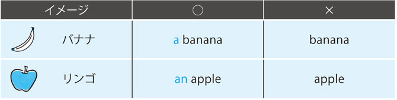
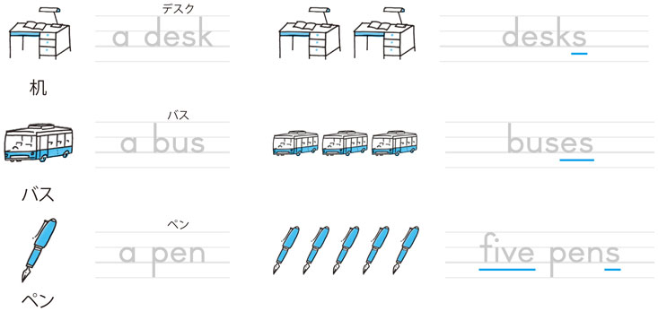
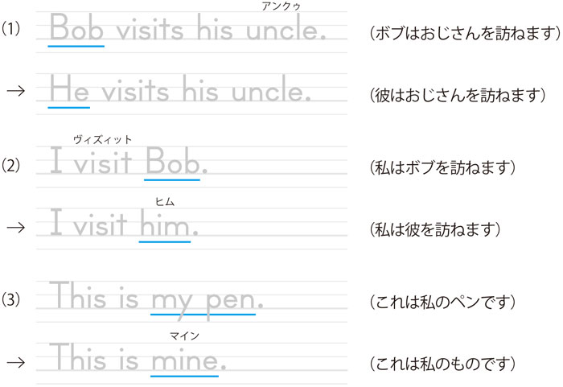
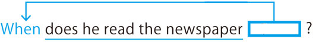

| [音声DL付]Mr. Evineのアルファベットから英語の基礎をなんとかするドリル Mr.Evineシリーズ | |
| Evine（恵比須大輔） | |
| (2010) | |
参照項目から元の箇所に戻るには、お使いのビューワーの仕様に従ってください。または一旦目次を表示し、戻りたい箇所の近くの見出しをタップして戻ってください。
まず、はじめに
皆さん、こんにちは。Evineです。この本を手にしていただいて、ありがとうございます。
初級者向けの英文法テキストを利用しようとする方の多くが、実はもう何冊かの類書に取り組んで挫折した経験がある方なのではないでしょうか･･･？
それもそのはず。英文法の勉強は非常に頭を悩ませるもので、特に超初級者の方にとっては、相性の良いテキストを探すのも一苦労なのです。
だから、挫折経験者も劣等感を感じる必要はありません！ 英語をゼロから学ぶこと、それには相当な忍耐と努力が必要で、初級者レベルを脱するまでの道のりが一番長く険しいのです。
本書の最大の特徴は、そういったビギナーレベルの方々の多くがマスターする前に挫折してしまう超コア（核）文法項目（中１レベル）、この部分の完全習得をゴールとしたことです。
広く浅くではなく狭く深く、とことん親切な解説を心掛け、一般にはこの程度なら理解できるだろう、とされてしまいがちな部分にもしっかりと解説を加えています。
それゆえに、本書が、超初級英語学習者の皆さんに贈る、英文法テキストの決定版であると強く確信しています。
本書の中身を大まかに説明すると、なぞり書きをしながらレッスンのテーマをつかむことができるIntroduction、レッスン内容の解説が収録されたInput stage、そして覚えた知識を実際に使うOutput stage（演習）の３部構成となっています。
IntroductionとInput Stageでは、すべての新出単語にカタカナルビを振り、掲載されている英文については、音声を収録しています。ですから、ネイティブスピーカーの音を確認しながら、音読練習を行えるようにもなっています。
そして、Output Stageは、前回のレッスンの復習問題と、そのレッスンの演習問題の２本立てとなっていて、復習と新しい内容の演習を同時に行うことができる構成となっています。
本書で扱う中１レベルの超コア文法、まずはここをなんとかしましょう！
そうすれば、これまで越えることができなかった壁を確実に越えることができるはずです。縁があって始めた語学、それを途中であきらめてしまうのはとてももったいないことです。本書での学習を通して皆さんの英語力の基礎がしっかり固まることを、心より願っています。
末筆になりましたが、本書刊行に際し『Mr. Evineの中学英文法＋αで「話せる」ドリル』に引き続きご尽力くださいました担当Y.M.さんと（株）アルク英語出版編集部の皆さん、そして刊行に関わる全ての関係者の皆さまに改めて御礼申し上げます。そして、いつも陰ながら執筆を支えてくれる僕の家族にも感謝します。
Contents
Proficiency Test
付録
解答・解説 Answer Key
Output Stage、まとめ問題、Proficiency Testの解答・解説
この本の構成と使い方
この本は、英語の基礎の基礎である中1レベルの学習項目を、アルファベットから学べる1冊となっています。アルファベットから疑問詞を使った疑問文の作り方まで、英語の土台となる必須項目を30日間で学びます。
本書は、アルファベットや基本単語などを学ぶPre-Lesson、中1レベルの文法事項を学習するChapter1～4、そして本書の総仕上げとして設けられた全レッスン修了テストの、3つのセクションによって構成されています。
Pre-Lesson
英語の基礎の基礎を学びます。
Pre-Lesson 1
本書の学習は、英語の基礎の基礎、アルファベットから始まります。
なぞり書き、音読練習を通して、「書いて・話して・聞いて」アルファベットを身につけます。
Pre-Lesson 2
英文を書くときに気をつけるべき基本ルールと、本書で登場する文法用語を押さえます。
英文の作り方については、Chapter 2以降でしっかり学びます。
Pre-Lesson 3
基本単語と一言英会話表現を押さえます。
掲載されている語や一言会話表現の音声が収録されていますので、音声を聞きながら音読練習をしましょう。
Pre-Lesson まとめ問題
Pre-Lesson1～3のまとめ問題です。学んだ項目が確実に定着しているかどうか、この演習で確認しましょう。
Chapter1-4
ここから、本格的な文法レッスンが始まります。
チャプターは4つあり、レッスンは全部で23あります。
1レッスンは、レッスンのテーマを明確にするためのIntroduction、文法解説が収録されたInput Stage、そして、学んだことを演習するOutput Stage、という3部構成です。
Introduction
解説・なぞり書き・音読を通して、レッスン内容をしっかりとつかみます。
（電子版ではなぞり書きはできません。手元に準備した紙に書き込みましょう。）
Input Stage
中学1年で学ぶレベルの文法項目の解説が収録されています。
このステージでの学習を通して、英語の基礎をしっかり固めていきましょう。
Output Stage
Input Stageで学んだ内容を演習するStageです。「前レッスンの復習問題+その日に学んだレッスンの演習問題」の2本立てとなっていて、「書く・聞く・話す」演習が用意されています。
問題を解き終えたら、後半のAnswer key（解答・解説）で答え合わせをしましょう。ここでは、問題の解説に加え、関連する重要事項についても触れていますので、全ての解答に目を通すようにしてください。
まとめ問題
各チャプターの終わりには、まとめ問題が収録されています。学んだことがしっかり身についているかどうか、この演習で習熟度を確かめましょう。
なお、「まとめ問題」の日は新しいことは学びませんので、各チャプターで学んだことをしっかり復習する日にするとよいでしょう。
1日1レッスンが一応の目安ですが、ご自分の学習ペースに合わせて無理のない範囲で進めてください。
全レッスン修了テスト
全てのレッスン、まとめ問題が終わったら、本書の総仕上げとして全レッスン修了テストに挑戦しましょう。本書で学んできたことがどれくらい身についているか、ここで確認しましょう。
習熟度は解答・解説にある、自己評価チェックリストを参考にしてください。
付録：あれば嬉しいレッスン別単語リスト
本書で収録されたすべての単語を、レッスン別にリストアップしました。
ぜひ独学に役立ててください。
さあ、30日間で英語の基礎をなんとかしましょう!!!
※各問題の解答を書き込めるように、紙を準備しておきましょう
無料ダウンロード音声について
本書に対応するMP3音声は、すべて無料でダウンロードしていただけます。本書では学習で音声を使用する部分は、DLTr 01 のように対応するトラック番号をアイコンで記載しています。
音声ダウンロードの方法
※PC専用のサイトです。まずはこちらにアクセス！
アルク ダウンロードセンター
http://www.alc.co.jp/dl/
（2015年2月時点の情報。今後詳細が変更になる可能性があります）
① 「ダウンロードリスト」の「英語」の中から、「Mr.Evineのアルファベットから英語の基礎をなんとかするドリル 無料ダウンロード音声」をクリック。
② 申し込みフォームに必要事項をご記入の上送信。
③ メールで「ダウンロードページURL」の案内が届きます。
④ 届いたURLにアクセスして、圧縮ファイルをダウンロードしてください。
ダウンロード音声ファイルについて
圧縮ファイルを解凍ソフトで展開の上、iTunesなどの音声再生ソフトで取りこんでご利用ください。音声再生ソフトでのファイルの取り込み方法や携帯音楽プレーヤーでの利用方法については、ソフトやプレーヤーに付属するマニュアルでご確認ください。
音声ファイルは、音声再生ソフトで次のように表示されます。
出版社名（アーティスト名）：「ALC PRESS INC.」と表示。
書名（アルバム名）：『Mr.Evineのアルファベットから英語の基礎をなんとかするドリル』
ダウンロードした音声のトラック名は
［Mr.Evineのアルファベットから英語の基礎をなんとかするドリル］のように、［トラック番号_内容］のルールで表示されます。本書の該当のトラック番号を確認して再生し、学習してください。
Pre-Lesson
アルファベットから
はじめよう!
Pre-Lesson 1
アルファベット大文字・小文字
Pre-Lesson 2
アルファベット大文字・小文字
Pre-Lesson 3
一言会話表現と基本単語
Pre-Lesson Review
まとめ問題
1回目 月 日／復習日 月 日
Pre-Lesson 1
アルファベット大文字・小文字
アルファベットの音読練習
DLTr 01
アルファベットは全部で26文字あります。意外と軽視されがちなのがアルファベットの発音です。アルファベットの音が英語の音の基本ですので、音声にならって、しっかりと音読練習をしましょう!
大文字
小文字
いかがでしたか?
とにかく何度も音読練習をして下さい。少しずつ発音のコツを身につけていきましょう!
なぞり書き練習
手元に用意した紙に実際に書き込んでみましょう。
教科書などでは書き順を明記している場合もありますが、見た目が正確であれば問題ありません。書きやすい順番で綺麗に書く練習をすればOKです。
それでは実際に、大文字と小文字を書く練習をしましょう!
1回目
2回目
注意すべきアルファベット
大文字から小文字にするときに間違いやすい組み合わせを確認しましょう。
大文字 B とD
↓
小文字 b とd
大文字 P とQ
↓
小文字 p とq
小文字では穴（丸）が向かい合わせになっていますね。混同しないようにしましょう。
では、練習しておきましょう!
丁寧に書きたいアルファベット
雑に書いてしまうと混同されがちなアルファベットを確認しましょう。
最後にもう一度練習
1回目 月 日／復習日 月 日
Pre-Lesson 2
英文の書き方、英語の素
英文で用いられる記号
DLTr 02
今日のレッスンではまず、英文作りに欠かせない基本的な記号を確認します。
なお、英文については、Chapter 2以降でしっかり勉強しますのでご安心ください!
| ・ | I like Mt. Fuji.（僕は富士山が好きです） |
| ピリオド（終止符） 疑問文以外の英文に用います。1つの英文がこれで終わりですよ、という合図で、日本語の「。」に当たるものです。 他に、Mt.（=mountain）（...山）のように、略語を示すためにも用いられます。 | |
| ? | Do you like dogs?（あなたは犬が好きですか？） |
| クエスチョン・マーク（疑問符） 疑問文の文末に用います。「この英文は相手に確認、あるいは質問している英文ですよ」、という合図になります。 | |
| , | Tom, do you like dogs? --Yes, I do.（トム、あなたは犬が好きですか? ─はい、好きです） |
| コンマ［カンマ］（読点） 疑問文に対する返答文のyes/noの後ろや、人への呼びかけの前または後ろなどで用います。 | |
| ' | Ken's dog（ケンの犬）／ I'm a teacher.（私は先生です） |
| アポストロフィー 所有を示す形（Ken's dog）や単語と単語の短縮形（I'm=I am）などを作ります。 コンマとアポストロフィー、それぞれの位置に気を付けましょう。 |
英文の書き方ルール
DLTr 03
これだけは知っておきたい、英文を書く上での基本ルールを確認しておきましょう。
（×）you like animals
（○）You like animals.
（あなたは動物が好きです）
（×）do you likeAnimals
（○）Do you likeanimals?
（あなたは動物が好きですか？）
英文の頭の1文字は、必ず大文字で始めます。文末にはピリオド（ . ）やクエスチョンマーク（ ? ）などの記号を用いて、英文が完了したことをしっかりと示してください。
原則として、最初の1文字以外はすべて小文字ですが、中にはルールを無視して文中でも大文字で自己主張をする単語もあります。
（×）Tom andi visitkyoto.
（○）Tom andI visitKyoto.
（トムと私は京都を訪れます）
（×）Ken andtomoko live incanada.
（○）Ken andTomoko live inCanada.
（ケンとトモコはカナダに住んでいます）
「私は」を意味するI、そして人名や国名、地名などを表す単語の頭文字は、文中でも常に大文字になります。
（×）Mr. Ishida andms. Tanaka are very nice.
（○）Mr. Ishida andMs. Tanaka are very nice.
（イシダさんとタナカさんはとても素敵です）
（×）Many people climbmt. Fuji.
（○）Many people climbMt. Fuji.
（たくさんの人たちが富士山に登ります）
他にも「...さん」「...様」などを表すMr. （男性に対して用いる）やMs. （女性に対して用いる）、そして「...山」を意味するMt.などの略語も頭文字は文中でも大文字です。
覚えることが多いと思うかもしれませんが、色んな英文に触れていく中で少しずつ慣れていきますので、安心してください。
実際に英文を書いてみましょう
DLTr 04
では、英文の書き方ルールを整理しましょう。
実際に英文を書くときには、単語と単語の間隔にも注意してください。アルファベット1文字分を目安に間隔を開けましょう。
それでは、英文の書き方を実際に練習してみましょう!
英語の素
本書でよく登場する文法用語を、簡単にまとめました。
| 語・語句 | アルファベット1文字だけでは意味はありません（冠詞aは例外［L.01、04で学習］）。2文字以上のアルファベットが組み合わさると、意味を持った1つの言葉になります。そうしてできたものを語（単語）と呼びます。 cat（ネコ）、small（小さな）など そして、語（単語）が他の語と合わさって2語（単語が2つ）以上になったものを、語句と呼びます。 a big cat（大きなネコ）、a tall girl（背の高い女の子）など |
| 名詞 | 「人」「もの」「事柄」などの名前を表す語です。 boy（男の子）、Evine（エヴィン）、water（水）、Kobe（神戸）、party（パーティー、集まり）など |
| 代名詞 | 名詞を別の言い方にした、代わりの語です。同じ名詞を繰り返さないために用いる、「彼」「彼女」「これ」「あれ」などに当たります。 名詞Bob（ボブ）→代名詞he（彼）、名詞Nao（ナオ）→代名詞she（彼女）、this（これ）、that（あれ）など |
| 形容詞 | 名詞を説明する語で、人や物事の「性質」「状態」「形」「数量」などを表します。 nice（素敵な）、quiet（静かな）、big（大きな）、square（正方形の）、many（たくさんの）など |
| 副詞 | 名詞以外のさまざまな語を説明し、おもに「場所」「時」「程度」「頻度」「様態」などを表します。 here（ここに）、soon（すぐに）、usually（たいてい）、often（しばしば）、fast（速く）など |
この後のレッスンではこれらの項目を丁寧に説明していますので、今の時点で理解できなくても全く問題ありません！
最終的にしっかり覚えるようにしましょう!
1回目 月 日／復習日 月 日
Pre-Lesson 3
一言会話表現と基本単語
一言会話表現
DLTr 05
［初対面］
1） Nice to meet you.
（初めまして）
2） Nice to meet you, too.
（こちらこそ［初めまして］）
初対面の人とあいさつをする際に用いる定番表現です。返答文は、同じ文を言ってから文末にtooを付ければOKです。
［挨拶］
3） How are you? / How are you doing?
（調子はどうですか?）
4） Great!
（元気ですよ）
5） Not bad.
（悪くないですよ）
3）は、実にさまざまな場面で使われる表現で、「お元気ですか?」の意味でも使われます。また、後ろにdoingを用いた形も一般的です。
定番の返答文Fine, thank you.（元気ですよ、ありがとう）のほかにも、実際には、4）、5）のようにいろいろな表現があります。
6） Good morning.
（おはよう）
7） Good afternoon.
（こんにちは）
8） Good evening.
（こんばんは）
9） Good night.
（おやすみ）
10） See you later.
（じゃあ、またね）
11） Goodbye.
（さようなら）
別れのあいさつのSee you later.のlaterは、soon（すぐに）、tomorrow（明日）、on Monday（月曜日に）など、状況に応じたさまざまな語句で言い替えることができます。
［返事］
12） Pardon?
（［聞き返すときに］何とおっしゃいましたか？）
相手の言ったことを正しく理解するために、もう一度繰り返し話してもらうために用いる表現です。
分からなかった場合は理解できたふりをするよりも、この表現を使って聞き返しましょう!
13） Really?
（本当ですか?）
14） I see.
（分かりました / 分かった）
14）のI see.は、相手の説明や話の内容を理解できたときに用います。
15） All right.
（OKです / いいですよ）
16） That's right.
（その通り）
17） Me, too.
（私もです）
相手への賛同を示す表現ですね。That's right.のthatは、相手が話してくれた内容を指します。
［感謝］
18） Thank you. / Thanks.
（ありがとう）
19） Thank you for your help.
（手伝ってくれてありがとう）
20） You're welcome.
（どういたしまして）
19）はforの後ろに相手の行為（your help［あなたの助け］）を用いて、感謝の内容を具体的に表した表現です。
相手の行為や気遣いに対する感謝の気持ちを言葉ではっきりと示すことが、コミュニケーションの基本ですね。
［その他］
21） Be careful.
（注意してください）
22） Excuse me.
（すみませんが）
23） Here we are.
（［目的地に］さあ、着きました）
24） Here you are. / Here.
（［物を差し出して］はい、どうぞ）
24）は相手に何かを差し出す際に用いる一言です。カジュアルな場面ではyou areを省略して、Here.だけで表すことも可能です。
25） How about you?
（あなたはどうですか?）
ある事柄について自分の考えや気持ちを伝えた上で、それについての相手の考えを尋ねる場合に用いる表現です。
曜日
DLTr 06
| 月曜日 | Monday |
| 火曜日 | Tuesday |
| 水曜日 | Wednesday |
| 木曜日 | Thursday |
| 金曜日 | Friday |
| 土曜日 | Saturday |
| 日曜日 | Sunday |
月と季節
DLTr 07
| 春 | 3月 | 4月 | 5月 |
| spring | March | April | May |
| 夏 | 6月 | 7月 | 8月 |
| summer | June | July | August |
| 秋 | 9月 | 10月 | 11月 |
| fall［autumn］ | September | October | November |
| 冬 | 12月 | 1月 | 2月 |
| winter | December | January | February |
数字
DLTr 08
| 0 | zero |
| 1 | one |
| 2 | two |
| 3 | three |
| 4 | four |
| 5 | five |
| 6 | six |
| 7 | seven |
| 8 | eight |
| 9 | nine |
| 10 | ten |
| 11 | eleven |
| 12 | twelve |
| 13 | thirteen |
| 14 | fourteen |
| 15 | fifteen |
| 16 | sixteen |
| 17 | seventeen |
| 18 | eighteen |
| 19 | nineteen |
| 20 | twenty |
| 21 | twenty-one |
| 31 | thirty-one |
| 41 | forty-one |
| 51 | fifty-one |
| 61 | sixty-one |
| 71 | seventy-one |
| 81 | eighty-one |
| 91 | ninety-one |
| 100 | one hundred |
20〜99はtwentyなどの後にハイフン（-）を置き、one、two、threeなどを付けるだけです。100以降はone hundred and one（101）などのようになります。
序数
DLTr 09
序数は「...番目」と順番を表現する数字です。
なお、日付を表すときは、基本的にこの序数を用います。例えば、It's September 7.（9月7日です）のSeptember 7はSeptember （the） seventhのように言います。
| 1番目 | first |
| 2番目 | second |
| 3番目 | third |
| 4番目 | fourth |
| 5番目 | fifth |
| 6番目 | sixth |
| 7番目 | seventh |
| 8番目 | eighth |
| 9番目 | ninth |
| 10番目 | tenth |
| 11番目 | eleventh |
| 12番目 | twelfth |
| 13番目 | thirteenth |
| 14番目 | fourteenth |
| 15番目 | fifteenth |
| 16番目 | sixteenth |
| 17番目 | seventeenth |
| 18番目 | eighteenth |
| 19番目 | nineteenth |
| 20番目 | twentieth |
| 21番目 | twenty-first |
| 30番目 | thirtieth |
| 31番目 | thirty-first |
1桁でも2桁でも、「4番目」以降は、語尾にthが基本です。
21番目〜29番目は、「数字 ＋ ハイフン（-）＋ 序数」の形になりますので注意しましょう。31〜39、41〜49、〜、91〜99も同様の形になります。
1回目 月 日／復習日 月 日
Pre-LessonReview
まとめ問題
Pre-lesson 1〜3までの内容を、演習で簡単にチェックしましょう。
※曜日、月、季節、数字、序数の問題は、今回の演習には含んでいません。
1.
［A］ （例）を参考に、次の文字をアルファベットの順番になるように並び替えましょう。
（例） D B C →B C D
（1） R Q S （2） V T U （3） G I F H （4） M J L K
［B］ 次の大文字で書かれた英単語をすべて小文字に直しましょう。
（1） DOG （2） QUIET （3） APPLE （4） BRIDGE
［C］ 次の英文には、書き方のルールで誤っている個所があります。全文を正しく書き直しましょう。
（1） you work hard every day
（君は毎日一生懸命に働きます）
（2） You and i are Good friends.
（君と僕は親友です）
（3） Do you know osaka
（あなたは大阪を知っていますか？）
2.
次の日本語を英語で表現したものを下から選び、記号で答えましょう。ただし、不要なものが1つあるので注意してください。
（1） じゃあ、またね。（ ）
（2） 分かりました。（ ）
（3） どういたしまして。（ ）
（4） はい、どうぞ。（ ）
（5） 本当ですか？（ ）
（6） お元気ですか？（ ）
（7） 手伝ってくれてありがとう。（ ）
［選択肢］
（a） You're welcome.
（b） Pardon?
（c） I see.
（d） Thank you for your help.
（e） See you later.
（f） Really?
（g） Here you are.
（h） How are you?
3.
次の言葉の説明文を下から選び、記号で答えましょう。
（1） 名詞 （ ） （2） 形容詞 （ ） （3） 副詞 （ ）
［選択肢］
（a） 名詞以外のさまざまな語を説明し、主に「場所」「時」「程度」「頻度」「様子」などを表す。
（b） 「人」「もの」「事柄」などの名前を表す。
（c） 名詞を説明し、人や物事の「性質」「状態」「形」「数量」などを表す。
Chapter 1
単語の扱い方を
学ぼう!
Lesson 01
名詞を数えましょう ～単数形と複数形（1）～
Lesson 02
名詞を数えましょう ～単数形と複数形（2）～
Lesson 03
数えられる名詞と数えられない名詞
Lesson 04
名詞の前のa/an/the
Lesson 05
名詞を説明する形容詞
Chapter 1 Review
まとめ問題1
1回目 月 日／復習日 月 日
Lesson 01
名詞を数えましょう ～単数形と複数形（1）～
Introduction
DLTr 10
名詞とは「人や物」、「世の中の事柄」の名前を表す言葉です。日本語にも、もちろん名詞はありますね。
この「バナナ」が名詞です。この名詞を知らなければ、「黄色くて、細長くて、皮をむいて食べる甘い果物」と説明しなければなりません。しかし、お互いに名詞を知っていると、相手にそのイメージを簡単に伝えることができますよね。
言い換えると、自分が見るもの（考えること）を名詞に置き換えて相手に発信することができなければ、コミュニケーションはスムーズにいかないということです。
そこでまずは、英語における名詞のあれこれを勉強していきましょう！
名詞のなぞり書きにチャレンジしましょう！
それぞれ形が2種類ありますね。a/anが付いていたり、a/anはないけれども語尾に変化があったり...。
さあ、これらの形の秘密について、本編でしっかり学びましょう！
Input Stage
名詞の単数形と複数形
日本語の名詞では意識しないことですが、英語には単数形と複数形という区別があります。それでは、apple（リンゴ）を例に確認してみましょう。
上の絵から分かるように、名詞が単数か複数かによって、名詞の形が変化（apple→apples）しています。複数になると、語尾にsが付く変化が起こるようですね。
| 単数形 | 1人、1つ、1個など、「1」を示す形 |
| 複数形 | 2人、2つ、3冊、10匹など、とにかく「2」以上を示す形 |
OKでしょうか、つまりIntroductionでチェックした名詞は、単数形と複数形を表していたのですね。
今日のレッスンではまず、「1」を示す単数形の使い方を勉強します。（複数形についてはL. 02で学びます）
a/an＋名詞の単数形
単数形は、名詞そのものの形は変化しません（辞書に載っているものと同じ形）。これはありがたいですね。appleはappleのままです。
ただし、その前に数が「1（1つ／1個など）」であることを示すa/anが必要なのです。
（a/anにはほかの役割もありますが、それについてはL.04で学びます。今回は、「a/an＋名詞の単数形」ルールをしっかり学びましょう）

このように、単数形の場合、名詞そのものの形は変化しませんが、aかanが必要なわけです。
日本語では会話や文の中で、わざわざ「バナナ1本」「リンゴ1個」とは言いませんよね。しかし、英語では、「1本、1個」を確実に表現する必要があるので、「1」であることをaかanを用いることによって明確にしないといけないのです。
aとanの使い分け
aとanの使い分けにはポイントがあります。
実は、名詞（単数形の名詞）の出だしの発音によって、aなのかanなのかが決まります。
例えばappleの場合、カタカナの「ア」に近い音から始まります。このappleのように、名詞の発音が母音［a, i, u, e, o］（日本語のカタカナ「ア・イ・ウ・エ・オ」に近い音）で始まる場合は、リズムや言いやすさの関係でanになります。
| 英単語 | ○ | × |
|---|---|---|
| banana | a banana | an banana |
| apple | an apple | a apple |
それでは、a/an＋単数形の名詞の練習をしましょう。
OKでしょうか？ 名詞の発音をしっかり意識しながら、a/anのどちらを使うかの判断をしてくださいね。
Evine's Word
語学においては、誰もが最初は「初心者」です。焦る必要はありません。地道に取り組めばいつかは必ず脱・初心者！
Output Stage
Lesson01の演習問題
1.
DLTr 11
音声を聞きながら、母音で始まる名詞の発音練習をしましょう。音声は、「名詞のみ」、「an＋名詞」の順に聞こえます。
（1） apple an apple
（2） onion an onion
（3） egg an egg
（4） octopus an octopus
（5） orange an orange
（6） hour an hour
2.
DLTr 12
音声を聞いて、発音された方を丸で囲みましょう。
（1） a animal an animal
（2） a bag an bag
（3） a hospital an hospital
（4） a ant an ant
（5） a year an year
3.
［A］ （例）を参考に、下の絵から単数形で表せるものの記号を選び、その名詞を書きましょう。※順不同
（例）（ a ） a banana

［B］ （例）を参考に、次の日本語の単数形の名詞を書きましょう。
（例）イヌ a dog
（1） ミカン/オレンジ
（2） ボート
（3） ノート
（4） タマネギ
（5） 木
1回目 月 日／復習日 月 日
Lesson 02
名詞を数えましょう ～単数形と複数形（2）～
Introduction
DLTr 13
前回のレッスンでは、英語の名詞には単数形と複数形があること、そして単数形について詳しく勉強しましたね。
今日は、複数形をチェックします。覚えることが少し増えますが、レッスンを進めるうちに自然と頭に入りますので、安心してください！
名詞の複数形の作り方にはいくつかのパターンがあります。基本的には、名詞の語尾（お尻）のつづりや発音の特徴に合わせて語尾が変化します。
また、語尾の変化に加えて、発音も大切になりますので注意しましょう。
名詞の複数形を確認しましょう！

語尾のsとes、それぞれのパターンについてしっかり学んでください。また、数を具体的に示す単語（five）にも注目しましょう。
それでは、複数形について本編でたっぷり勉強しましょう！
Input Stage
「2（2つ／2個など）」以上は複数形
名詞が単数の場合とは異なり、複数（「2」以上）のときは、何らかの語尾変化が生じます。これが英語における名詞の原則です。
ポイントは、「1（1つ／1個など）」を示すaやanは、複数形の名詞には必要ないということ。そして、名詞の語尾（お尻）に「s」がくっ付くことです。これが複数形を示す形です。つまり、この「s」があることによって、「この名詞は数が［2］以上ですよ」、ということが分かるのです。
英語はとにかく、「数」を大切にする言葉です。
複数形の名詞の作り方
それでは、複数形の名詞の作り方をチェックしましょう。
単数形は単純でしたが、複数形の作り方にはいくつかのパターンがあるので、それぞれ覚えなければなりません。早速チェックしましょう！
これぞまさに複数を表す基本形。単語の語尾（お尻）にsを付けるだけ！

日本語の「ッチ」「ッシュ」「ス」「クス」「ズ」に近い音で終わる名詞の場合は、語尾にesを付けます。名詞の語尾の発音にも注目すればいいんですね。
語尾がyのときはその手前の音に注目してください。yの左隣の音が子音（母音以外のすべての音）であれば、yをiに変えてesをくっ付けます。
そんなに数は多くありません。パターン3のyがf/feになっているケースと考えてください。yはiでしたが、f/feはなんとvになります。
※語尾がf/feのすべての単語に当てはまるとは限りません。本書で挙げるものをまずは押さえてください。
これはもう例外として、英文や演習などを通して1つ1つ覚えていくしかありません。
まずはパターン1〜4までを完ぺきに覚えておき、そのパターンを基に語尾がどのように変化するかを考えてみましょう。その過程で例外的なものに出合った場合は、間違いをきっかけに、その都度覚えていくようにしてください。
以上が複数形の作り方のパターンです。
「s変化＝複数形の名詞」をしっかりと覚えること、これが複数形マスターへの第一歩です！
「1」から「10」までの英数字
複数形をマスターしたら、具体的な数を示すための英数字も一緒に覚えたいですね。
Pre-Lesson 3でも出てきましたが、覚えているでしょうか？
今日のレッスンでは、「1〜10」までを再確認しましょう。
| 1 | a/anまたはone | 6 | six |
| 2 | two | 7 | seven |
| 3 | three | 8 | eight |
| 4 | four | 9 | nine |
| 5 | five | 10 | ten |
a/anやoneは単数形、twoからtenは複数形で用います。
それでは、a/an＋単数形の名詞の練習をしましょう。
「1台の車」acar / one car
「10冊の本」ten books
それでは、1〜10までの数字を実際に書いてみましょう。
実際の会話では、「1」を表す場合、oneではなくa/anを用いるのが一般的です。
また複数形については、英数字を前に置かずに複数形だけを用いて不特定多数を表現することもよくあります。それも一緒に覚えておきましょう。
一気に覚えるのは大変かもしれませんが、大切なことです。しっかり復習してくださいね。
Output Stage
Lesson01の復習問題
次の絵とそれを表す英語が一致していれば（ ）に○を、間違っていれば正しい英語を書きましょう。

Lesson02の演習問題
1.
DLTr 14
音声を聞きながら、複数形（-s/es/ies）の名詞の発音練習をしましょう。
発音する際には、以下のポイントを参考にしてください。音声は、「単数形」、「複数形」の順に聞こえます。
| パターン | 発音 | 発音ポイント |
|---|---|---|
| 1 | ズ[z] | これが基本 |
| 2 | ス[s] | フ[f] クッ[k] プッ[p] トゥ[t＊1] ス[θ＊2]の音の後ろのsはこの音 ＊1 トゥ[t]の後ろにsをつけた場合は、tとくっついてツ[ts]と発音します。 ＊2 ス[θ]は舌先を上下の歯で軽くかんで息を出す音 |
| 3 | イズ[iz] | ス[s]ズ[z]シ[∫]チ[t∫]ジ[ʒ]ヂ[dʒ]の音の後ろのesはこの音 |
パターン1：
（1） a dog dogs
（2） a chair chairs
（3） a ball balls
（4） a bag bags
パターン2：
（1） a cake cakes
（2） a cat cats
（3） a shop shops
（4） a comic comics
パターン3：
（1） a box boxes
（2） a sandwich sandwiches
（3） a dish dishes
（4） a bus buses
2.
DLTr 15
［A］ 音声を聞いて、発音された方を丸で囲みましょう。
（1） cookie cookies
（2） class classes
（3） diary diaries
（4） rabbit rabbits
（5） week weeks
［B］ 音声を聞いて、（ ）に当てはまるものを下の選択肢から選びましょう。なお、同じ記号を何度も用いても構いません。
DLTr 16
（1） （ ） egg
（2） （ ） tomato
（3） （ ） apples
（4） （ ） pen
（5） （ ） octopuses
（6） （ ） hour
（7） （ ） chairs
［選択肢］
（a） a （b） an （c） three （d） four （e） two
3.
［A］ 次の単数形の名詞の複数形を書きましょう。
（1） a city
（2） a peach
（3） a child
（4） a wife
（5） a book
（6） a chair
（7） a dish
（8） a fax
（9） a class
（10） a man
［B］ （1）を参考に、絵の名詞をa/anまたは数詞を用いて2語の英語で書きましょう。
Evine's Word
1日15分でも構いません。学習を習慣にすること、まずはそこを目指しましょう。塵も積もれば山となる！
1回目 月 日／復習日 月 日
Lesson 03
数えられる名詞と数えられない名詞
Introduction
DLTr 17
これまでのレッスンで、名詞の単数形と複数形を勉強しました。英語は、名詞の数が「1」なのか「2以上」なのかをハッキリと表現する必要があるのでしたね。
ところが、英語には、この単数形や複数形を持たない名詞も存在するのです。
単数形か複数形かは、その名詞が「1人・1つ」「2人・2つ」と数えられることを前提にしていますが、このような単数形・複数形の形を持つ名詞を数えられる名詞と呼びます。そして、そんな形をまったく持たない名詞を数えられない名詞と呼びます。
今日のレッスンでは、これらの名詞の違いを徹底的に学びます！
次の2つのグループを比較してみましょう。
＊ cap（［縁なしの］帽子）、car（車）、information（情報）、money（お金）
結論から言えば、グループBが数えられない名詞です。グループAと違いグループBの名詞には単数形を示すa/anがありませんし、複数形のs/esもありませんね。
さあ、両者の違いを本編でしっかり押さえましょう！
Input Stage
数えられる名詞のイメージ
まずは、数えられる名詞のイメージから確認していきます。
ある程度の明確な共通イメージを頭の中で描けるのが「数えられる名詞」です。
例えば、cap（帽子）やcar（車）をイメージしてみましょう。
いかがですか？ 一般的な共通イメージが容易に浮かんできますね。
このように、数えられる名詞は「イメージ化」がしやすいというのがポイントです。
数えられない名詞のイメージ
では、time（時）やinformation（情報）はどうでしょうか？
イメージを描こうにも、時間や情報のイメージなんて多種多様で、1つに定まりませんよね？
頭で簡単に「イメージ化」ができない、これが数えられない名詞の大きな特徴です。
世の中に1つだけのもの＝数えられない名詞
頭で簡単に「イメージ化」できない名詞に加えて、Japan（日本）、Mt. Fuji（富士山）、English（英語）、tennis（テニス）など、ほかに類のない唯一の存在も数えられない名詞とされます。これはもう、世の中に1つですので、数えられないというよりは数える必要はないものですね。
「月曜日」
（○）Monday
（×）a Monday
「曜日」もほかに種類がありませんよね。常に原形（辞書に掲載されている形）でOKです。
数えられない名詞はネイティブの感覚で押さえる
では、money（お金）はどうでしょうか？
実はこのmoney、日本人が混乱する数えられない名詞の代表的な例の1つなのです。
まずは、日本人とネイティブの抱くイメージを比較してみましょう。
money（お金）
どうでしょうか。日本人の感覚では「お金」は数えられますよね？ しかし、ネイティブの感覚ではmoneyは具体的に「金額いくら」を示すわけではなく、漠然とした総称的なイメージなのです。
彼らにとって具体的なお金とは、dollar（ドル）やcentのことを指します。
これらは「10セント」「100ドル」と具体的なお金の単位を示すもので、この単語だと、「数えられる名詞」というイメージになるのです。一方moneyは、具体的な金額を示すわけではないので、「数えられない名詞」とするわけですね。
| money（お金） | 具体的な金額を示さない | 数えられない名詞 |
| dollar（ドル）/ cent（セント） | 具体的な金額を示す単位 | 数えられる名詞 |
このように、「お金」に対する発想の仕方が日本人とネイティブとでは違うわけです。
英語を学ぶ上では、彼らの感覚にも注目することが重要なのですね。
このほかにも、milk（牛乳）、water（水）、coffee（コーヒー）のように液体を表すものや、sugar（砂糖）、salt（塩）、paper（紙）のように一定の形のないものなども数えられない名詞となります。
数えられる名詞には単数形と複数形がある
さて、L. 01と02では名詞の単数形と複数形を勉強しましたが、これは「数えられる名詞」のみに適用されます。
一方、「数えられない名詞」の場合は、形の変化は一切ありません。
| 数えられる名詞 | 単数形と複数形の形がある |
| 数えられない名詞 | 単数形と複数形の形がなく常に原形のまま |
数えられる名詞の場合は、単数形のa/anが必要だったり、複数形のs/esの変化に注意しなければなりませんでしたね。
しかし、数えられない名詞は、形の上では単純です。単数形・複数形を持たないので、常に原形のままでOKなのです！
※原形はa/anも何も付かない形、単数形はa/anが付く形
| 名詞 | 種類 | ○ | × |
|---|---|---|---|
| 手紙 | 数えられる名詞 | aletter / letters | letter |
| お茶 | 数えられない名詞 | tea | a tea / teas |
名詞が「数えられない名詞」と判明した時点で、これまでに勉強してきた単数形や複数形のルールは一切適用されません。しっかり覚えましょう！
数えられない名詞を「数える」には？
ところで、数えられる名詞は単数形や複数形で、数の大小を示すことができましたね。
では、その形がない数えられない名詞の場合はどうしたらよいでしょう？
実は、いくつかの表現を用いて、大小の量を示すことができるのです。そして、その表現は名詞によって異なるのです。まずは代表的なものを覚えて、それから少しずつ表現のバリエーションを増やしていきましょう！
例えば、数えられない名詞milkを見てみましょう。
う〜ん、このままでは数えようがありませんが、
a glass of ...（グラス1杯の...）という表現を用いて容器に入れて考えれば、「グラス1杯の牛乳」と、「1杯」「2杯」などの単位として数えられるようになるのです。
それでは、今日のレッスンでは次の3つを覚えましょう。
| 数えらない名詞の量を示す表現 | 例 |
|---|---|
| a glass of ...（グラス・コップ1杯の...） | a glass of water（グラス・コップ1杯の水） |
| acup of ...（カップ1杯の...） | a cup of coffee（カップ1杯のコーヒー） |
| apiece of ...（1切れの...） | a piece of paper（1枚の紙、紙切れ） |
このglass、cup、piece自体は「数えられる名詞」です。例えば「1杯の」が「2杯の」と複数になれば、その名詞も複数形にしましょう。
数えられない名詞paper（紙）→「4枚の紙切れ」とするには？
（○）four pieces of paper
（×）four piece of paper / four papers
単数形pieceが複数形piecesになっているのがポイントですね。
では、ほかの例も見てみましょう。
このように、具体的な数は、前に数詞（two、threeなど）を置くことで表現することができます。
色々と注意点が増えてきましたが、本書を何度も読み返し、演習を通して確実に基礎力を養っていきましょう。十分に時間を掛けてください！
Output Stage
Lesson02の復習問題
次の絵とそれを表す英語が一致していれば（ ）に○を、間違っていれば正しい英語を書きましょう。
Lesson03の演習問題
1.
DLTr 18
音声を聞きながら、数えられない名詞の表現の、発音練習をしましょう。
（1） wine - a glass of wine - five glasses of wine
（2） tea - a cup of tea - three cups of tea
（3） sugar - a piece of sugar - two pieces of sugar
2.
DLTr 19
音声を聞いて、発音された方を丸で囲みましょう。
（1） a green green
（2） birthday birthdays
（3） a butter butter
（4） an elephant elephant
（5） lakes lake
（6） food foods
（7） name names
（8） a grass grass
3.
［A］（1）（2）を参考に、数えられない名詞には（ ）に○を、数えられる名詞の場合はその複数形を書きましょう。
（1） water （ ○ ）
（2） orange （ ）oranges
（3） dog （ ）
（4） door （ ）
（5） movie （ ）
（6） baseball （ ）
（7） love （ ）
（8） bread （ ）
（9） box （ ）
（10） Friday （ ）
（11） sock （ ）
（12） salt （ ）
［B］ （1）（2）を参考に、次の日本語の単数形の名詞を書きましょう。ただし、数えられる名詞の場合は、a/anをつけましょう。
（1） 宿題 homework
（2） アリ an ant
（3） コーヒー
（4） 手紙
（5） 卵
（6） 雨
（7） 写真
（8） （縁なしの）帽子
（9） 牛乳
（10） テニス
Evine's Word
覚えられないのは、単に復習不足の場合が多いのです。覚えられなければ、その分復習量を増やしてみましょう！
1回目 月 日／復習日 月 日
Lesson 04
名詞の前の a/an/the
Introduction
DLTr 20
数えられる名詞の単数形で練習したa/anを覚えていますか？「1」であることを示すa/an、実はこの「1」のほかに、重要なニュアンスを含んでいるのです。
ahouse（1軒の家）、an apple（1個のリンゴ）
実はa/anは、「1」という数を伝えるだけではありません。次のような印象も相手に与えることができるのです！
a house（ある1軒の家）、an apple（ある1個のリンゴ）
そうなんです。a/anには「ある〜」というニュアンスがあるんですね。
そして、これとは対照的なものとして今日のレッスンで登場するのが、theです。「ザ・○○」という感じで私たちにはなじみがありますが、使い方には色々と工夫が必要です。
これらa/an/theは、名詞の前にくっ付く特徴から、冠詞と呼ばれています。
aとthe のイメージを比較してみましょう。
theはまさにこの矢印イメージ。話し手と聞き手の間で、矢印で示したような特定のイメージがあるものはthe house、逆に特定イメージがないものはa houseとなります。
さあ、この冠詞が会話にどう影響するのか、本編でしっかり勉強していきましょう！
Input Stage
冠詞a/anのおさらい
まずは基本を整理しましょう！
a/anは数えられる名詞の単数形にしか用いられませんでしたね。
| ○ | × |
|---|---|
| a dog | a water...waterは数えられない名詞 |
| an egg | an eggs...複数形にa/anはNG |
OKでしょうか？
またa/anは、数字の「1」を表現することができました。日本語ではさほど重要ではありませんが、英語では数を明確にしなければならないんでしたね。
冠詞a/anの効果
それでは、a/anのもう1つの働きである、a/anの示す「不特定」「新情報」ニュアンスを学びましょう。
実は、a/anがくっ付いた名詞は、相手にとって初めて耳にする言葉であることを示すのです。また、話し手が相手はきっと知らないだろうなと推測する場合にも、a/anを用います。
ですから、お互いに知っている人や物事を表す名詞には、a/anを用いないのです。
冠詞theの効果
続いて、初登場のtheについて学びましょう。
冒頭でも軽く触れましたが、theの基本的な訳は「その〜」です。この日本語からも、a/anの「ある〜」の不特定イメージとは異なり、theには特定イメージがあることが分かりますよね。
ただし、「the =その」はあくまでも便宜上の覚え方です。実際には「その」と訳さない方が自然な場合もあります。大切なことは、theはお互いにどの名詞のことを言っているのかが分かっている状況で使う、ということです。
では、次の2人の会話を見てください。
A: 寒いね。Thedoor （ドア）を閉めてくれない？
B:OK!（了解！）
この会話が成り立つのは、お互いにどのドアのことを言っているのかが分かっているからですね。逆にこの状況で不特定のa doorとするのは不自然ということになります。
A: The salt （塩）を取ってくれない？
B: OK!（了解！）
「テーブルの上に乗っている/あなたのそばにあるその塩」というニュアンスが出るので、このように数えられない名詞にも使えるのです。
どうでしょうか？ theのニュアンスには慣れてきましたか？
今後、例文や演習でtheを見かけたときは、なぜtheが使われているのか考えてみてください。theが使われている理由を感覚的に理解できるようになったときには、英語力もアップしているはずです。
冠詞theは数えられない名詞にも使える
特定イメージのtheは、a/anのように数を示すわけではありません。
先ほどの例のように基本的にどんな名詞にもくっ付き、その名詞を「その」と特定化することができます。
| 数えられる名詞 | 単数形 | thebike | その自転車 |
| 複数形 | the bikes | それらの自転車 | |
| 数えられない名詞 | the money | そのお金 | |
a/anは数えられる名詞の単数形のみに用いることができましたが、theは何でもありです。ただし、名詞を特定化する働きがあるので、明確に「その/あの」と言うときに使うということを押さえておきましょう。
a/an/theのない無冠詞
今まで、英語における冠詞の重要性を学んできましたが、実は、a/an/theのいずれかの形がどんな名詞にもつくとは限らないのです。次のような名詞は通常、a/an/theを前に置かない無冠詞の状態で用いられます。
| 無冠詞の名詞 | ○ | × |
|---|---|---|
| 人の名前 | Evine（エビン） | an Evine |
| 国の名前 | Japan（日本） America（アメリカ） | a Japan an America |
| 都市や町の名前 | London（ロンドン） Karuizawa（軽井沢） | a London a Karuizawa |
| スポーツや食事 | baseball（野球） lunch（昼食） | a baseball a lunch |
残念ながら上の例が全てではありませんし、慣用的にtheを用いる表現もあります。しかし、代表的なものは今後のレッスンを進める中で覚えていくようにしますので安心してください。
まずは、このレッスンで学んだ冠詞a/an/theの基本ニュアンスをしっかりと頭に入れましょう！
Evine's Word
最初の理解度は50％でもOKです。最終的に100％になればよいのです！
Output Stage
Lesson03の復習問題
次の名詞の複数形を書きましょう。ただし、数えられない名詞の場合は（ ）に×を書きましょう。
（1） bed （ ）
（2） music （ ）
（3） time （ ）
（4） class （ ）
（5） wife （ ）
（6） coffee （ ）
（7） country （ ）
（8） dollar （ ）
（9） bread （ ）
（10） money （ ）
Lesson04の演習問題
1.
DLTr 21
音声を聞きながら、「the＋名詞」の発音練習をしましょう。
theは基本的にはカタカナの「ザ」に近い音[ðǝ]ですが、母音始まりの名詞の前では言いやすさやリズムの関係で、「ズィ」に近い音[ði]になります。音声は、「a/an＋名詞」、「the＋名詞」の順に聞こえます。
普通のthe「ザ」：
（1） a door --- the door
（2） a boy --- the boy
（3） water --- the water
（4） money --- the money
母音の前のthe「ズィ」：
（5） an apple --- the apple
（6） an octopus --- the octopus
（7） an oven --- the oven
（8） an orange --- the orange
2.
［A］ （1）（2）を参考に、次の名詞の前にa/an/theのいずれかを書きましょう。ただし、（2）のように名詞によっては答えが2つの場合もあります。
（1） the water
（2）a/the boy
（3） doctor
（4） apples
（5） computer
（6） days
（7） egg
（8） tea
（9） children
（10） students
［B］ （例）を参考に、文脈に合った冠詞を選び○で囲みましょう。
（例）彼女には（a / the ） babyがいます。（ A /The ） babyはとても可愛いです。
（1）Evine: 昨日、（ a / the ） dictionaryを買いました。
You:また買ったんですか？
（2）You:先週、新しい本屋さんがオープンしたんですよ。
Evine:知りませんでした、（ a / the ） bookstoreはどこにあるんですか？
（3）Evine:すみません、（ a / the ） windowを閉めてくれませんか？
You:分かりました！
［C］ 下の選択肢の名詞のうち無冠詞（a/an/theがない）の状態で用いられる名詞を5つ選び、解答欄に書きましょう。※順不同
（1）
（2）
（3）
（4）
（5）
［選択肢］
bike New York basketball man dinner girl Yukari Australia
1回目 月 日／復習日 月 日
Lesson 05
名詞を説明する形容詞
Introduction
DLTr 22
a dog（犬）、boys（男の子たち）、thehotel（そのホテル）など、名詞についてはもうバッチリだと思います。
確かに、名詞を用いることで、伝えたいものが何であるかを理解してもらえますが、これって本当に最低限の情報ですよね？
その名詞が「どんなもの・どんな様子」であるのか、これも一緒に伝えることができれば、相手の理解も深まります。この、「どんなもの・どんな様子」であるのかを表す便利な働きをするのが形容詞です。形容詞はいつも名詞をサポートします。この形容詞をうまく活用すれば、コミュニケーションはよりスムーズになります！
形容詞のあるなしで、イメージの比較をしてみましょう。
a house
（［ある1軒の］家）
a blue house
（［ある1軒の］青い家）
違いは明確ですね！ blue（青色の）という名詞を説明する形容詞を用いたことで、ぼんやりとしたイメージの家から、「青い家」というより具体的なイメージに変わりました。
さあ、この表現力を生み出す便利な形容詞が具体的にどんな働きをするのか、本編でしっかり勉強していきましょう！
Input Stage
名詞を説明する形容詞
それでは、形容詞の働きを詳しく勉強していきましょう。
| 名詞のみ | 形容詞＋名詞 |
|---|---|
| a dog（犬） | asmall dog（小さな犬） |
| atest（テスト） | adifficult test（難しいテスト） |
名詞a dogのままでは、詳しい姿かたちまでは想像がつきません。a testもこのままでは種類や難易度はさっぱり分かりませんね。
そこで今日学ぶのが、small（小さな）やdifficult（難しい）などの形容詞です。
形容詞には、名詞を詳しく説明する働きがあります。ポイントは、名詞のみを説明するということです！
「形容詞＋名詞」の語順
形容詞の場所は、サポートに好都合な名詞の直前が原則です。「形容詞＋名詞」の語順を覚えておきましょう。ということで、a/an/theの位置は形容詞の割り込みにより頭に移動（左にズレる）しますので、注意してください。
| ○ | × |
|---|---|
| abig dog（大きな犬） | big a dog |
| aneasy test（簡単なテスト） | easy a test |
また名詞の前に形容詞を用いる場合、形容詞の頭が母音かどうかでaとanを使い分ける必要があります。
上の例のeasy [íːzi]は、母音で始まるのでanになるのですね。
ではここで、並び替え練習をしましょう。
形容詞いろいろ
名詞の様子や形を説明する形容詞は、その働きの特徴を考えても分かるように、非常にたくさんあります。
今日は、その中でも、まず覚えておくべき形容詞のみをチェックしておきましょう！
大小
| big（大きな） | a bigbaby（大きな赤ちゃん） |
| small（小さな） | a small baby（小さな赤ちゃん） |
難易度
| difficult（難しい） | a difficultquestion（難しい問題） |
| easy（簡単な） | an easy question（簡単な問題） |
寒暖
| cold（寒い） | a cold winter（寒い冬） |
| hot（暑い） | a hot summer（暑い夏） |
新旧
| new（新しい） | new books（新刊書） |
| old（古い） | old books（古書） |
長短
| long（［時間・距離・長さが］長い） | longhair（長い髪） |
| short（［時間・距離・長さが］短い） | short hair（短い髪） |
様子・状態
| good（良い） | good friends（親友たち） |
| bad（悪い） | badmusic（ひどい音楽） |
| happy（幸せな） | a happylife（幸せな人生） |
| interesting（面白い） | an interesting idea（面白い考え） |
| beautiful（美しい） | a beautifullake（美しい湖） |
たくさん種類がありすぎて困ったものですが、本当によく目にする形容詞ばかりですから、継続して勉強していれば自然にマスターできますので安心してください。
また「形容詞＋名詞」の形を勉強するとつい冠詞の存在を忘れがちですが、名詞があればその名詞に対して用いる冠詞の種類を常に意識しましょう。
「大きなライオン」
（○）a big lion
（×）big lion
lionは数えられる名詞ですから冠詞を用いるか、複数形big lionsにしましょう。
「良い情報」
（○）good information
（×）a good information
形容詞goodがあっても冠詞は名詞に対してつきますから、名詞が数えられない名詞(information)であればaは不要です。
注意すべき形容詞many/much/a lot of
実は形容詞の中には、後ろにくる名詞が数えられるのか、数えられないのかを考えないといけないものがあります。
「たくさんの」を意味する形容詞を例に、確認しましょう！
| 「たくさんの」を示す形容詞 | 説明する名詞の種類 | |
|---|---|---|
| many | alotof | 数えられる名詞 |
| much | 数えられない名詞 | |
（○）many cards（たくさんのカード）
（×）much cards
（○）much water（たくさんの水）
（×）many water
a lot ofは便利で、数えられる名詞と数えられない名詞のどちらにも使うことができます。
（○）a lot of cards
（○）a lot of water
また、manyとa lot ofの形容詞を用いるときは、数えられる名詞は必ず複数形になります。
「たくさんの」という意味は、その名詞が複数であることを示すからですね。
（×）manycard
（×）a lot ofcard
Output Stage
Lesson04の復習問題
a/an/theの使い方が正しければ（ ）に○を、間違っていれば×を書きましょう。
（1） an oranges （ ）
（2） an egg （ ）
（3） the cars （ ）
（4） the tea （ ）
（5） a airport （ ）
（6） the Osaka （ ）
（7） balls （ ）
（8） the movie （ ）
（9） carrot （ ）
（10） a breakfast （ ）
Lesson05の演習問題
1.
DLTr 23
次の日本語をヒントに、音声の英語を書きましょう。
（1） 「小さなネコ」
（2） 「新しい机」
（3） 「面白い授業」
（4） 「その難しい宿題」
（5） 「幸せな友人たち」
（6） 「たくさんの夢」
（7） 「たくさんの食料」
2.
［A］ 次の語を正しい順番に並び替えましょう。
（1） black / a / cat
（2） an / novel / interesting
（3） beautiful / the / mountains
（4） of / ink / lot / a
［B］ 次の語句の誤りを訂正し、正しいものを書きましょう。
（1） many father
（2） a old camera
（3） an small ant
（4） cold a season
［C］ 次の形容詞の反対の意味を持つものを、下の選択肢から選び書きましょう。ただし、必要のないものが1語ありますので注意してください。
（1） short ⇔
（2） easy ⇔
（3） hot ⇔
（4） big ⇔
（5） bad ⇔
［選択肢］
good cold long small interesting difficult
Evine's Word
辞書の使い方を知るのも勉強です。辞書には、単語についての知識が満載です！
1回目 月 日／復習日 月 日
Chapter 1Review
まとめ問題 1
L. 01〜05で勉強した内容の定着度を確認しましょう。
間違えた個所については、解答・解説に記載されている参照レッスンを復習して、確実にマスターしましょう！
1.
［A］ 次の各組の複数名詞を聞きとり、複数形を示す語尾s/esの発音パターンが同じであれば○、同じでなければ×を書きましょう。
DLTr 24
（1） balls --- pens （ ）
（2） boxes --- dishes （ ）
（3） dogs --- watches （ ）
（4） cups --- shops （ ）
［B］ （例）を参考に、「英数字 plus 英数字」を聞き取り、2つの数字を足した数を英語で書きましょう（plusは＋、「足す」という意味です）。
DLTr 25
（例） one plus one （答） two
（1）
（2）
（3）
（4）
2.
文法的に正しいものには○、間違っていれば×を書きましょう。
（1） （ ） book（ ） two books（ ） two book
（2） （ ） the salt（ ） a salt（ ） salts
（3） （ ） a music（ ） good a music（ ） good music
（4） （ ） an big egg（ ） a big egg（ ） big egg
3.
［A］ 次の日本語の意味になるように、（ ）に当てはまる語を書きましょう。
（1） 背が高い木々
tall（ ）
（2） コップ1 杯の水
（ ）（ ）of（ ）
（3） 新しい腕時計
＊腕時計＝ watch
（ ）（ ）
（4） 多くの子どもたち
＊子ども＝ child
a （ ）（ ）（ ）
（5） ある美しい女性
（ ）（ ）woman
［B］ 次の単語を文法的に正しく並び替えましょう。
（1） big / a / classroom
（2） CD / an / old
（3） short / stories / the
Evine's Column
冠詞a/an/theの使い分けはどうでしたか？考えれば考えるほど悩みますよね。でもご安心を。誰でも最初はそんなものです。日本語にはない感覚には、最終的には理屈よりも慣れるしかありません。心掛けるべき点は、常に「相手サイドに立って考える」ということです。「相手が知らないだろうな」という新情報にはa/an、「お互いに知ってるよね」という旧情報にはtheを用いる、これが原則です。しかも、この原則や基本を押さえておけば、ある程度の会話は十分に成立させることができるのです。応用的・例外的なものについては、実際の会話の中で体験的に学んでいくようにするとよいでしょう。
Chapter 2
単語から英文を
作ろう!
Lesson 06
主語を表現する名詞と代名詞
Lesson 07
主語＋be動詞＋形容詞・名詞
Lesson 08
This is ... / That is ... 「これ/あれ」表現
Lesson 09
一般動詞の表現「（主語）が...する」
Lesson 10
副詞と一般動詞
Lesson 11
「...は」「...の」以外を表す代名詞
Lesson 12
be動詞の疑問文と否定文
Lesson 13
一般動詞の疑問文と否定文
Lesson 14
命令文 「...しなさい」「...するな」表現
Chapter 2 Review
まとめ問題2
1回目 月 日／復習日 月 日
Lesson 06
主語を表現する名詞と代名詞
Introduction
DLTr 26
さあ、今日のレッスンからいよいよ「英文」について勉強していきます！
その英文に欠かせないのが英文の主役、主語です。日本語だと、「○○は英語の先生です」、「○○が授業をします」の「○○は（が・も）」に当たる部分が主語ですね。
英文の場合、この主語になる語は、すでに皆さん勉強済みの名詞（L.01、02、03参照）と今日のレッスンで勉強する代名詞です。代名詞とは読んで字のごとく、「名詞の代わり」をする語です。
では、名詞と代名詞の関係をチェックしてみましょう！
左が名詞、右が代名詞です。
「性別」や「人か人以外」でそれぞれ代名詞の形が違う点に注目してください。元の名詞が何であったか？、これが代名詞を勉強するときのポイントになります。覚えることがどんどん増えていきますが、頑張りどころです。
それでは、代名詞の働きと種類について、本編で詳しく確認しましょう！
Input Stage
名詞の繰り返しを避ける代名詞
英語は基本的に、1度登場した名詞は、2回目以降は代名詞で表現されます。つまり、大げさに言えば、話（会話）が進めば代名詞だらけの文も出てくるということです。
代名詞が理解できなければ、コミュニケーションはうまくいかないのですね。
Asato（アサトは）僕の息子です。He（彼は）2歳です。
話の流れの中で、名詞Asatoは代名詞heに置き換えられました。同じ名詞を何度も繰り返すのはくどいので、言い方を変えるわけですね。
この、代名詞の主語として用いられる働きは、次のレッスンでも重要になります。しっかり覚えてください！
主語「私」と「あなた」を表す形
では早速、「私」、「あなた」を表す代名詞を整理しましょう。
「自分（話す人）」はI、そして「目の前の相手（聞く人）」をyouで表します。
I（私は）あなたの親友です。
⇕
You（あなたは）私の親友です。
| グループ名 | 代名詞 |
|---|---|
| 1人称 | I（私は［が・も］） |
| 2人称 | you（あなたは［が・も］） |
「私」を1人称、「あなた」は2人称といいます。文法知識を整理する上での便利なグループ名ですので、この呼び名もついでに覚えておいてください。
また、Pre-Lesson 2でも学習しましたが、「私は」を意味するIは、文頭以外でもIはIのまま、ずっと大文字です。一方youは、文頭以外では小文字始まりです。注意しましょう。
第3者の主語「人」や「もの・ことがら」を表す形
次に、Iとyou以外の、3人称グループの代名詞を3つチェックします。
Tatsuya（タツヤは）僕の生徒です。He（彼は）シャイです。
Sakiho（サキホは）学生です。She（彼女は）元気です。
The story（その物語は）有名です。It（それは）面白かったです。
話の流れの中で、名詞から代名詞へと変化していることをしっかり押さえましょう。
| グループ名 | 名詞 | 代名詞 |
|---|---|---|
| 3人称 | Tatsuya | he（彼は［が・も］） |
| Sakiho | she（彼女は［が・も］） | |
| the story | it（それは［が・も］） |
「性別」、そして「人以外」がポイントです。また「私」（1人称）と「あなた」（2人称）以外はすべては、3人称と覚えておきましょう。
なお、Lesson 03で学んだ数えられない名詞の代名詞は、必ずitになります。しっかり押さえておきましょう。
「私たち」「あなたたち」を表現する代名詞の複数形
ここまでチェックしたI、you、he、she、itは、すべて「1人」「1つ」を表す形です。言い換えると、代名詞の単数形です。でも、実際の会話において、主語が「1人」「1つ」だけということはありえませんよね。
今度は、「2人・2つ以上」を表現する代名詞の複数形をチェックしましょう。
YouとI（あなたと私は）友達です。We（私たちは）仲良しです。
「あなたと私」＝「私たち」になるわけですね。
I（私は）の複数形はwe（私たちは）と覚えてください！
では、I（話す人）を含めずに目の前にいる話し相手youが2人以上になった場合はどうなるのでしょうか？
実は、目の前の人が何人になってもyou（あなたは）はyou（あなたたちは）のままなのです！助かりますね〜。
| グループ名 | 代名詞の単数形 | 代名詞の複数形 |
|---|---|---|
| 1人称 | I（私は［が・も］） | we（私たちは［が・も］） |
| 2人称 | you（あなたは［が・も］） | you（あなたたちは［が・も］） |
2人以上の第3者を表現する代名詞の複数形
では、次の例を見てみましょう。
TatsuyaとSakiho（タツヤとサキホは）僕の生徒たちです。
They（彼ら［彼女たち］ は）熱心です。
My dogs（私の犬たちは）かわいいです。
They（彼ら［それら］は）僕のいやしです。
なんとこれは便利です。he、she、itの複数形はthey 1つです！
逆に言えば、they 1つで最低3つの解釈ができるということですね。
| グループ名 | 名詞 | 代名詞 |
|---|---|---|
| 3人称 | he（彼は） | they （彼らは、彼女たちは、それらは） |
| she（彼女は） | ||
| it（それは） |
そして、性別が混ざっても、人と物が混ざってもthey 1つでOKです！
Kenjiとthe dog（ケンジとその犬は）公園にいます。
They（彼らは）いつも一緒です。
theyの場合、違うタイプの名詞が一緒になる場合もあるのですね。
間違った解釈をしないよう、常にtheyの示す内容を意識しましょう！
Output Stage
Lesson05の復習問題
次の形容詞を用いた表現が正しければ（ ）に○を、間違っていれば×を書きましょう。
（1） good friend （ ）
（2） much snow （ ）
（3） a interesting picture （ ）
（4） difficult a question （ ）
（5） a beautiful necklaces （ ）
（6） big brother （ ）
（7） many students （ ）
（8） the short stories （ ）
（9） a lot of water （ ）
（10） an easy books （ ）
Lesson06の演習問題
1.
DLTr 27
（1）を参考に、音声の名詞を聞き取り、その代名詞として正しいものを○で囲みましょう。（1）のみ、音声の収録内容を記載しています。
（1） Mr. Tanaka → he it
（2） → he she
（3） → it they
（4） → she they
（5） → it they
（6） → you we
（7） → you we
（8） → she they
2.
［A］ 次の代名詞の表を完成させましょう。※問題（3）（5）は順不同
［B］ （例）を参考に、話の流れに合わせて下線部を代名詞1語で書き替えましょう。
※本来、主語として用いられる代名詞は、そのものに「は・が・も」の意味が含まれますが、問題の性質上、「は」を代名詞に含んでおりません。
（例）YouとIは同級生です。
Weはいつも一緒に勉強します。
（1）Kousukeは僕の生徒でした。
は今年、大学に合格しました。
（2） 私はtwo dogsを飼っています。
はとても人懐っこいですよ。
（3） 私はa new carを買いました。
はとても高かったです。
（4） 私、先週、youとNaoを映画館の前で見かけちゃったよ。
はとてもお似合いでしたよ。
（5）Tomとthe monkeyはとても仲がいいね。
は親子のようです。
（6）A lot of moneyが隠されていました。
は母のへそくりでした。
Evine's Word
答えを覚えた演習を、もう一度解くことは無駄ではありません。問題の解説を自分でできるレベルを目指しましょう！
1回目 月 日／復習日 月 日
Lesson 07
主語＋be動詞＋形容詞・名詞
Introduction
DLTr 28
いよいよ今日のレッスンから、今までに学んできた単語を使って英文を作っていきます。英単語だけの片言から、英文に磨きあげる作業に入りましょう！
とはいっても、実はこれまでに勉強してきた名詞や形容詞だけでは、英文を作ることはできません。これらの単語と一緒に用いて英文を作る働きをするのが、今日のレッスンで初めて登場する動詞です。
動詞には、大きく分けて2つの種類があります。今日はそのうちの1つ、「私は...です」「あなたは...です」などの表現を作るbe動詞を勉強します。
be動詞をチェックしましょう。下線部に注目してください。

例文のam、are、isがbe動詞です。be動詞を用いると、「（主語）は...です」の表現が作れるのですね。
be動詞の形がバラバラなのが気になるところですが、主語の特徴をよーく見れば、ある規則性が見えてくるはずです。
また、形容詞の使われ方が、これまでに勉強したものと違いますよね？「形容詞＋名詞」の語順で後ろの名詞を説明するような働きではないようです。
それでは、単語から英文を作る方法について、しっかり学んでいきましょう！
Input Stage
DLTr 29
「（主語）は...です」表現を作るbe動詞
それでは、今日勉強する英文を早速見てみましょう。
主語（代名詞）Ibe動詞am名詞astudent.
（僕は学生です）
主語（代名詞）Yoube動詞are形容詞good.
（あなたはすてきです）
例文のam/areがbe動詞です。この動詞を用いると、「私は...です」「あなたは...です」のように、自分や相手のことを紹介する表現を作ることができます。
| 今回の表現 | 主語＋be動詞＋名詞・形容詞 （主語）は...です。 |
| 表現の特徴 | 形容詞や名詞を使って主語の紹介をする |
「主語＋be動詞＋名詞・形容詞」の順番で単語を並べることで、「（主語）は...（名詞・形容詞）です」、と主語のことを誰かに紹介することができるのですね。
また、主語には名詞・代名詞を用いることも押さえておきましょう。
一見、be動詞なしで例文のIやa studentの単語だけでも言いたいことは伝わりそうですが、残念ながらbe動詞以外の単語（名詞や形容詞）だけでは英文としてまとまる力はありません。英文を作るには必ず動詞が必要になるのです。
be動詞はイコール（＝）記号
be動詞についてもう1つ押さえておきたいのは、「be動詞はイコール記号に置き換えることができる」ということです。上の例文を使って、実際に確認しておきましょう。
I am （=） a student. （僕＝学生）
You are （=） good. （あなた＝すてき）
今後、動詞を勉強していく中でとても役立つ知識ですので、ぜひ覚えておいてください。
be動詞の後ろの形容詞と名詞の働き
今回の英文で登場した形容詞と名詞の働きは、これまでに学んだものとは異なっています。ここで詳しく確認しておきましょう。
主語（代名詞）Iam形容詞happy.
（私は幸せです）
形容詞happy → 主語Iの紹介
主語（代名詞）Youare名詞adoctor.
（君は医者です）
名詞a doctor → 主語Youの紹介
どうでしょうか。この形容詞や名詞のおかげで、Iがhappyな状態、Youがa doctorの立場であることが相手に伝わるわけですね。
| すでに勉強した内容 | 新しく勉強した内容 | |
|---|---|---|
| 名詞 | 主語になる | 主語の様子、状況や立場を紹介する働き |
| 形容詞 | 名詞の説明 |
名詞や形容詞の働きは1つではないのですね。
大切なのは、その単語がどんな働きをしているのか?に常に関心を持つことです。
be動詞am/is/areの使い分け
be動詞の形は全部で3つあります。早速、まとめてチェックしましょう。
| 主語グループと形 | 代名詞の例 | be動詞 |
|---|---|---|
| 1人称・単数形 | I（私は） | am |
| 3人称・単数形 | he（彼は）、she（彼女は）、it（それは） | is |
| その他すべての形 | you（あなたは・あなたたちは） we（私たちは） they（彼らは・彼女たちは・それらは） | are |
前回のレッスンで勉強した代名詞の主語グループ（1人称・2人称・3人称）や、それが単数か複数かによってbe動詞の形は決まるのですね。
We arebusy.
（私たちは忙しいです）
＊形容詞busy（忙しい）
You are students.
（君たちは学生です）
また当然、主語には名詞が使われることもありますが、名詞を代名詞に切り替えて考えると、どのbe動詞を使えばいいか判断できます。
それでは、例文を基に確認していきましょう。
Kentaro（=He）is tall.
（ケンタロウは［彼は］背が高い）
The book（=It）is old.
（その本は［それは］古い）
Kentaroは、「男性の名前」で単数（1人）ですからhe（彼は）に、the bookは、「人以外の物」で単数（1つ）ですからit（それは）にそれぞれ変換します。どちらも3人称・単数形なので、それに対応するbe動詞の形はisになりますね。
The children（=They）arecute.
（その子どもたちは［彼らは］かわいい）
＊形容詞cute（かわいい）
The books（=They）are new.
（それらの本は［それらは］新しい）
共通ポイントは「主語が複数形の場合はare」ですね。
youは「あなたは」と単数の意味もありますが、複数「あなたたちは」の意味もあり、その場合のyou are ...は複数扱いとなります。
別の覚え方をすれば、I、he、she、it以外はまとめて全部are！
まずはam、isを使う主語を覚えておき、残りはareとしましょう。
be動詞を使いこなすためにも、主語の形を示す代名詞の種類、単数・複数の考え方、そして名詞や形容詞についても、しっかり復習しておきましょう。
Output Stage
Lesson06の復習問題
名詞から代名詞への切り替えが正しければ（ ）に○を、間違っていれば正しいものを書きましょう。
（1） the sister → she （ ）
（2） Ken and the dog → it （ ）
（3） the brother → he （ ）
（4） you and Keiko → you （ ）
（5） a lot of CDs → it （ ）
（6） cars → they （ ）
（7） a lot of information → it （ ）
（8） five T-shirts → they （ ）
（9） a lot of money → they （ ）
（10） you and I → you （ ）
Lesson07の演習問題
1.
DLTr 30
音声を聞きながら、主語とbe動詞の短縮形の発音練習をしましょう。
実際の会話では、下のポイントのようにしばしば主語とbe動詞をくっ付けます（短縮）。音声は、「普通の形」、「短縮形」の順に聞こえます。
| 普通の形 | 短縮形を用いた形 |
|---|---|
| I am ... | I'm ... |
| he ［she/it］ is ... | he's ... / she's ... / it's ... |
| you ［we/they］ are ... | you're ... / we're ... / they're ... |
（1） I am OK. → I'm OK.
（2） He is tall. → He's tall.
（3） She is cute. → She's cute.
（4） It is bad. → It's bad.
（5） You are good. → You're good.
（6） We are happy. → We're happy.
（7） They are nice. → They're nice.
2.
［A］ 次の英文のbe動詞（下線部）の形が正しければ（ ）に○を、間違っていれば正しいものを書きましょう。
（1） Kenare busy. （ ）
（2） We're great. （ ）
（3） You and Iam English teachers. （ ）
（4） Many studentsare good. （ ）
［B］ 例を参考に、次の英文の誤りに下線を引き、訂正して全文を書き直しましょう。
（例） Iare a student. → Iam a student.
（私は学生です）
（1） Linda are busy.
（2） You are a nice.
（3） The movie is an interesting.
（4） The movies is interesting.
Evine's Word
単語の綴りと訳を覚えるだけでなく、英文の中でどのように使うのか(語法)、これも常に意識しましょう！
1回目 月 日／復習日 月 日
Lesson 08
This is ... / That is ... 「これ／あれ」表現
Introduction
DLTr 31
前回はbe動詞を用いて色んな主語を紹介する表現を学びましたね。
今日はThisis ...（これは...です）、Thatis ...（あれは...です）と、指で差し示す感じで何かを紹介する表現を勉強します。
主語がthis/thatに固定されるだけで、基本的には前回と同様に、後ろに紹介する内容を示す名詞や形容詞を用いるのが特徴です。
this/thatのイメージをチェックしましょう。
話し手にとって近いものをthis（これ）、遠いものをthat（あれ）で表現するわけですね。
また、my（私の）とyour（あなたの）も初登場ですね。これらの単語はそれぞれの名詞keyやumbrellaの持ち主を明らかにしてくれていますが、実はIやyouと同じ代名詞で、形が変化したものです。今回勉強するthis/thatを用いて何かを「紹介する」際に重宝しますので、本編で一緒にチェックしましょう！
Input Stage
DLTr 32
「これは...です」「あれは...です」表現
表現としては前回とほとんど同じです。早速、例文をチェックしましょう。
代名詞Thisis名詞good music.
（これは良い音楽です）
代名詞Thatis形容詞beautiful.
（あれは美しいです）
this/thatはyouやheと同じ代名詞の仲間で、主語として用いることができます。指で近いものを示す場合はthis（これ）、遠いものを指す場合はthat（あれ）、と使い分けます。
例文のgood musicですが、細かくは形容詞goodが名詞musicの説明をしています。しかし、ここではbe動詞がイコール記号になるという特徴を利用し、this = good musicとgoodを含めた「名詞のカタマリ」としてとらえます。
このように「カタマリ」を意識することは、英文を理解する上でとても重要になります。
「この○○は...です」「あの○○は...です」表現
先ほどの1つ目の例文ですが、実は次のように言い換えることもできるんです。
This musicis形容詞good.
（この音楽は良いです）
なぜこんな順番にすることができるのか？ それは、this（thatも）には、主語の位置で用いたような名詞としての働きに加えて、形容詞として名詞を説明する働きもあるからなのです！
形容詞this名詞music
（この音楽）
ではthatの形容詞の働きも、例文でチェックしておきましょう。
That carisfast.
（あの車は速いです）
このthatは形容詞で、名詞carを説明しています。前回のレッスンでも勉強しましたが、「1つの単語が1つの働きをするとは限らない」、これが英語のルールでしたね。
では、まとめておきましょう。
| this ※近いものを指す | This is ... | これは...です（名詞の働き） |
| This ○○ is ... | この○○は...です（形容詞の働き） | |
| that ※遠いものを指す | That is ... | あれは...です（名詞の働き） |
| That ○○ is ... | あの○○は...です（形容詞の働き） |
this/thatの複数形
this/thatは、紹介するものが複数になれば形が変化します。
This is a new key. （これは新しい鍵です）
→Theseare new keys. （これらは新しい鍵です）
That is awildrabbit. （あれは野生のウサギです）
→Thoseare wild rabbits. （あれらは野生のウサギです）
単数a new keyから複数new keys、単数a wild rabbitから複数wild rabbitsと、紹介内容が単数から複数になったので、単数形this（これ）から複数形these（これら）、単数形that（あれ）から複数形those（あれら）になります。そして、be動詞もisからareへと変化します。
また、複数の場合も、形容詞の働きとして次のように言い換えることが可能です。
⇔Thesekeys are new.
（これらの鍵は新しいです）
⇔Thoserabbits are wild.
（あれらのウサギは野生です）
「〜の」と所有を表現する代名詞の形
ここからは、「〜の」という意味を持つ代名詞の新しい形を学びます。
This ismyracket.
（これは私のラケットです）
That isyourT-shirt.
（あれはあなたのTシャツです）
代名詞my（私の）、your（あなたの）は、働きとしてはまるで形容詞のように後ろの名詞（racket、T-shirt）につながり、その名詞が誰のものなのか（所有者）を相手に伝えます。ではここで、代名詞についてまとめておきましょう。
| 日本語 | 主語・単数 （...は） | 所有・単数 （...の） | 日本語 | 主語・複数 （...は） | 所有・複数 （...の） |
|---|---|---|---|---|---|
| 私 | I | my | 私たち | we | our |
| あなた | you | your | あなたたち | you | your |
| 彼 | he | his | 彼ら | they | their |
| 彼女 | she | her | 彼女たち | ||
| それ | it | its | それら | ||
| トム | Tom | Tom's | 子どもたち | children | children's |
This ismydog.
（この子が［これが］私の犬です）
That isitsdoghouse.
（あれがこの子の［それの］犬小屋です）
itsをit's（= it is）としないように注意しましょう。itsとit'sは全く別の表現です。
また、名詞に「's」（アポストロフィー・エス）をつけると、「...の」と具体的な名前を使って持ち主を表すことができます。
That isRuna'sdoghouse.
（あれはルナの犬小屋です）
実はこのmyやyourなど「...の」を意味する代名詞の形は、冠詞a/an/theと一緒に用いることができません。しっかり押さえておきましょう！
（×）This is a my dog.
aは「1」「ある〜」、myは「私の」と、それぞれ異なるニュアンスを持っているので、一緒に用いることはできないのですね。
このレッスンでは覚えることが一気に増えましたが、ここが頑張りどころです！
一度に覚える必要はありません。ご自分のペースで本文の精読と演習を繰り返し、確実に習熟度をアップさせていきましょう。
Output Stage
Lesson07の復習問題
次の英文に誤りがなければ（ ）に○を、誤りがあれば訂正し解答欄に全文を書きましょう。
（1） He's a doctor. （ ）
（2） You're a kind. （ ）
＊形容詞kind（親切な）
（3） A lot of food is ready. （ ）
＊形容詞ready（準備ができた）
（4） It is good book. （ ）
（5） Nao and Maria is great. （ ）
Lesson08の演習問題
1.
DLTr 33
（例）を参考に、音声の英文と合った絵の記号を○で囲みましょう。
（例） This is my guitar.（これは私のギターです）

2.
次の英文を言い替えたものとして、正しい英文の記号を○で囲みましょう。
※問題（3）（4）は下線部の英文を言い換えたものを選んでください。
（1） These are good trumpets.
a. These trumpets are good.
b. These trumpet is good.
（2） That house is new.
a. That is new house.
b. That is a new house.
（3）That is Ayako's jacket. It is nice.
a. That is a her jacket.
b. That is her jacket.
（4）This is my father's car. It is very old.
a. This is his car.
b. This is my his car.
3.
［A］ 次の日本語の意味になるように、（ ）内の語（語句）を正しく並び替えましょう。
（1） こちらは彼女のお兄さんです。
（ her / this is / brother ）.
（2） あの図書館は古いです。
（ old / library / is / that ）.
（3） それの名前は面白いです。
（ name / funny / is / its ）.
＊形容詞funny（面白い、こっけいな）
（4） あれらは彼女たちのカップです。
（ are / their / those ） cups.
［B］ （例）を参考に、下線部を（ ）内の語に変えて全文を書き替えましょう。
（例）This is a nice picture.（これはすてきな絵です）
（These）
（答）These are nice pictures.（これらはすてきな絵です）
（1）This is my lunch.
（These）
（2） Thathouse is new.
（houses）
（3）These are wonderful.
（This）
（4）Those are old shrines.
（That）
＊名詞shrine（神社）
1回目 月 日／復習日 月 日
Lesson 09
一般動詞の表現「（主語）が...する」
Introduction
DLTr 34
L.07、08では、be動詞（am/is/are）を使って、「（主語）は...です」と主語の様子や状況を相手に伝える表現を勉強しましたね。
今日は、その主語が「具体的に何をするのか」を伝える一般動詞（be動詞以外のすべての動詞）を勉強します。この一般動詞は、be動詞では表現できなかった、「主語の具体的な動き」を表すことができます。
be動詞と一般動詞を比較してみましょう。
上の例文を見ると、be動詞am（...です）の方は具体的な動きを示していませんね。
一方、下の一般動詞play（...をする）を用いた英文では、「具体的な動き」が表現されています。これが両者の大きな違いです。
それでは、一般動詞について、詳しくは本編でチェックしていきましょう！
Input Stage
DLTr 35
一般動詞の表現「（主語）は〜を...する」
形容詞や名詞を後ろに置いて、主語の様子や状況を表現するのがbe動詞でしたね。
今日勉強するのは、主語の具体的な動作を表す一般動詞です。
Ibe動詞amasinger.
（私は歌手です）
I一般動詞singthatsong.
（私はあの歌を歌います）
Yoube動詞area teacher.
（あなたは先生です）
You一般動詞teachEnglish.
（あなたは英語を教えます）
be動詞と一般動詞、この2つの働きの違いが分かりましたか？
be動詞はとても単純に主語の様子、状況、そして立場などを示すのに対して、一般動詞は「（主語）は〜を...する」と主語の具体的な動作を表すんですね。
また、be動詞を用いた英文では、a singerやa teacherを伴って単純に主語の立場（職業）が表されています。一方、一般動詞を用いた例文では、「歌う内容」であるthat songや「教える内容」であるEnglishを伴い、主語の具体的な動作が表現されているんですね。
動作の内容や対象を示す目的語
さて、be動詞の後ろには、主語の説明をする形容詞や名詞が置かれましたね。
He is名詞mybrother.
（彼は私の弟［兄］です）
My brother is形容詞happy.
（私の弟［兄］は幸せです）
一方、一般動詞の後ろはどうでしょうか？
では早速、一般動詞の後ろの単語に注目してみましょう。
You play名詞soccer.
（あなたはサッカーをします）
結論から言いますと、この一般動詞、後ろには名詞のみを置くという特徴があります。
また、be動詞で用いた形容詞や名詞とは異なり、直接に主語の説明をしているわけではありません。一般動詞の後に置かれる名詞は、動作の内容や対象を示すというのが大きなポイントです。
Ilike名詞sushi.
（私は寿司が好きです）
likeを用いて、「...が好き」と気持ちの対象を表しています。つまり、主語（ I ）の好きな物（ sushi ）を動詞の後ろに置いた表現になっているのです。そして、このような動作の内容や対象を示す名詞を、別名、目的語と呼びます。
文法用語は嫌がられますが、この「目的語」は、どんな文法書にも載っている言葉ですから、覚えて損はありません。頑張って覚えてくださいね！
Youstudy目的語English.
（あなたたちは英語を勉強します）
Iwant目的語a newbag.
（私は新しいカバンが欲しいです）
Englishは「勉強する内容」（動作の内容）、a new bagは「欲しい物」（気持ちの対象）を示している目的語ですね。
一般動詞の語尾変化
be動詞は、主語に合わせてam、is、areと形の変化がありましたが、実は一般動詞にもそれが当てはまります。ただし、「主語がhe/she/itのときだけ一般動詞の語尾にsが付く」、という限定的な変化となります。
I play baseball.
（私は野球をします）
He plays baseball.
（彼は野球をします）
Weeattofu.
（私たちは豆腐を食べます）
She eats tofu.
（彼女は豆腐を食べます）
Weneedwater.
（私たちは水が必要です）
It needs water.
（それは水が必要です）
動詞は常に、主語に合わせて変化させる、という意識を持つことが大切ですね。
この語尾に付いたsは、he/she/itを3人称単数と呼ぶため、3人称単数現在形のs、略して「3単現のs」と呼ばれます。
sの付く語尾変化には、名詞の複数形（L.02を参照）と似たパターンがありますので、最後にまとめておきましょう。
| パターン | 原形 | 3単現のs | ポイント |
|---|---|---|---|
| 1 | play（...をする） | plays | ほとんどの動詞は語尾にs |
| 2 | wash（...を洗う） | washes | 語尾「s、sh、ch」→語尾にes |
| 3 | study（...を勉強する） | studies | 語尾「子音＋y」→yがiesになる |
| 4 | have（...を持っている） | has | 不規則に変化 |
He playschess.
（彼はチェスをします）
She washes a lot of dishes.
（彼女はたくさんのお皿を洗います）
Bill（=He）studiesJapanese.
（ビルは日本語を勉強します）
The hotel（=It）has anicepool.
（そのホテルにはすてきなプールがあります）
Bill = he、the hotel = itと、頭の中で代名詞に置き替えて考えることがポイントですね。
複数形のパターンについては、パターン1〜3を最優先で勉強し、不規則に変化するパターンは少しずつ覚えていけばOKです。
| ○ | Bill watches DVDs.（ビルはDVDを見ます） |
| × | Bill and Tom watches DVDs.※主語が複数であれば語尾変化なし！ |
| ○ | Bill and Tom （=They）watch DVDs.（ビルとトムはDVDを見ます） |
一般動詞の語尾にsがつくのは、主語が単数かつhe/she/itで言い換えられる場合のみ、ということをしっかり押さえておきましょう。
Output Stage
Lesson08の復習問題
次の日本語の意味になるように、適切な語を○で囲みましょう。
（1） こちらは彼女の姉です。
（ That / This ） is her sister.
（2） あの木は古いです。
（ That / This ） tree is old.
（3） あちらは彼のガールフレンドです。
That is （ their / his ） girlfriend.
（4） これらのナイフは危険です。
（ These / Those ） knives （ is / are ） dangerous.
（5） そのカバーが見当たりません。
（ Its / Their ） cover （ is / are ） missing.
＊形容詞missing（欠けている、行方不明の）
Lesson09の演習問題
1.
DLTr 36
音声を聞きながら、3単現のsの発音練習をしましょう。名詞の複数形のsと同じように、3単現のsにも発音パターンがあります。
発音する際には、以下のポイントを参考にしてください。音声は、「動詞の原形」、「3単現のs形」の順に聞こえます。
| パターン | 発音 | 発音ポイント |
|---|---|---|
| 1 | ズ[z] | 基本の発音 |
| 2 | ス[s] | クッ[k]、プッ[p]、トゥ[t]の音の後ろのsはこの音 |
| 3 | イズ[iz] | シュ[∫]、チ[t∫]、ズ[z]、ス[s]、ヂ[dʒ]の音の後ろのesはこの音 |
パターン1：
（1） read reads
（2） enjoy enjoys
（3） know knows
（4） need needs
パターン2：
（1） speak speaks
（2） eat eats
（3） help helps
（4） meet meets
パターン3：
（1） wash washes
（2） teach teaches
（3） use uses
（4） pass passes
（5） change changes
2.
［A］ 次の日本語を参考に、（ ）内の動詞のうち適切なものを選びましょう。
（1） 彼は英語を教えています。
He （ teach / is / teaches ） English.
（2） 彼女たちは着物が好きです。
They （ are / likes / like ） kimono.
（3） リンダは歌手です。
Linda （ sings / is / are ） a singer.
［B］ （例）を参考に、次の英文の主語を［ ］内の主語で言い換え、全文を書き替えましょう。ただし、下線部はそのまま変化しないものとします。
（例） I likecats. ［He］ （答）He likes cats.
（1） You studyEnglish. ［She］
（2） I seeher father. ［Tom］
（3） Masaki helpshis mother. ［We］
（4） They takea lot of pictures. ［Naomi］
＊動詞take（［写真など］を撮る）
Evine's Word
急ぎは禁物！中1レベルの英語の基礎を、時間をかけて押さえましょう。後々の出来が確実に違ってきます！
1回目 月 日／復習日 月 日
Lesson 10
副詞と一般動詞
Introduction
DLTr 37
覚えていますか？ 形容詞には、名詞の前に用いてその名詞を説明する働きがありましたよね？
aniceapplepie
（おいしいアップルパイ）
「形容詞niceが名詞apple pieを説明」ですね。
とても便利な言葉ですが、残念ながら、形容詞は名詞しか詳しく説明できません。
では、それ以外の言葉はどうすればよいのでしょうか？
そこで登場するのが、今日のレッスンで学習する副詞です。この副詞を用いると、これまでに勉強してきた動詞をより詳しく説明することができるのです。
実際に、副詞と動詞の組み合わせをチェックしましょう。
副詞well（上手に）が動詞speak（...を話す）、副詞fast（速く）が動詞swim（泳ぐ）をそれぞれ説明しています。副詞が動詞につながることで、表現がより豊かになっていますね。
また、このレッスンではswimのような新しいタイプの一般動詞も登場します。前回は、1つ目の例文You speak English ...（英語を勉強する）のように、目的語を伴う動詞を勉強しましたが、今日は、2つ目の例文のように目的語がないパターンをチェックします。
それでは、色んな新しい表現をまた楽しんでいきましょう！
Input Stage
DLTr 38
副詞の働き
副詞は主に動詞や形容詞、そしてほかの副詞を説明する、説明のプロです。
They一般動詞playsoccer副詞here.
（彼らはここでサッカーをします）
You have a副詞very形容詞nicecar.
（あなたはとてもすてきな車を持っています）
副詞here（ここで）は一般動詞playの場所を説明し、「どこでするのか」を表しています。副詞veryは形容詞niceを説明し、「どの程度すてきなのか」を表しています。
上の英文と比較するために、副詞がないものを見てみましょう。
They play soccer.
（彼らはサッカーをします）
You have a nice car.
（あなたはすてきな車を持っています）
副詞がたった1つないだけで、シンプルな内容になってしまいました。
副詞は一種のムードメーカー。あると英文に華やかさが増し、内容が詳しくなります。
そんな副詞の注意すべき点は、形容詞と違い、名詞の前に置いて直接その名詞を説明することはできない、ということです。
（×）I have a副詞very名詞car.
（私はとても車を持っています?!）
（○）I have a副詞very形容詞nice名詞car.
（私はとてもすてきな車を持っています）
「副詞＋名詞」はNG！と覚えてください。「副詞＋形容詞＋名詞」のように、副詞が形容詞を、形容詞が名詞を説明する（L.05を参照）という流れにすれば、正しい英語になります。解説を読むと難しく聞こえますが、意識しながら例文に触れていくうちにだんだん慣れていきますので、安心してください。
副詞の種類
それでは、覚えておくべき副詞と、英文の中の基本の位置を整理しておきましょう。
場所
| here （ここで） | I eat lunch here. （私はここで昼食を食べます） |
| there （そこで） | I study English there. （私はそこで英語を勉強します） |
様態（状態や様子）
| fast （［速度が］速く） | I eat dinner fast. （私は夕食を速く食べます） |
| quickly （［動作が］素早く） | It moves quickly. （それは素早く動きます） |
| early （［時間が］早く） | I finish work early. （私は早く仕事を終えます） |
| well （上手に） | He speaks Japanese well. （彼は上手に日本語を話します） |
| hard （熱心に） | You study English hard. （あなたは熱心に英語を勉強します） |
「場所」や「様態」を表現する副詞は、「動詞（＋目的語）」の後ろが基本です。
強調（程度）
| very （とても） | This is very good. （これはとても良いです） I drive very carefully. （私はとても注意深く運転します） |
| very much （非常に） | I like dogs very much. （私は犬がとても好きです） |
頻度
| usually （いつも） | I usually read books. （私はいつも本を読みます） |
| often （しばしば） | I often eat ramen. （私はしばしばラーメンを食べます） |
| sometimes （時々） | I sometimesclean my room. （時々、私の部屋を掃除します） |
「強調（程度）」や「頻度」を示す副詞は、説明したい単語の前で用いるのが基本です。
副詞の位置は、本書の演習や例文の中でも確認しますので、徐々に慣れていきましょう！
一般動詞＋副詞
前回のレッスンでは「主語＋一般動詞＋目的語（名詞）」の表現を勉強しましたが、今日のレッスンでは、新しいパターンとして「主語＋一般動詞＋副詞」の表現を学びます。
Icomehere.
（私はここに来ます）
Yougothere.
（あなたはそこに行きます）
Herunshard.
（彼は一生懸命に走ります）
Shecookswell.
（彼女は上手に料理します）
これらの一般動詞の後ろには目的語がありませんね。「（主語）は...する」という意味で、目的語を用いた場合の「〜を」の部分がありません。
ちょっと比較してみましょう。
I eat目的語hamburgers.
（私はハンバーガーを食べます）
I eat副詞fast.
（私は速く食べます［早食いです］）
同じ一般動詞eatでも、「...を食べる」と食べる内容（＝目的語）を後ろに置く場合と、具体的な内容は示さず、単純に「食べる」という行為を述べる場合があるのです。そして後者の使い方では多くの場合は今日学んだように、動詞の後ろに状況を説明する副詞を一緒に用いるのです。表現のバリエーションとして、押さえておきましょう。
大切なのは、それぞれの単語がどのような役割をしているのかを意識することです。動詞（be動詞・一般動詞）を中心とした単語同士のつながりが理解できるようになれば、色んな表現に対応できるようになります。
Output Stage
Lesson09の復習問題
次の日本語の意味になるように、適切な語を○で囲みましょう。
（1） 彼女はダンサーです。
She （ is / are ） a dancer.
（2） あなたの弟は英語を教えています。
Your brother （ teaches / teach ） English.
（3） ケンの妹は寿司が大好きです。
Ken's sister （ is / loves ） sushi.
（4） エマと彼女の妹は母親を手伝います。
Emma and her sister （ helps / help ） their mother.
（5） その生徒はフランス語を勉強します。
The student （ studys / studies ） French.
Lesson10の演習問題
1.
［A］ 次の日本語を参考に、（ ）内の副詞のうち適切なものを選び、解答欄に書きましょう。
（1） 彼女はとても速く走ります。
She runs （ well / very ） fast.
（2） 私はそこで本を読みます。
I read books （ there / here ）.
（3） 彼女は早く帰宅します。
She goes home （ early / quickly ）.
（4） 彼はいつもここにやって来ます。
He （ usually / sometimes ） comes here.
（5） 父は料理が上手です。
My father cooks （ good / well ）.
［B］ 日本語を参考に、（ ）内の語を正しく並び替えましょう。
（1） あなたはとても素敵な先生です。
（ nice / are / a / very / you ） teacher.
（2） 彼らはいつもそこで英語を勉強します。
They （ English / usually / study ） there.
（3） 私たちは時々ここで勉強します。
We （ here / sometimes / study ）.
［C］ 次の日本語の意味になるように、（ ）内の語を適切な場所に入れて全文を書き直しましょう。
（1） 彼のお父さんはとても良い医者です。
His father is a very doctor. （good）
（2） 私はしばしばブドウを食べます。
I eat grapes. （often）
（3） あなたはこの仕事をかなり楽しんでいます。
You enjoy this job much. （very）
＊名詞job（仕事）
Evine's Word
気分が乗らないときは、新しい項目を学ばなくてもOKです。復習として、解答済みの演習に再チャレンジすると良いでしょう！
1回目 月 日／復習日 月 日
Lesson 11
「...は」「...の」以外を表す代名詞
Introduction
DLTr 39
名詞を言い換える代名詞については、Iやyouなどと主語「...は」を示す形や、myやyourなど持ち主「...の」を示す形をこれまでに勉強しましたね。
今日のレッスンでは、さらに2パターンの便利な代名詞の形を学びます！
下線部の内容に注目しましょう。

パターン（1）（2）は面白いですね。同じBobにも関わらず、（1）はhe（彼は）、（2）はhim（彼を）になっています。英文の中での働きによって、代名詞の形は変化するようです。
そして、（3）のパターンでは、my pen（私のペン）→mine（私のもの）と、2語を1語にできる代名詞が用いられているようですね。
これまでの代名詞もそうですが、代名詞は元の名詞が何であるかによって形が決まります。
これまで以上に元の名詞を意識しながら、新しい表現を学んでいきましょう！
Input Stage
DLTr 40
目的語を言い換えた代名詞
早速ですが、次の例文を比較してみましょう。
We visitTom.
（私たちはトムを訪ねます）
→ We visithim.
（私たちは彼を訪ねます）
代名詞（ここではhim）は、元の名詞（ここではTom）をしっかりと意識することが大切です。
Tom（トム）は1人の男性ですからheとなりそうですが、heは英文の主語を示す形です。ここでのTomは主語ではなく、visit（...を訪ねる）の目的語（L.09参照）です。
実はこのhimのように、代名詞は役割によって形が変化します。つまり、動作の対象や内容を示す目的語であれば、目的語用の代名詞の形を用いるのです。
それでは、主語を示す形と比較してまとめてみましょう。
| 単数形 | 複数形 | ||||
|---|---|---|---|---|---|
| 日本語 | 主語 （...は） | 目的語 （...を・に） | 日本語 | 主語 （...は） | 目的語 （...を・に） |
| 私 | I | me | 私たち | we | us |
| あなた | you | you | あなたたち | you | you |
| 彼 | he | him | 彼ら | they | them |
| 彼女 | she | her | 彼女たち | ||
| それ | it | it | それら | ||
※youとitは、主語を示す形と目的語を示す形が同じです。
目的語は、一般動詞が表す具体的な動作の内容や対象を示す言葉でしたね。
それでは、次の例文で、主語を表す代名詞と併せてチェックしましょう。
主語Tomokosometimes meets目的語Annfor lunch.
（トモコはランチを食べにアンと時々会います）
→Shesometimes meetsherfor lunch.
＊for lunch（ランチのために）
（彼女はランチを食べに彼女と時々会います）
TomokoもAnnも1人の女性を表す名詞ですが、Tomoko（主語）→She、Ann（目的語）→herと、元の名詞の働きによって形がそれぞれ違います。
Annは、動作の対象、「誰と会うのか」を示す一般動詞meet（...と会う）の目的語です。よって、主語ではないので（×）Ann→sheではないのです。
「...のもの」を表現する代名詞
次は、myやyourなど「...の」を示す代名詞と名詞がセットになったものを1語で言い換えてしまう、「...のもの」を意味する代名詞です。
それでは早速、例文をチェックしましょう。
This ismytowel.
（これは私のタオルです）
→ This ismine.
（これは私のものです）
my towel（私のタオル）がmine（私のもの）と1語になっていますね。
状況が分かっている相手にはわざわざ名詞を示さないで、mineのような代名詞をうまく使ってスムーズな表現を用いることができます。
My caris very old.
（私の車はとても古いですよ）
→Mineis very old.
（私のはとても古いですよ）
話の流れから、お互いに車の話をしていることが明確であれば、このような言い方もできるんですね。見慣れない形かもしれませんが、とても口語的な表現です。
それでは、ほかの形も見ておきましょう。
| 単数形 | 複数形 | ||||
|---|---|---|---|---|---|
| 日本語 | 「...の」 | 「...のもの」 | 日本語 | 「...の」 | 「...のもの」 |
| 私 | my pen | mine | 私たち | our pens | ours |
| あなた | your pen | yours | あなたたち | your pens | yours |
| 彼 | his pen | his | 彼ら | their pens | theirs |
| 彼女 | her pen | hers | 彼女たち | ||
itsname（それの名前）のような、「its＋名詞」を1語「...のもの」で示す形はありません。また、hisは名詞とセットになっていれば「彼の」、単独で使われていれば「彼のもの」となりますので注意しましょう。
それでは、今日のレッスンの最後に、例文を基に学んできた代名詞の復習をしましょう。
We eattofu.
（私たちは豆腐を食べます）
Itis nice.
（それは美味しいです）
Bill hasa cat.
（ビルはネコを飼っています）
Itstail is very long.
（それのしっぽはとても長いです）
You haveasister.
（あなたは姉［妹］ がいます）
Ken lovesher.
（ケンは彼女のことが大好きです）
Your car isred.
（あなたの車は赤ですね）
Hisisblack.
（彼のは黒です）
OKでしょうか？ ちなみに、最後の例にあるhisは、his car（彼の車）の言い換えです。大切なことは、例文のように、元の名詞が何であったかによって柔軟に代名詞の形を変えていくことです。
慣れるまでに時間はかかりますが、意識して練習すれば必ずマスターできます！
Output Stage
Lesson10の復習問題
次の日本語の意味になるように、適切な語を○で囲みましょう。
（1） 彼女たちはここでテニスをします。
They play tennis （ that / there / here ）.
（2） 彼は速く走ります。
He runs （ fast / early / well ）.
（3） 彼女の夫はとてもすてきな人です。
Her husband is a （ good very / very good ） person.
（4） 僕は時々料理をします。
I （ usually / sometimes / often ） cook.
（5） 彼女はとてもよく母親を手伝います。
She helps her mother very （ hard / much ）.
Lesson11の演習問題
1.
［A］ 次の日本語を参考に、（ ）内の代名詞のうち適切なものを選び、解答欄に書きましょう。
（1） 私はそれをとても楽しんでいます。
I enjoy （ it / its / them ） very much.
（2） 私たちは彼らが大好きです。
We love （ they / them / him ）.
（3） あの家は彼女のものです。
That house is （ she / her / hers ）.
（4） こちらは私たちの教室です。
This is （ our / ours / us ） classroom.
［B］ 話の流れに合わせて下線部を適切な代名詞1語で言い替え、解答欄に書きましょう。
（1） 私の靴下は黒です。彼の靴下は白です。
My socks are black.His socks are white.
（2） 私のパソコンは古いです。私は毎日そのパソコンを使います。
My PC is old. I usethe PC every day.
＊every day（毎日）
（3） 新鮮なサクランボはおいしいです。私の妹は新鮮なサクランボが大好きです。
Fresh cherries are tasty. My sister likesfresh cherries very much.
＊形容詞tasty（美味しい）
［C］ ［ ］内の代名詞を必要であれば適する形に変えて、（ ）内に書きましょう。
（1） 妹は彼が大好きです。
My sister loves（ ）. ［he］
（2） あれは彼の車ではありません。私の車です。
That's not his car. It's（ ）. ［I］
（3） 僕は彼女たちを知っています。僕の友達です。
I know（ ）. They are my friends. ［they］
（4） ナオは携帯電話を持っています。僕は彼女の携帯を時々使います。
Nao has a cellphone. I sometimes use（ ）. ［she］
（5） これは彼の新しいアルバムです。
This is（ ）new album. ［he］
Evine's Word
自分を追い込むための環境づくりも大切です。定期的に英検やTOEICなどを受験するのも１つの手です。
1回目 月 日／復習日 月 日
Lesson 12
be動詞の疑問文と否定文
Introduction
DLTr 41
これまでのレッスンでは、単語から英文へと組み立てる方法を学んできました。
今日のレッスンからは、基本的な英文をより豊かな表現にする練習をしていきます！
本日学ぶのは、相手に「...ですか？」と尋ねる（確認する）疑問文と、「...ではありません」と否定する否定文です。
疑問文と否定文は、基の英文の動詞のタイプがbe動詞か一般動詞かによって異なります。
今日のレッスンでは、まずはbe動詞のパターンを学びます。
次の対話文の中で、be動詞の疑問文と否定文を確認しましょう。
「...ですか？」と尋ねる（確認する）表現や、「...ではありません」と否定する表現が加わり、会話の幅がかなり広がりましたね。
注目ポイントはbe動詞の位置と、notを加えるということです。どうでしょうか？
コツをつかめばそれほど難しくはなさそうですね。
それでは、本編で否定文と疑問文について詳しく勉強しましょう！
Input Stage
DLTr 42
be動詞の否定文「...ではありません」
まずは普通の基本文（肯定文）と否定文を比較してみましょう。
肯定文：You are busy.
（あなたは忙しいです）
否定文：You are not busy.
（あなたは忙しくありません）
簡単ですね！ be動詞の後ろにnotを付けるだけで、「...ではありません」という否定文を作ることができるのです。
また、否定文ではない形を肯定文と呼びます。よく目にする言葉ですので覚えておきましょう。
それでは、整理しておきましょう。
| 文の種類 | 英文の形 | 日本語 |
| 肯定文 | 主語＋is/am/are ... | 「（主語）は...です」 |
| 否定文 | 主語＋is/am/are＋not ... | 「（主語）は...ではありません」 |
さて、この否定文のnotの付け方で押さえておきたいのが短縮形です。
「僕はお腹が空いていません」
I'm nothungry.
「あなたは若くはありません」
You're notyoung. / You aren't young.
「それは新しい本ではありません」
It's not a newbook. / It isn't a new book.
L.07で学んだ主語とbe動詞を短くした形を用いるか、be動詞とnotを短くした形を用いるのかの2パターンです。
口語では基本的にいずれかの短縮形を使いますので、ぜひ覚えておきましょう。
それでは、まとめて確認しましょう！
| 普通の否定形 | 短縮形 | |
| I am not | I'm not ※I am notの場合はI'm notパターンのみ | |
| You［We/They］ are not | You［We/They］'re not | You［We/They］ aren't |
| He［She/It］ is not | He［She/It］'s not | He［She/It］isn't |
なお、主語とbe動詞の短縮形は、主語が代名詞の場合のみですので注意しましょう。
be動詞の疑問文「...ですか？」
次に、「...ですか？」と相手に尋ねる（確認する）表現、疑問文を学びましょう。
それでは、肯定文と疑問文を比較しましょう。
肯定文：You are busy.
（あなたは忙しい）
疑問文：Are you busy?
（あなたは忙しいですか？）
これは簡単です。be動詞と主語の位置を入れ替え、最後に「？（クエスチョンマーク）」を付ければ疑問文というわけです。
| 文の種類 | 英文の形 | 日本語 |
| 肯定文 | 主語＋is/am/are ... | 「（主語）は...です」 |
| 疑問文 | Is/Am/Are＋主語 ...? | 「（主語）は...ですか？」 |
さて、何かを尋ねられれば、それに対する返事をするのが自然ですよね。
では早速、典型的な返事のパターンを確認しておきましょう。
A: Is sheready?
（彼女は準備ができていますか？）
B:Yes, she is.
（はい、できています）
A: Is Kate tall?
（ケイトは背が高いですか？）
B:No, she isn't.
（いいえ、高くありません）
「はい」はyes、「いいえ」はnoですね。そして、Yes, she is ready.のready、No, she isn't tall.のtallは、同じ言葉が繰り返されるとくどい印象を与えるため、返答文では省略されます。主語とbe動詞のみを残した形にするのがポイントです。
また、名詞の主語（Kate）は、返答文では代名詞（she）に変化することも押さえておきましょう。
A: Areyoucold?
（あなたは寒いですか？）
B: No,I'm not.
（いいえ、私は寒くありません）
これもI'm not cold.のcoldを省略したものですね。
また、疑問文の主語がyouなのに返答文の主語がIになっている点に注目してください。この対話文は相手が自分（ I ）に話し掛けている状況ですから、返事をする人は自分（ I ）になるのですね。
A: Areyouhappy?
（君たちは幸せですか？）
B: Yes,weare.
（はい、私たちは幸せです）
先ほどの例と比較しましょう。このyouは複数「あなたたち」の意味で用いられているととらえれば、返事をする者は複数いるということで、we（私たち）になります。
単数と複数の形が同じyouの解釈には、注意が必要ですね。
A: Areyoutheir friends?
（君たちは彼らの友人ですか？）
B: No,wearen't.
（いいえ、違います）
こちらは、youはtheir friendsですか？と尋ねられているので、返答文の主語は明らかにweですね。
次のレッスンでは、一般動詞の疑問文と否定文を学びます。be動詞のものとは作り方が違いますので、両者を混同しないように気を付けましょう。まずは、be動詞のパターンを押さえておくことが大切です。
1つ1つ地道に、整理しながらインプットしていけば大丈夫ですよ！
Output Stage
Lesson11の復習問題
話の流れに合わせて、適切な代名詞を○で囲みましょう。
（1） His car is black. （ Mine / Me ） is green.
（2） He draws nice pictures. I like （ it / them ）.
（3） I know （ his / him ）. He is my uncle.
（4） This is a passport. It's （ Ken / Ken's ）.
（5） My brother sometimes helps （ me / my ）.
Lesson12の演習問題
1.
DLTr 43
（例）を参考に、音声の疑問文にYes/Noで答えましょう。
（例）音声：Is he a teacher?
解答（No）：No, he isn't.
（1） （Yes）：
（2） （No）：
（3） （Yes）：
2.
次の肯定文を、日本語に合わせて否定文または疑問文に書き替えましょう。
（1） The city is beautiful.
→ その街は美しいですか？
（2） She is sad.
→ 彼女は悲しくありません。
（3） Your bed is soft.
→ あなたのベッドは柔らかいですか？
（4） That is a lake.
→ あれは湖ではありません。
（5） The hamburgers are bad.
→ それらのハンバーガーはまずくありません。
（6） You are her students.
→ 君たちは彼女の生徒ですか？
3.
次の疑問文に対する返答文として適切なものを選んで記号で答えましょう。ただし、不要な選択肢が2つありますので注意してください。
（1） Are you happy? （ ）
（2） Is he your father? （ ）
（3） Is Tomoko kind? （ ）
［選択肢］
（a） No, she is.
（b） Yes, I am.
（c） Yes, he isn't.
（d） Yes, she is.
（e） No, he isn't.
4.
次の日本語の意味になるように、（ ）内の語（語句）を正しく並び替えましょう。
（1） 彼の犬は小さいですか？
（ his dog / small / is ）?
（2） 彼らの文化は面白いです。
（ culture / interesting / their / is ）.
（3） 私たちの台所は大きくありません。
（ not / big / is / our kitchen ）.
（4） こちらは初めてですか？
（ you / new / are ） here?
（5） 僕は間違っていますか？
（ wrong / I / am ）?
（6） この選手たちはあまり優秀ではありません。
（ very good / players / aren't / these ）.
Evine's Word
新しい学習内容は、すでにある知識が不安定なままでは身につきません。土台は常にしっかりと！
1回目 月 日／復習日 月 日
Lesson 13
一般動詞の疑問文と否定文
Introduction
DLTr 44
前回のレッスンでは、be動詞を用いた疑問文と否定文を勉強しましたね。
今日は、一般動詞を用いて「...しますか？」と尋ねる（確認する）疑問文、「...しません」と否定する否定文を勉強します。
次の対話文の中で、一般動詞の疑問文と否定文を確認しましょう。
この対話文で用いられているのは、You wear kimono.（あなたは着物を着ます）とYour brother wears yukata.（あなたの弟は浴衣を着ます）を基にした、疑問文「...しますか」や否定文「...しません」の形です。
今回の一般動詞の疑問文と否定文は、do/doesがポイントになります。doなのかdoesなのか、その使い分けは主語の種類をよーく見ると判断ができそうですね。
また、疑問文や否定文では、3人称単数現在形を示す、一般動詞（wear）の語尾に付くsがない、というのも気になるところです。
さあ、それでは本編で詳しく勉強していきましょう。
Input Stage
DLTr 45
一般動詞の否定文「...しません」
まずは肯定文（基本文）と否定文を比較しましょう。
肯定文：I eat tofu.
（私は豆腐を食べます）
否定文：I don't eat tofu.
（私は豆腐を食べません）
be動詞のように、（×）eat notではないのですね。一般動詞の否定文は、動詞の前にdon'tを置くのがポイントです。「don't＋一般動詞」で、「...しません」という意味になります。このdon'tはdo notの短縮形で、基本的にはこの短縮形が使われますので慣れておきましょう。
⇔ I do not eat tofu.
では、冒頭でも登場した、気になるもう1つの形もチェックしましょう。
肯定文：He eats tofu.
（彼は豆腐を食べます）
否定文：He doesn't eat tofu.
（彼は豆腐を食べません）
don't→doesn'tに変化しましたね。ポイントは主語（he）にあります。主語が3人称単数（he/she/itのいずれか）であれば、「doesn't＋一般動詞の原形」で否定文になります。このdoesn'tはdoes notの短縮形です。
ここで見逃してはならないのが、eatsが原形eatに戻るということです。一般動詞が原形に戻るのは、does （doにesを付けた形）にesがあるので、一般動詞にはもう必要がなくなったため、と理解してください。
⇔ He does not eat tofu.
| 文の種類 | 英文の形 | 日本語 |
| 肯定文 | 主語＋一般動詞 | 「（主語）は...します」 |
| 否定文 | 主語（he/she/it以外）＋don't＋一般動詞の原形 主語（he/she/it）＋doesn't＋一般動詞の原形 ※he/she/itは3人称単数形 | 「（主語）は...しません」 |
（○）He doesn'tsithere.
（彼はここに座りません）
（×）He doesn't sits here.
一般動詞の疑問文「...しますか？」
次に「...しますか？」と相手に尋ねる（確認する）表現、疑問文です。
それでは早速、肯定文と疑問文を比較しましょう。
肯定文：You have a dog.
（あなたは犬を飼っています）
疑問文：Do you have a dog?
（あなたは犬を飼っていますか？）
be動詞の疑問文とは異なり、「主語＋動詞」の順番は変化しません。肯定文の頭にdo、文末に「?」マークをつければ、一般動詞の疑問文の完成です。
肯定文：He reads books.
（彼は読書をします）
疑問文：Does he read books?
（彼は読書をしますか？）
主語が3人称単数形（he/she/it）になればdoではなくdoesを用い、一般動詞の3人称単数形を示す語尾s/esは消えて原形に戻ります。
（○）Does hesmile?
（彼は笑ってくれますか？）
（×）Does he smiles?
| 文の種類 | 英文の形 | 日本語 |
| 肯定文 | 主語＋一般動詞 | 「（主語）は...します」 |
| 疑問文 | Do＋主語（3人称単数以外）＋一般動詞の原形 ...? Does＋主語（3人称単数）＋一般動詞の原形 ...? | 「（主語）は...しますか？」 |
それではbe動詞と同様、Do/Does ...?に対する典型的な返事のパターンも一緒に押さえておきましょう。要領はbe動詞のときとほとんど同じです。
A: Do youcook?
（あなたは料理をしますか？）
B: Yes, I do. / No, I don't.
（はい、します/いいえ、しません）
A: Does Ayako drive?
（アヤコは運転をしますか？）
B: Yes, she does. / No, she doesn't.
（はい、します/いいえ、しません）
まずはyes（はい）かno（いいえ）が基本ですね。ポイントは、疑問文で用いたdo/doesをそのまま用いて、yesの返事であれば「Yes, 主語＋do/does.」、noと否定であれば否定文で用いる形をそのまま利用して、「No, 主語＋don't/doesn't.」の形にするということです。yes/noどちらの場合も、一般動詞（ここではcook、drive）の代わりにdo/does、don't/doesn'tが用いられます。
Does Ayako drive?
（×）Yes, she is. / （×） No, she isn't.
また返答文の主語は、基本的に代名詞に置き換える（Ayako→she）のでしたね。
| 肯定の返事（はい） | Yes, 代名詞の主語＋do/does. |
| 否定の返事（いいえ） | No, 代名詞の主語＋don't/doesn't. |
Output Stage
Lesson12の復習問題
次の英文を（ ）内の指示に従って全文を書き替えましょう。
（1） It's nice.
（疑問文に）
（2） I'm very busy.
（否定文に）
（3） Are you happy?
（肯定文に）
（4） We are late.
（否定文に）
＊形容詞late（遅れた）
Lesson13の演習問題
1.
DLTr 46
（例）を参考に、音声の疑問文に、Yes/Noで答えましょう。
（例）音声：Do you like dogs?
解答（Yes）：Yes, I do.
（1） （Yes）：
（2） （No）：
（3） （Yes）：
2.
［A］ 次の肯定文を、日本語に合わせて否定文または疑問文に書き替えましょう。
（1） She likes Japanese food.
→ 彼女は日本の食べ物が好きですか？
（2） My father smokes.
→ 私の父はタバコを吸いません。
（3） They study hard.
→ 彼らは熱心に勉強しますか？
（4） Her brother helps you.
→ 彼女の弟はあなたを手伝ってくれますか？
（5） I clean my room.
→ 私は自分の部屋を掃除しません。
［B］ 次の日本語の意味になるように、（ ）内の語（語句）を正しく並び替えましょう。
（1） あなたはあまり上手に泳ぎません。
（ don't / you / swim ） well.
（2） 彼らはあなたに電話をかけてきますか？
（ they / call / do / you ）?
（3） 彼は馬に乗りますか？
（ ride / does / a horse / he ）?
＊動詞ride（...に乗る）
3.
次の疑問文に対する返答文として適切なものを選んで記号で答えましょう。ただし、不要な選択肢が2つありますので注意してください。
（1） Does Kenji read the newspaper? （ ）
（2） Do you like fruit? （ ）
（3） Does Arisa take a bus to school? （ ）
＊to school（学校へ）
［選択肢］
（a） Yes, I do.
（b） No, she does.
（c） Yes, he is.
（d） Yes, he does.
（e） No, she doesn't.
4.
次の英文のうち、正しい英文の記号を○で囲みましょう。
（1） （a） Do you happy?
（b） Are you happy?
（2） （a） Does your sister speak English?
（b） Do your sister speak English?
（3） （a） He doesn't cleans his shoes.
（b） He doesn't clean his shoes.
Evine's Word
まったく理解できなかった項目が、ほかの単元を押さえることでウソみたいにクリアになることがあります。
1回目 月 日／復習日 月 日
Lesson 14
命令文「...しなさい」「...するな」表現
Introduction
DLTr 47
be動詞や一般動詞の疑問文と否定文を勉強したことで、会話の幅が広がりましたよね。
今日のレッスンでも、より表現力を豊かにしていきましょう！
今回勉強するのは、「...しなさい」「...するな」といった内容を表す命令文です。「命令」というと堅苦しく偉そうな印象がありますが、命令文にも色々な種類があり、実際の会話でもよく用いられますので、ぜひマスターしましょう！
命令文を確認しましょう。
表現の特徴はつかめましたか？
「...しなさい」はstudyやbeのような動詞の原形、「...するな」と否定の命令文になると共通してdon'tを用いている点に注目したいですね。
今回のレッスンでは、特に新しい形は登場しませんが、be動詞や一般動詞をしっかり理解できていることが大切になります。もし自信がない場合は、事前にL.07、08、09、10の内容を読み返して、しっかり復習しておきましょう。
Input Stage
DLTr 48
一般動詞の命令文
命令文というとかなりきつい表現という印象がありますよね。ですが、「...しなさい」という典型的な命令の意味のほかに、声の調子を変えたりすることによって、「...してね」「...してください」「...してごらん」などのような柔らかい指示ニュアンスを伝えることも可能なのです。たった1つの表現でも、話し方や状況によって色んな解釈ができるわけですね。
それでは、一般動詞の命令文を肯定文と比較してみましょう。
肯定文：You study hard.
（あなたは熱心に勉強します）
命令文：Study hard.
（熱心に勉強しなさい）
ポイントは簡単ですね。主語を消して動詞の原形で始まる英文にすればOKです。主語が無くなるので、主語に合わせた動詞の変化はなく、常に原形であることもシンプルでラッキーですね！
be動詞の命令文
次にbe動詞の命令文です。要領は一般動詞のときとまったく同じです。
それでは、例文を見てみましょう。
肯定文：You are quiet.
（あなたは静かです）
命令文：Be quiet.
（静かにしなさい）
be動詞am/is/areの原形は、その名の通りbeですね。主語を消して原形beで英文を始めれば、be動詞の命令文は完成です。
それでは、「親切にしなさい」を英語にしてみましょう。
...しかし、be動詞と一般動詞のどちらを用いるのかとっさに判断できない場合は、命令文にするのも難しいですよね。そんなときは基本に戻りましょう。
肯定文：You arekind.
（あなたは親切です）
命令文：Be kind.
（親切にしなさい）
まずは、主語youを用いた肯定文を考えてみます。
「あなたは親切です」は、具体的な動作を表す一般動詞では表すことができそうにありません。そこで、be動詞を用いた英文と判断します。このbe動詞は、主語が「親切です」と、主語を紹介する表現で用いることができましたね。後は「親切な」という形容詞を思い出せればOKです。
疑問文や否定文を作る場合も同じですが、基本に戻ってから言い換えていく方法には、ケアレスミスを少なくする効果があります。
「...するな」と否定の命令文を表現するDon't ...
さて次に、「...するな」という意味のdon'tを用いた否定の命令文を学びましょう。
Run.
（走りなさい）
Don't run.
（走るな）
Beserious.
（真剣になりなさい）
Don't be serious.
（真剣になるな）
＊形容詞serious（真剣な）
どうでしょうか。don't 1語を文頭に追加するだけですね。普通の命令文の形をしっかり押さえておくことが大切です。それでは、まとめておきましょう。
| もとの動詞の種類 | 英文の形 | 日本語 |
| 一般動詞 | Don't＋一般動詞の原形 ... | ...するな、...しないで、 ...になるな |
| be動詞 | Don't be ... |
be動詞を用いた否定の命令文であっても、don'tを用いるのですね。
（×）Be not serious.
命令文に丁寧な雰囲気を加えるplease
命令文に「ぜひ」「どうか」「...してください」という意味のpleaseを加えると、命令調が和らぎ、丁寧さが出ます。
それでは、例文を見てみましょう。
Don'tcry.
（泣くな）
Please don't cry.
（どうか泣かないで）
Sitdown.
（座りなさい）
Sit down, please.
（座ってください）
どうでしょうか。pleaseには、命令調を和らげ、丁寧さを出す働きがあるのですね。
また、pleaseの位置は基本的には文頭またはコンマ（ , ）付きの文末と覚えておくと良いでしょう。
「...しよう」と相手に提案するLet's ...
それでは今日のレッスンの最後に、「...しよう」「...しましょう」と提案する表現を確認しておきましょう。
Let'ssit down.
（座りましょう）
--- Yes, let's. / No, let's not.
（はい、座りましょう/いいえ、やめときましょう）
命令文Sit down.（座りなさい）と異なる点として、Sit down.は相手がする行為を指しますが、let'sを用いた場合は、話し手自身も参加する行為を示すということです。
また、let'sを用いた文に対する返事の仕方はそのままlet'sを用いること、そしてnoの場合は最後にnotを置くのがポイントですね。
肯定的な返事の仕方としては、OK.（いいですよ）やSure.（もちろん）などもよく使いますので、余裕があればぜひ一緒に覚えておきましょう。
Output Stage
Lesson13の復習問題
次の英文を、（ ）内の指示に従って全文を書いてみましょう。
（1） You want a new desk.
（疑問文に）
（2） He writes essays.
（否定文に）
＊名詞essay（エッセー）
（3） Does she read books?
（肯定文に）
（4） Does your brother make breakfast?
（Noを用いた返答文に）
（5） Your mother likes cheese.
（疑問文に）
Lesson14の演習問題
1.
［A］ 次の英文を命令文に書き替えましょう。
（1） You help your mother.
（2） You are kind to her.
＊to her（彼女に対して）
［B］ 次の英文を否定の命令文に書き替えましょう。
（1） You are afraid.
＊形容詞afraid（恐れて）
（2） You eat too much.
＊too much（過剰に）
［C］ 次の英文を、let'sを用いた命令文に書き替えましょう。
（1） We drink beer.
（2） We visit her.
［D］ 次の日本語の意味になるように、（ ）内の語（語句）を正しく並び替えましょう。
（1） 私を助けてください。
（ , please / me / help ）.
（2） 歌いましょう。
（ a song / sing / let's ）.
（3） 窓を閉めないでください。
（ close / don't / the window ）, please.
1回目 月 日／復習日 月 日
Chapter 2Review
まとめ問題 ２
L. 06〜14で勉強した内容の定着度を確認しましょう。
間違えた個所については、解答・解説に記載されている参照レッスンを復習して、 確実にマスターしましょう！
1.
DLTr 49
聞こえてくる疑問文に対する答えとして、正しいものを1つずつ下の選択肢から記号で選びましょう。ただし、各記号は1度しか使えません。
（1）（ ） （2）（ ） （3）（ ） （4）（ ） （5）（ ）
（a） Yes, I do.
（b） Yes, they are.
（c） Yes, it is.
（d） Yes, I am.
（e） No, he doesn't.
2.
［A］ 次の日本語の意味になるように、（ ）に当てはまる語を書きましょう。
（1） これは私のクリスマスプレゼントです。
（ ）（ ）（ ）Christmas present.
（2） ドアを閉めないでください。
（ ）close（ ）door, please.
（3） 彼女のお父さんは忙しいですか？
（ ）（ ）father busy?
（4） 彼はそこで働いていません。
He（ ）work（ ）.
（5） ディナーを楽しみましょう。
（ ）（ ）our dinner.
（6） 君はたいてい、ここにとても早く来ます。
You（ ）come（ ）very（ ）.
（7） 静かにしなさい。
（ ）quiet.
［B］ 次の英文a、bがほぼ同じ内容になるように、（ ）に適切な語を書きましょう。
※（2）については、下線部を代名詞で言い替えましょう。
（1）a. That is my house.
b. That house is（ ）.
（2）a.Ken's sister is a doctor.
b. （ ）sister is a doctor.
（3）a. These are his jackets.
b. These jackets are（ ）.
［C］ 次の（ ）内の単語を、文法的に正しく並び替えましょう。
（1） （ this / don't / they / study ） subject.
（2） （ mother / drives / carefully / your / very ）.
Evine's Column
代名詞、形容詞に副詞と覚えることが一気に増えましたが、ここが踏ん張りどころです。ここまでは、発信力の要となるパーツの学習とその組み立て作業をしてきました。この大切な基礎を、じっくりと時間をかけて丁寧に覚えていきましょう。
ところで、疑問文や否定文、そして命令文の形になるととたんに混乱する方がいますが、慣れるまでは常に基本（肯定文）に戻って考えると良いでしょう。その際、疑問文・否定文・命令文の形は、基の英文が一般動詞かbe動詞かによって大きく異なりますので、どちらのタイプの動詞を使えば良いのかをしっかり意識することが大切です。
Chapter 3
動詞についての
新しい表現を
知ろう!
Lesson 15
現在形と現在進行形
Lesson 16
一般動詞の過去形
Lesson 17
can「...できる」の表現
Lesson 18
「（主語）は...にいる・ある」の表現
Chapter 3 Review
まとめ問題3
1回目 月 日／復習日 月 日
Lesson 15
現在形と現在進行形
Introduction
DLTr 50
今日からは、動詞の新しい表現を学びます。知識の幅をググッと広げていきましょう！
まずは、今回から2回にわたって、「時」に関する形を学びます。
皆さんがこれまで勉強してきた動詞は、「...します」と現在の習慣や状態を示す現在形になります。そして今回のレッスンでは、「...しています」と話し手が話をしている時点において動作が進行中であることを示す、現在進行形を学びます。
現在形と現在進行形の英文を比較してみましょう。
現在進行形のポイントは、すでに勉強済みのbe動詞（am/is/are）を用いること、そして動詞の語尾を「ing」形にすることです。この変化によって、現在形「見ます」→現在進行形「見ています」、現在形「歌います」→現在進行形「歌っています」と、目の前で動作が進行している様子を表すことができるのです。
現在形も現在進行形も「現在」という点では共通ですが、具体的にどのような違いがあるのか、本編で詳しく学びましょう！
Input Stage
DLTr 51
現在形と現在進行形
「主語＋be動詞＋動詞のing形」
それでは早速、現在形と現在進行形の違いを比較してみましょう。
I現在形cook.
（私は料理をします）
I am cookingnow.
（今、私は料理をしています）
＊副詞now（今）
現在形cookは、「料理をします」と現在の習慣を示すだけで、今の状況を表すわけではありません。一方、現在進行形am cookingは、「料理をしています」とまさに今の状況を表現します。
| 現在進行形 | 主語＋be動詞＋動詞のing形 （今）...しています。 ※be動詞=am/is/are |
He現在形studieshard.
（彼は熱心に勉強します）
He is studying hard.
（彼は熱心に勉強しています）
現在形では彼が普段から熱心に勉強するということが分かりますが、今現在の状況については分かりません。現在進行形is studyingにして初めて、まさに今、動作が進行している状況を示すことができるのです。
では、現在形と現在進行形の違いを簡単に整理しておきましょう。
| 現在形 | 現在の習慣や状況 |
| 現在進行形 | まさに現時点で進行中の動作 |
「動詞のing形」パターン
現在形の「一般動詞＋s/es」（3人称単数現在形）にもパターンがあったのと同じように、ing形にも覚えておくべきパターンがいくつかあります。
それでは早速確認しましょう。
| 原形 | ing形 | ポイント |
|---|---|---|
| eat | eating | 「動詞の語尾（原形）+ing」が基本 |
| come | coming | 語尾がeで終わる場合、そのeを消してing |
| stop | stopping | 語尾「1母音字（a、i、u、e、o）＋1子音字」→子音を重ねてing |
I'm eating dinner.
（私は夕食を食べています）
I'm coming.
（私は向かっています［来るところです］）
The bus is stopping.
（バスは停車するところです）
最後のポイントには例外があって、listen [lísn]やvisit [vízit]のように、1母音字にアクセントのないものはそのままingをつけます。
現在進行形の否定文
それでは次に、現在進行形の否定文「...していません」をチェックしましょう。ポイントはとても単純で、be動詞の否定文と同じです。つまり、be動詞の後ろにnotを置けばOKです。
肯定文：I'm cooking.
（私は料理をしています）
否定文：I'm not cooking.
（私は料理をしていません）
否定文になってもing形のままです。原形に戻さないように注意してください。この点に気をつければ、be動詞で勉強したことと同じですから簡単ですね。
| 現在進行形の否定文 | 主語＋be動詞＋not＋動詞のing形 （今）...していません。 |
現在進行形の疑問文
否定文とくれば、今度は疑問文「...していますか？」ですね。
肯定文：He's running.
（彼は走っています）
疑問文：Is he running?
（彼は走っているのですか？）
be動詞を用いた疑問文とポイントは同じですね。主語とbe動詞の位置を反対にすればOKです。また否定文と同様、ing形はそのままで原形に戻らない、と押さえておきましょう。
| 現在進行形の疑問文 | be動詞＋主語＋動詞のing形? （今）...していますか？ |
それでは、疑問文に対する返答文もチェックしておきましょう。
A：Is Rieko cooking?
（リエコは料理をしているの？）
B：Yes, she is.
（うん、そうだよ）/
No, she isn't.
（いや、していないよ）
現在進行形は「状態」の意味では使わない
実は、現在進行形はどんなときでも使えるとは限りません。現在進行形が示すのは「動作」の進行なので、「状態」を意味するような場合には使えません。
（○）I have a dog.
（私は犬を飼っています）
（×）I'm having a dog.
動詞が「状態」を意味する場合は、最初から「...している」と「進行」のニュアンスが含まれているので、わざわざ進行形にする必要がないのです。
こうした「状態」の意味を持つ一般動詞には、know（...を知っている）やlike（...が好きである）などがあります。進行形にしないよう、注意しましょう。
（×）be knowing
（×）be liking
Evine's Word
じっくりと復習するたびに新しい発見があります。一通り勉強したからといって満足するのではなく、必ず復習をしてください。
Output Stage
Lesson14の復習問題
次の英文を、日本語の意味になるように全文を書き替えましょう。
（1） We cook dinner.
→ 夕食を作りましょう。
（2） You cross the street.
→ その道を渡らないで。
（3） You are quiet.
→ 静かにしてください。（※文末にpleaseを加えて）
（4） You close the door.
→ ドアを閉めて。
Lesson15の演習問題
1.
DLTr 52
音声を聞きながら、「子音を重ねてing形」になるパターンの発音練習をしましょう。音声は「一般動詞の原形」、「一般動詞の現在進行形」の順に聞こえます。
（1） stop stopping
（2） run running
（3） sit sitting
（4） swim swimming
2.
［A］ 次の肯定文を、現在進行形に書き替えましょう。
（1） They enjoy shopping.
＊名詞shopping（ショッピング、買い物）
（2） Mike comes here.
（3） My brothers swim in the pool.
＊in the pool（プールで）
（4） We listen to music.
＊listen to ...（...を聴く）
［B］ 次の英文を、（ ）内の指示に従って全文を書き替えましょう。
（1） You're using this chair now.
（疑問文に）
（2） He is cleaning the room.
（否定文に）
（3） She's driving.
（現在形に）
（4） Tom studies Japanese.
（現在進行形に）
［C］ 次の日本語の意味になるように、（ ）内の語（語句）を正しく並び替えましょう。
（1） あなたは彼らを待っているのですか？
（ waiting for / you / them / are ）?
＊wait for ...（...を待つ）
（2） 私は手紙を書いています。
（ I / a letter / writing / am ）.
（3） あなたは動物が大好きなのですか？
（ love / you / animals / do ）?
（4） 僕はテレビを見ていません。
（ TV / watching / not / I'm ）.
（5） 僕はあなたを知っています。
（ know / I / you ）.
3.
次の疑問文に対する返答文として適切なものを選んで記号で答えましょう。ただし、不要な選択肢が2つありますので注意してください。
（1） Are you leaving?（ ）
＊leaving＜動詞leave（出発する）のing形
（2） Do you eat sushi?（ ）
（3） Is Sakuma sleeping?（ ）
［選択肢］
（a） No, I do.
（b） Yes, I am.
（c） Yes, I do.
（d） Yes, he does.
（e） No, he isn't.
1回目 月 日／復習日 月 日
Lesson 16
一般動詞の過去形
Introduction
DLTr 53
それでは前回のレッスンに引き続き、「時」に関する新しい表現を勉強しましょう！
今日は、現在の習慣や状況を表す現在形（...します）から「時」をさかのぼり、「...しました」と過去の出来事を表現する過去形を学びます！
現在形から過去形の言い替え練習をしてみましょう。
playやplaysなど、主語によって一般動詞の語尾にs/esがついたりつかなかったりするのが現在形でしたね。そして、「一般動詞の語尾＋ed」の形が、今回勉強する過去形です。
動詞の形によって、「現在」や「過去」を表現することができるわけですね。
「時」の表現（時制）は、形を間違えば大きな誤解を生んでしまいます。それゆえに、多くの英語学習者が苦手とするところではありますが、しっかりと理解する必要のある単元です。一度に覚える必要はありませんので、何度も復習し、確実に使えるようにしましょう。
それでは早速、本編で過去形をチェックしていきましょう！
Input Stage
DLTr 54
一般動詞の現在形と過去形の違い
これまで皆さんが勉強してきた現在形では、過去の話をすることはできません。現在形は、「現在の習慣や状況」を述べる形です。
一方、今日勉強する過去形は、「過去に起こった（終了した）出来事（動作）」を述べる形です。
両者の違いについて、例文を基にさらに確認してみましょう。
現在形：Youworkhard.
（あなたは熱心に働きます）
過去形：You worked hard.
（あなたは熱心に働きました）
現在形の方は、「あなたは普段から熱心に働く」ということを表現しています。
一方過去形は、今現在も熱心かどうかは分からないけれども、「（過去のある時点で）熱心に働いた」ということを表しています。
ポイントは、過去形は現在形で示される現在の状況とは無関係で、過去に限定される内容を表現するということです。
一般動詞の過去形edの形
一般動詞の現在形について思い出してください。一般動詞の語尾が変化するのは、主語がhe/she/itのときだけでしたね？
ところが、過去形は、主語が何であろうと、すべて「一般動詞の語尾＋ed」となります。
現在形：He cooksdinner.
（彼は夕食を作ります）
過去形：He cooked dinner.
（彼は夕食を作りました）
この過去形を示すedの形にはいくつかパターンがあります。
早速、まとめてチェックしておきましょう。
| 原形 | 過去形 | ポイント |
| play（...をする） | played | ほとんどの動詞は語尾にed |
| like（...が好き） | liked | 語尾がeで終わる動詞はdだけ |
| study（...を勉強する） | studied | 語尾「子音＋y」→yをiに変えてed |
| stop（...を止める） plan（...を計画する） | stopped planned | 語尾「1母音字＋1子音字」 →子音を重ねてedになる |
| have（...を持っている） go（行く） | had went | 不規則に変化する |
They played baseball.
（彼らは野球をしました）
You liked Susan.
（君はスーザンが好きだったね）
I studied hard.
（僕は一生懸命に勉強しました）
studiedは、現在形の3人称単数形studiesと同じ要領ですね。
He stoppeddrinking.
＊名詞drinking（［アルコール飲料などを］飲むこと）
（彼は飲むのを止めました）
She planned a trip.
（彼女は旅行を計画しました）
このように、「1母音字＋1子音字→語尾を重ねてed」のポイントは、進行形のingパターンにあったものと同じですね。語尾の2つのアルファベットに注意しましょう。
stop [stάp]...st1母音字o1子音字p
plan [plǽn]...pl1母音字a1子音字n
そして、進行形ingパターンと同様に、visit [vízit]のように1母音字にアクセントのないものは、子音字を重ねずにedとなります。（×）visitted
You had a nice car.
（君は素敵な車を持っていたね）
I went there.
（私はそこへ行きました）
これらは、上記4つのポイントに従わない、不規則に変化する過去形ですね。レッスンや演習を通して代表的なものは登場しますので、その都度覚えていけばOKです。
過去形と用いる過去を示す副詞
副詞の中には、過去であることをハッキリ示し、過去形の文で用いることができるものがあります。
では、代表的なものを3つ覚えておきましょう。
| yesterday（昨日） | He came here yesterday.（彼は昨日ここに来ました） |
| then（その時） | I saw her then.（私はそのとき彼女を見ました） |
| last ...（この前の...） | I visited him last week.（私は先週、彼を訪ねました） |
過去形の否定文「...しませんでした」
では次に、「...しませんでした」を表す、過去形の否定文をチェックしましょう。
形が違うだけで、ポイントは現在形とまったく同じです。
肯定文：I過去形hadadream.
（私には夢がありました）
否定文：I didn't原形havea dream.
（私には夢がありませんでした）
現在形と同じく、否定文では過去形hadが原形haveに戻ります。そして、現在形では主語によってdon'tとdoesn'tの使い分けがありましたが、過去形はdidn'tのみです。
| 現在形（...しません） | 過去形（...しなかった） |
| 主語＋don't/doesn't＋一般動詞の原形 ※主語がhe/she/itの場合はdoesn't | 主語＋didn't＋一般動詞の原形 |
過去形の疑問文「...しましたか？」
それでは今日のレッスンの最後に、「...しましたか」と、過去の内容に対して尋ねる（確認する）疑問文を押さえましょう。これも、ポイントは現在形と同じです。
肯定文：You過去形helpedhim.
（君は彼を助けました）
疑問文：Did youhelphim?
（君は彼を助けましたか？）
否定文と同じで動詞は原形、そして現在形の疑問文でのdo/doesはdidになります。
| 現在形「...しますか？」 | 過去形「...しましたか？」 |
| Do/Does＋主語＋一般動詞の原形 ...? ※主語がhe/she/itの場合はdoes | Did＋主語＋一般動詞の原形 ...? |
それでは、疑問文に対する返事の仕方もチェックしておきましょう。
A: Did you like her?
（彼女が好きだったの？）
B: Yes, I did.
（うん、好きだったよ）
A: Did Yoshicall you?
（ヨシは君に電話をしたの？）
B: No, he didn't.
（いや、かけてこなかったよ）
ポイントは現在形と変わりません。
yes/noで答えるということ、そして返答文の主語（Yoshi）は代名詞（he）に変化するということですね。
| 肯定の返事（はい） | Yes, 代名詞の主語＋did. |
| 否定の返事（いいえ） | No,代名詞の主語＋didn't. |
また、do/doesはdid、don't/doesn'tはdidn'tと、過去形の場合はdid（n't）1つしかなく、主語によって使い分ける必要はないという点も覚えておきましょう。
| 現在形 | 過去形 |
| do/does | did |
| don't［=do not］/doesn't［=does not］ | didn't［=did not］ |
Output Stage
Lesson15の復習問題
次の英文を、現在進行形を用いた文に書き替えましょう。
（1） She watches a movie.
（2） I don't help my mother.
（3） Many students enjoy the class.
（4） Do you have a good time?
＊動詞have（...を過ごす）
Lesson16の演習問題
1.
DLTr 55
音声を聞きながら、一般動詞の過去形edの発音パターンを練習しましょう。以下のポイントを参考に、「一般動詞の原形」、「一般動詞の過去形」の順に練習してください。
| パターン | 発音 | 発音ポイント |
|---|---|---|
| 1 | ド［d］ | 動詞の語尾が［d］以外の有声音（濁音や母音の音［声帯の振動する音］）であればこの音 |
| 2 | トゥ［t］ | 動詞の語尾が［t］以外の無声音（濁音や母音以外の息で発する音［声帯が振動しない音］）であればこの音 |
| 3 | イッド［id］ | 動詞の語尾が［d］［t］の発音であればこの音 |
パターン1：
（1） play played
（2） study studied
（3） use used
（4） enjoy enjoyed
パターン2：
（1） like liked
（2） stop stopped
（3） cook cooked
（4） work worked
パターン3：
（1） visit visited
（2） want wanted
（3） wait waited
（4） hand handed
＊動詞wait（待つ）、hand（...を手渡す）
2.
［A］ 次の英文の文末に（ ）の語を加えて、過去形を用いた文に書き替えましょう。
（1） I study English.
（yesterday）
（2） I use my dictionary.
（then）
＊名詞dictionary（辞書）
（3） I enjoy walking.
（last Sunday）
＊名詞walking（ウォーキング）、Sunday（日曜日）
［B］ 次の英文を、否定文に書き替えましょう。
（1） We waited for her.
（2） He had breakfast then.
［C］ 次の英文を疑問文に書き替えましょう。
（1） They played golf last Sunday.
（2） She studied Japanese yesterday.
［D］ 次の疑問文に対する返答文を、（ ）内の語を用いて書きましょう。
（1） Did you call me yesterday?
（No）
（2） Does Osamu read books?
（Yes）
（3） Did Yoshiko enjoy the party?
（Yes）
Evine's Word
自分が避けている苦手分野･･･、その部分が伸びしろです。そこを克服すれば成長があります。とてもシンプルです。
1回目 月 日／復習日 月 日
Lesson 17
can「...できる」の表現
Introduction
DLTr 56
今日勉強するのは、「動詞を助ける」と書いて助動詞と呼ばれるcanです。このcanを用いると、一般動詞に「...することができる」という意味を加えることができます。このcanは、日常会話で非常に重宝します。
基本文にcanを加える練習をしてみましょう。
まずcanの場所に注目してください。助動詞canは動詞を助ける単語ですから、常に動詞の前で用いてサポートをします。
そして、「泳ぎます」→「泳げます」、「乗ります」→「乗ることができます」、「料理をします」→「料理ができます」と、一般動詞本来の意味に「...できる」の意味が加わりましたね。これがcanの働きです。
それでは、canについて本編で詳しく勉強しましょう！
Input Stage
DLTr 57
canを用いた英文「...することができる」
助動詞canは一般動詞に「...することができる」という意味を加える、日常会話のさまざまな場面で使われる定番の単語です。
それでは早速、英文a、bを比較して、基本的な働きをチェックしましょう。
a: He現在形playsthepiano.
（彼はピアノを弾きます）
b: He can一般動詞の原形playthe piano.
（彼はピアノを弾くことができます）
まずは、形の上での大きなポイントがあります。「主語＋can＋一般動詞の原形」ですね。英文aの3人称単数現在形playsが、canの後ろでは原形になっていることをしっかり押さえてください。
（×）He can plays the piano.
そして、現在の習慣を表現した現在形「ピアノを弾く」が、canを用いることで、「ピアノを弾くことができる」となり、「...できる」とその能力を明確にした表現になっています。
では、次の文はどうでしょう？
I can use this room.
（私はこの部屋を使うことができます）
この文は、能力というよりは、可能であることを表していますよね。
このように、助動詞canは能力に関係なく、可能であることを表す場合にも用いることができます。
主語＋can＋一般動詞の原形
（主語は）...することができます。（能力・可能）
canの否定文「...することができない」
それでは次に、canの否定文「...することができない」をチェックしましょう。
肯定文：I can speak English.
（私は英語が話せます）
否定文：I can't［cannot］ speak English.
（私は英語が話せません）
canの否定形はcan'tまたはcannotです。通常、is notやdo notのように、（×）can notと離して使いませんので注意しましょう。
主語＋can't［cannot］＋一般動詞の原形
（主語）は...することができません。
それでは一度、これまでに登場した否定文と一緒に整理しておきましょう。
| 現在形 | be動詞 | You're not busy./ You aren't［are not］busy. （あなたは忙しくありません） |
| 一般動詞 | You don't ［do not］ use it. （あなたはそれを使いません） | |
| 過去形 | 一般動詞 | You didn't ［did not］ use it. （あなたはそれを使いませんでした） |
| can | 一般動詞 | You can't［cannot］ use it. （あなたはそれを使えません） |
canの疑問文「...できますか？」
次に、canの疑問文「...できますか？」をチェックしましょう。
肯定文：You can speak English.
（あなたは英語が話せます）
疑問文：Can you speak English?
（あなたは英語が話せますか?）
主語とcanの位置を反対にして文末に「?」をつけたら、疑問文の完成です。簡単ですね！
Can＋主語＋一般動詞の原形 ...?
（主語）は...できますか?
では、canを用いた疑問文に対する返事の仕方も押さえておきましょう。
A: Can yougettheticket?
（そのチケットを手に入れられるの？）
B: Yes, I can.
（うん、できるよ）
A: Can Yumi drive a car?
（ユミは運転できるの？）
B: No, she can't［cannot］.
（いや、できないんだ）
基本ポイントはこれまでと同じです。
yes/noで答えること、そして返答文の主語（Yumi）は代名詞（she）に変化することです。
また、canを用いた疑問文に対してはcanで答える、ということも覚えてください。
ではここで、これまでに登場した疑問文をまとめて整理しておきましょう。
| 現在形 | be動詞 | Are youfree? （あなたは暇ですか？） Yes, I am. （はい、暇です）/ No, I'm not. （いいえ、暇ではありません） |
| 一般動詞 | Do you swim? （あなたは泳ぎますか？） Yes, I do. （はい、泳ぎます）/ No, I don't. （いいえ、泳ぎません） | |
| 過去形 | 一般動詞 | Did you swim? （あなたは泳ぎましたか？） Yes, I did. （はい、泳ぎました）/ No, I didn't. （いいえ、泳ぎませんでした） |
| can | 一般動詞 | Can you swim? （あなたは泳げますか？） Yes, I can. （はい、泳げます）/ No, I can't. （いいえ、泳げません） |
be動詞とcan、一般動詞の現在形と過去形、それぞれの共通点も意識して整理しましょう。あやふやな点があれば、前のレッスンに戻ってしっかり復習してくださいね。
canを用いたカジュアルな依頼・許可表現
A: Can you help me?
（手伝ってくれませんか？）
B: Yes, I can.
（はい、いいですよ）
A: Can Iusethedictionary?
（その辞書を使ってもいいですか？）
B: No, you can't［cannot］.
（いいえ、使えません）
少し異なる意味合いでcanが用いられているのが分かりますか？
実は、canは相手に何かをお願いする表現（依頼）や、自分が何かをしてもいいのかどうかを確認する表現（許可）として用いることができるんです。
ただし、canは「できるか、できないか」の能力や可能性を示すというのが基本ですから、フォーマルな場面での依頼や許可表現としては用いないほうがよいです。カジュアルな日常会話の表現として覚えておきましょう。
| 依頼 | Can you ... ? ...してくれませんか？ |
| 許可 | Can I ... ? ...してもいいですか？ |
この表現の返答文としては、これまでどおり素直にYes, I/you can.、No, I/you can't［cannot］.でもOKですが、ほかにも、以下の表現を押さえておきましょう。
A: Can youshutthewindow?
（窓を閉めてくれませんか？）
B: Sure.
（もちろんだよ）
この一言で、とても肯定的な気持ちを表すことができます。
A: Can I talk to her?
（彼女と話してもいいですか？）
B:Sorry, you can't［cannot］.
（いや、できないんだ）
No, you can't［cannot］.はストレートな言い方なので、相手によってはキツイ印象を与えることがあります。その印象を和らげるためにも、このような表現も使いこなしたいですね。
Evine's Word
せっかく文法を理解しても、単語や熟語を知らなければ何も発信できません。単語・熟語の学習も大切です！
Output Stage
Lesson16の復習問題
次の英文を、過去形を用いた文に書き替えましょう。
（1） She likes coffee very much.
（2） He doesn't play tennis with Ken.
＊ with ...（...と一緒に）
（3） I study art in London.
＊名詞art（芸術）、in London（ロンドンで）
（4） The bus stops in front of my house.
＊ in front of ...（...の前で）
Lesson17の演習問題
1.
［A］ 次の英文を、canを用いた英文に書き替えましょう。
（1） He cooks very well.
（2） Does she play golf?
（3） You don't ask questions.
＊動詞ask（...を尋ねる）
［B］ 次の英文を、（ ）内の指示に従って全文を書いてみましょう。
（1） Our cats eat vegetables.
（否定文に）
＊名詞vegetable（野菜）
（2） He enjoyed the party.
（疑問文に）
（3） Elephants can jump.
（否定文に）
（4） You can eat natto.
（疑問文に）
（5） Can you help my brother?
（これに対する肯定的な返答文）
2.
次の英文を日本語に直しましょう。
（1） He studied Japanese here.
＊副詞here（ここで）
（2） He can study Japanese here.
（3） Can you stay with me?
＊stay with ...（...と一緒にいる）
（4） Can I use this computer?
1回目 月 日／復習日 月 日
Lesson 18
「（主語）は...にいる・ある」の表現
Introduction
DLTr 58
be動詞は、これまでの勉強を通して、すでにお馴染みの動詞になっていますよね。
今日のレッスンでは、そのbe動詞と場所を示す語句を組み合わせて、「（主語）は...にいる・ある」を表現する新しい形を勉強します！
be動詞を用いた新しい形を確認しましょう。
下線部はすべて、「場所」を示す表現です。
また、これまでに勉強したbe動詞は、「...です」と主語の様子や状況を相手に紹介する働きをしていましたが、ここでの役割は少し違うようですね。
ポイントは、be動詞が「場所」を表す語句と一緒になると、「（主語が）いる・ある」と存在を示す働きに変わるということです。
そして、「場所」を示す表現には、here（ここに）やthere（そこに）などの1語の副詞と、in/on＋名詞がセットになった形の、2つのパターンがあるようですね。
それでは、新しいbe動詞の表現について、本編で詳しく勉強していきましょう！
Input Stage
DLTr 59
be動詞の基本的な働き「...です」
まずは、be動詞の基本的な働きを復習しておきましょう。
Ryo is名詞a doctor.
（リョウは医者です）
Ryo is形容詞busy.
（リョウは忙しいです）
OKでしょうか。覚えていましたか？ be動詞は、「（主語）は...（名詞・形容詞）です」と、主語の様子や状況を説明する名詞や形容詞を主語と結び付ける働き（Ryo=a doctor / busy）をするのでしたね。
be動詞＋場所を表す「副詞」
それでは、新しいbe動詞の働きをチェックしましょう！
Ryo ishere.
（リョウはここにいます）
Ryo's sister isthere.
（リョウの姉はそこにいます）
His house isover there.
（彼の家はあそこにあります）
先ほど復習した「...です」のbe動詞との違いがわかりましたか？
そうです。実は、「場所」を表す副詞と一緒に使われるbe動詞は、「（主語）が...（場所）にいる・ある」という意味になるのです。
Itis（...です）interesting.
（それは面白いです）
Itis（あります）there.
（それはそこにあります）
here（ここに）、there（そこに）、over there（あそこに）が「場所」を表す副詞です。なお、over thereは、2語で1まとまりの場所を表す副詞となります。
主語＋be動詞＋here/there/over there.
（主語）はここ（そこ/あそこ）にいます・あります。
be動詞＋場所を表す語句
さて、場所を表す語句は、hereやthereのような1つの副詞であるとは限りません。
早速、例文を見てみましょう。
I amin London.
（私はロンドンにいます）
Mycatison the chair.
（私のネコはいすの上にいます）
このように、inやonなどの前置詞と呼ばれる単語と名詞を組み合わせると、「場所」を表す語句を作ることができるのです。「前置詞＋名詞」の形を押さえてください。
実際の日常会話に登場する代表的なものを、例文と一緒にまとめておきます。
| in （...の中に・で） | It's in the bag. （それはカバンの中にあります） |
| on （...の上に・で） | Many cars are on theroad. （たくさんの車が道路の上にあります） |
| under （...の下に・で） | He's under the tree. （彼は木の下にいます） |
| by （...のそばに・で） | The cat is by my desk. （そのネコが私の机のそばにいます） |
| near （...の近くに・で） | We're near the lake. （私たちは湖の近くにいます） |
| at （［場所］...に・で） | She's at home. （彼女は家にいます） |
nearとbyの違いについては、nearよりもbyのほうが近距離を表します。基本的に、byは目で見えるほどの近さ、そこまでではない近さにはnearを用います。
また、in/at/onは次の基本イメージを押さえておくと便利です。
Output Stage
Lesson17の復習問題
次の英文を、canを用いた文に書き替えましょう。
（1） You get a free coupon.
＊名詞coupon（クーポン）
（2） He writes good English.
（3） She doesn't buy new shoes.
（4） Do you help me?
Lesson18の演習問題
1.
次の英文を日本語に直しましょう。
（1） He's a good pilot.
（2） He's on the airplane.
（3） A lot of people are here for the party.
＊前置詞for ...（［目的］...のために）
2.
次の（ ）内の語（語句）を、自然な意味になるように正しく並び替えましょう。
（1） （ home / am / at / I ）.
（2） （ new / he's / here ）.
＊形容詞new（新入りの、新しい）
（3） （ there / you / are ）?
（4） （ in / not / she's / the kitchen ）.
3.
次の日本語の意味になるように、（ ）に当てはまるものとして適切なものを選んで記号で答えましょう。ただし、不要な選択肢が2つありますので注意してください。また、各記号は1度しか使えません。
（1） 彼はその公園にいません。
He isn't （ ） the park.
（2） 彼らは向こうにいます。
They are （ ）.
（3） 私のネコがテーブルの下にいます。
My cat is （ ） the table.
（4） あなたは海の近くにいるんですか？
Are you （ ） the sea?
（5） あなたの本は机の上にあります。
Your book is （ ） the desk.
［選択肢］
（a） there （b） on （c） over there （d） near （e） here （f） under （g） in
1回目 月 日／復習日 月 日
Chapter 3Review
まとめ問題 ３
L.15〜18で勉強した内容の定着度を確認しましょう。
間違えた個所については、解答・解説に記載されている参照レッスンを復習して、確実にマスターしましょう！
1.
DLTr 60
聞こえてくる疑問文に対する答えとして、正しいものを1つずつ下から記号で選びましょう。ただし、各記号は1度しか使えません。
（1）（ ） （2）（ ） （3）（ ） （4）（ ）
（a） Yes, they are.
（b） No, I didn't.
（c） Sure.
（d） Yes, she is.
2.
［A］ 次の日本語の意味になるように、空欄に当てはまる語を書きましょう。
（1） 今朝、あなたはお皿を洗いましたか？
（ ）you（ ）the dishes this morning?
（2） あなたはそれができますか？
（ ）you（ ）（ ）?
（3） 私たちの家は海の近くにあります。
Our house（ ）（ ）the sea.
（4） 彼は、先週の水曜日に学校に行きませんでした。
He（ ）（ ）to school（ ）Wednesday.
（5） 彼女は自転車に乗れません。
She（ ）ride a bike.
（6） 私の父はタバコを吸うのを止めました。
My father（ ）smoking.
［B］ 次の（ ）内の指示に従って、全文を書き替えましょう。
（1） I study English in the library.
（文末にyesterdayを用いた過去形に）
（2） Do you use this dictionary?
（現在進行形に）
（3） We had dinner at home.
（否定文に）
（4） You get postcards here.
（「...できる」という意味の文に）
［C］ 次の英文を、下線部の意味の違いに注意して日本語に直しましょう。
（1） I'm a guide in Alaska.
＊名詞Alaska（［米国の］アラスカ州）
（2） I'm in Alaska.
［D］ 次の（ ）内の語（語句）を、文法的に正しく並び替えましょう。ただし、不要な語が1つずつありますので注意しましょう。
（1） （ in / Joan and Tomoko / on / are ） the US.
＊A and B（AとB）
（2） （ can / he / helps / us / help ）.
Evine's Column
現在進行形、過去形、そして助動詞canなど、表現力の幅を広げる重要な表現を勉強しました。しっかり整理できていますか？ これらは、基本的な英文の形がちゃんと頭に入っていなければ混乱の元となるため、Chapter1、2の復習にも注力しましょう。新しい単元でつまずいたら、既に勉強した単元に戻り復習してみてください。きっと理解力が増しますよ。復習方法として「同じ演習を解くことに意味があるの？」といったご相談を受けることもありますが、問題の解答を誰かに解説できるようなレベルになるまで、何度でも解く価値はあります。他にも和訳や英訳など、色んな角度から復習してみましょう。
Chapter 4
表現の幅を
広げよう!
Lesson 19
接続詞and/or/but
Lesson 20
疑問詞what/who/whose
Lesson 21
疑問詞when/what time/where
Lesson 22
疑問詞how
Lesson 23
役立つitの働きと疑問詞の便利表現
Chapter 4 Review
まとめ問題4
1回目 月 日／復習日 月 日
Lesson 19
接続詞 and/or/but
Introduction
DLTr 61
このチャプターでも、どんどん便利な表現を覚えて会話の幅を広げていきましょう！
今日は、語句と語句そして文と文を結び付ける接続詞and/or/butを勉強します。
接続詞はそれぞれに特徴があり、何をどのように結び付けるのかが異なります。
接続詞の使い方を確認しましょう。
下線部が今回勉強する接続詞です。どうでしょうか？
接続詞によってどんな表現になっているのか、その特徴がつかめますか？
簡単に言えば、andはtwo pensとa notebookを1つにまとめてしまう「合体」の接続詞。orはandのようにまとめるのではなく、a cup of coffeeとa cup of teaのどちらかを「選択」させるための、選択肢の提示。そしてbutは、前後の内容を比較すれば、「反対」の内容を示すというのが分かりますね。このように、同じ接続詞でもその働きはさまざまです。
それでは、接続詞の働きの違いについて、本編でしっかり勉強しましょう！
Input Stage
DLTr 62
接続詞andの働き
まずは、定番の接続詞andをチェックしましょう。
I want some milk and cookies.
＊some ...（いくらかの...）
（私は牛乳とクッキーが欲しいです）
andは、「...と〜」という意味で、前後の語句（some milkとcookies）を合体させる働きがあります。これがandの基本です。
そして、このようにシンプルな語句と語句を合体させるだけとは限りません。
I work hard and （I） play hard.
（僕は一生懸命に働き、そして一生懸命に遊びます）
このように、「...、そして〜」という意味で、文と文（I work hard.とI play hard.）をつなげることもできるのです。
この文では、playの前の主語が（I）となっていますが、文意より主語が同じと分かる場合は省略するのが普通です。
I work hard andhe plays hard.
（僕は一生懸命に働き、そして彼は一生懸命に遊びます）
このように、主語が異なる場合は省略できませんので、注意しましょう。
| 合体の接続詞 | A and B AとB／A、そしてB |
主語に「A and B」を用いた場合に注意しよう
主語［KenandJun］ are good friends.
（ケンとジュンは親友です）
主語［KenandJun］ work very hard.
（ケンとジュンはとても熱心に働きます）
主語がKenまたはJunのみの場合は、3人称単数となり動詞はisやworksとなりますが、2人をandで一緒にすれば複数のthey（彼らは）となります。よって、動詞の形などが変化しますので注意しましょう。
（×）Ken and Junisa good friend.
isは主語が3人称単数（he/she/it）の場合のみです。さらに、友だちは2人になるわけですから、「1人の友だち」を意味するa good friendは誤りですね。
（×）Ken and Jun works very hard.
Ken and Jun = theyですから3人称単数形のsは不要です。
接続詞orの働き
それでは次に、接続詞orをチェックしましょう。
Four or fivepeoplecame to me.
（4、5人［4人か5人］の人々が私のところに来ました）
「...か〜」「...または〜か」という意味で、接続詞orは「選択」を表します。
「合体」のandと違って「どちらか一方」を示します。
| 選択の接続詞or | A or B AかBか／AまたはBか |
そして、orを用いた疑問文には注意点が2つありますので、チェックしておきましょう。
Do you drinkwine↗?
（あなたはワインを飲みますか？）
Do you drink wine↗orbeer↘?
（あなたはワインを飲みますか、それともビールを飲みますか？）
普通の疑問文は、最後の文末を上げ調子（↗）で発音しますが、orを用いた疑問文の場合、orの前で上がり（↗）、orの後が下がり（↘）ます。
加えて、返答の仕方にも注目しましょう。
普通の疑問文に対する返事はYes, .../No, ...でしたね。ところがorの疑問文は、相手にどちらかを選んでもらうために「選択肢」を挙げているわけですから、答える側もそのうち1つを選んで答えることになります。「どちら？」と尋ねられてyes/noで答えるのは不自然ですよね。これは注意したいポイントです。
Is this ariver↗or a lake↘?
（これは川ですか、それとも湖ですか？）
It's a lake.
（それは湖です）
なお、Is this/that ...?に対する返答文の主語はit（それは）になります。複数形Are these/those ...?の場合の返答文の主語は、itの複数形they（それらは）になります。
接続詞butの働き
それでは今日のレッスンの最後に、接続詞butをチェックしましょう。
We arepoorbut happy.
（私たちは貧しいけれど幸せです）
話の流れに注目してください。butは「...しかし〜」「...だが〜」という意味で、「反対」の内容を示す単語や英文同士を結びつける働きをします。聞き手が予想する話の流れ（展開）と逆になるのですね。
I like him, but mymother doesn't.
（私は彼が好きです、しかし母は好きではありません）
接続詞andの例文同様、今回の例文でも省略が起きていますね。my mother doesn't （like him）とlike himが省略されています。前半の内容と重なっていて、省略される内容が明白であれば、省略したほうがスッキリしますよね。
| 反対の接続詞but | A but B AしかしB／AだがB |
※主語が異なる2つの文を結びつける場合は、コンマ（ , ）＋and/or/but ...とするのが一般的です。
Output Stage
Lesson18の復習問題
次の英文を日本語に直しましょう。
（1） She's over there.
（2） She's a nurse.
（3） Are you in Okinawa?
（4） Are you from Nagoya?
＊前置詞from ...（...出身の、...から）
（5） It's on my desk.
Lesson19の演習問題
1.
DLTr 63
orを用いた疑問文の音読練習をしましょう。
（1） Do you study English at school?
（2） Do you study English or French?
（3） Did you go to Kobe or Osaka?
2.
［A］ 次の日本語を参考に、（ ）内のうち適切なものを選び、解答欄に書きましょう。
（1） サンドイッチと紅茶をください。
Can I have a sandwich （ or / and / but ） a cup of tea, please?
（2） タロウと私は図書館にいます。
Taro and I （ am / is / are ） in the library.
（3） その少年は物静かですが、とても活動的です。
The boy is quiet （ and / or / but ） so active.
＊副詞so（とても）（=very）、形容詞active（活動的な、積極的な）
（4） あなたは彼に話しているのですか、それとも私ですか？
Are you talking to him （ and / or / but ） me?
＊talk to ...（...と話す、...に話しかける）
［B］ 次の日本語の意味になるように、（ ）内の語（語句）を正しく並び替えましょう。
（1） 私たちは川に行きましたが、泳ぎませんでした。
We （ to the river / but / went / didn't swim ）.
（2） これは野菜ですか、もしくは果物ですか。
Is （ a vegetable / a fruit / or / this ）?
（3） 彼は韓国語と日本語を話せます。
He （ and / speak / Japanese / can / Korean ）.
＊名詞Korean（韓国語）
3.
次の英文が自然な意味になるように、（ ）に当てはまるものを下の選択肢から1つずつ選び、記号を書きましょう。
（1） She visited him （ ）.
（2） Is she a nurse （ ）?
（3） I know Ken （ ）.
［選択肢］
（a）or a doctor （b）, but I didn't （c）and his sister
4.
次の疑問文に対する返答文として正しいものを、下の選択肢から1つずつ選びましょう。ただし、不要な選択肢が2つありますので注意してください。
（1） Is it big or small? （ ）
（2） Do you eat rice? （ ）
（3） Do you eat bread or rice for breakfast? （ ）
［選択肢］
（a） It's big.
（b） Yes, it is.
（c） No, it isn't.
（d） No, I don't.
（e） I eat bread.
Evine's Word
当たり前ですが、理解できるまで何度も繰り返してください。色んな角度から弱点を見つめ直しましょう！
1回目 月 日／復習日 月 日
Lesson 20
疑問詞 what/who/whose
Introduction
DLTr 64
今日のレッスンから3回に分けて、コミュニケーションに欠かせない「質問力」をアップさせる便利な言葉、疑問詞を学んでいきます！
疑問詞は、質問する内容によって使い分けるのがポイントです。本日勉強するのは、what/who/whoseの3つの疑問詞です。
疑問詞what/who/whoseの使い方を確認しましょう。
下線部で示したものが、今回勉強する疑問詞ですね。
「何」→what、「誰」→who、「誰のもの」→whoseと、尋ねたい内容に合わせて疑問詞が使い分けられています。
そして、疑問詞を用いた疑問文の返答文は、Yes,... /No,...になっていないことにも注目しましょう。答えをよく見てみると、尋ねられている内容がちゃんと答えに入っていますよね。これも見逃せないポイントです。
最低限でも、疑問詞を用いて質問するスキルが身につけば、表現の幅は格段に広がります。コミュニケーションにおいては、積極的に質問をして、相手に関心を抱いていることを示すことも大切です。
それでは疑問詞について、本編でしっかり学習しましょう。
Input Stage
DLTr 65
疑問詞whatを用いる疑問文
それでは、「何」という意味の疑問詞whatを用いた疑問文の作り方を見ていきましょう。
Tom likessushi.
（トムは寿司が好きです）
トムが寿司好きであると分かっていればこのような英文が作れるのですが、トムの好きなものが分からない場合にはどうすればいいでしょう？
Tom likes ［?］.
（トムは［?］ が好きです）
ここで、whatの登場です。まずはこの［?］ をwhatに置き替えてみましょう。
Tom likes［what］.
（トムは［何］ が好きです）
最終的には、whatを使って「尋ねる」英文、つまり疑問文を作りたいわけですよね。
しかし、このままではまったく疑問文になっていませんので、これまでに勉強してきた知識を基に下線部を疑問文に直してみましょう。
Does Tom like［what］?
（トムは［何］が好きですか？）
さあ、最後の仕上げです。
ここで疑問詞の大切なルールを覚えてください。疑問詞は文頭に移動する！
疑問詞What普通の疑問文の形does Tom like?
（トムは何が好きですか？）
これで完成です！整理しましょう。
「疑問詞（What）＋普通の疑問文の形」で具体的に何かを尋ねる表現になります。
疑問詞を文頭に置いたら、後ろはこれまで通りの疑問文を続ければいいわけですね。
What's that?
（あれは何ですか？）
It'samuseum.
（博物館です）
That is ［ ］.の［ ］の部分をwhatに置き替えて、「疑問詞＋疑問文の語順」にしたものです。be動詞の場合は、主語（that）とbe動詞（is）の位置を反対にすれば疑問文になりましたね。
また、返答文の主語はそのままthatを用いるのではなく、it（それ）で言い替えられますので注意しましょう。thisの場合も同じくitで言い替えます。
疑問詞whoを用いる疑問文
whatで話が長くなりましたが、他の疑問詞を用いた疑問文についてもポイントは同じです。
それでは、「誰」を意味する疑問詞whoを学びましょう！
Who is he?
（彼は誰ですか？）
He isyour newboss.
（彼はあなたの新しい上司です）
疑問詞whoを用いることで、「誰？」と人物を尋ねる疑問文が作れるわけですね。He is ［ ］.（彼は...です）の［ ］ の部分をwhoに置き換えて、「疑問詞＋疑問文の語順」にしたものですね。
Who's thatactor?
（あの俳優は誰ですか？）
That actor isTom Hanks.
（あの俳優はトム・ハンクスです）
なお、be動詞と一緒に用いる疑問詞whatやwhoは、what's ［what is］、who's ［who is］のように、短縮形で用いられる場合が多いです。覚えておきましょう。
疑問詞whoseを用いる疑問文
今日のレッスン最後の疑問詞は、whoの仲間である「誰のもの」を意味するwhoseです。whoは「人物」を尋ねる疑問詞ですが、whoseは「所有者」を尋ねる疑問詞です。
それでは、例文をチェックしましょう。
Whose is this car?
（この車は誰のものですか？）
It'smy father's.
（それは私の父のものです）
疑問詞whoで尋ねた場合は、「人物」が返答文に入りますよね。whoseの場合は「所有者」を尋ねていますので、my father's（私の父のもの）と所有を示す形が返答文に入ります。しっかり押さえておきましょう。
※mine、yoursなど、「所有」を示す形を忘れている場合はL.11を復習しましょう。
Whose is thisjacket?
（この上着は誰のものですか？）
It'smine.
（それは私のものです）
それでは、今回チェックした疑問詞を整理しましょう。
| 「何」という意味で「物事の内容」を尋ねる | What＋疑問文の語順? |
| 「誰」という意味で「人物」を尋ねる | Who＋疑問文の語順? |
| 「誰のもの」という意味で「所有者」を尋ねる | Whose＋疑問文の語順? |
疑問詞を用いた疑問文の文末の発音に注意
Do you want ajob↗?
（あなたは仕事が欲しいですか？）
What do you want↘?
（あなたは何が欲しいですか？）
普通の疑問文であれば文末を上げ調子（↗）で発音しますが、疑問詞を用いた英文は通常、文末を下げ調子（↘）で発音します。注意しましょう。
Evine's Word
「一向に話せる気がしない...」。初級の段階を抜けるまで誰もが経験する辛さです。でも気づけば解決しているものなんですよ！
Output Stage
Lesson19の復習問題
次の日本語に合うように、英文の（ ）に必要な接続詞をand/or/butのいずれかから選び書きましょう。同じ接続詞を何度使っても構いません。
（1） 私たちは車と運転手が必要です。
We need a car （ ） a driver.
（2） あなたはサラダが好きですが、僕は好きではありません。
You like salad, （ ） I don't.
（3） あなたはコーヒーが欲しいですか、それとも紅茶ですか？
─ええっと、コーヒーをお願いします。
Do you want coffee （ ） tea?
─ Well, coffee, please.
（4） 彼はシャイだけど、とても面白いです。
He's shy （ ） very interesting.
（5） アサトとサクマはとても可愛いです。
Asato （ ） Sakuma are so cute.
Lesson20の演習問題
1.
DLTr 66
様々な疑問文の音読練習をしましょう。
（1） Is this a desk or a table?
（2） Do you want a girlfriend?
（3） What are you reading?
（4） What do you want?
（5） Do you read novels?
2.
DLTr 67
音声の質問に対する答えとして、適切なものを1つずつ選び（ ）に記号を書きましょう。ただし、各記号は1度しか使えません。
（1）（ ） （2）（ ） （3）（ ） （4）（ ） （5）（ ）
［選択肢］
（a） It's yours.
（b） I like apples.
（c） Jack.
（d） Yes, I do.
（e） He's my brother.
3.
［A］ 次の日本語の意味になるように、（ ）内の語（語句）を正しく並び替えましょう。
（1） あなたは何が好きですか？
（ you / do / like / what ）?
（2） このコップは誰のですか？
（ this glass / whose / is ）?
（3） あの男性は誰ですか？
（ man / is / who / that ）?
［B］下線部の内容を尋ねる疑問詞を用いた疑問文になるように、（ ）に適切な語を書きましょう。（4）は日本語訳も参考にしましょう。
（1） （ ）（ ） he?
He ismy English teacher.
（2） （ ）（ ） this handkerchief?
It'shers.
（3） （ ）（ ）she play?
She playsthe flute.
＊名詞flute（フルート）
（4） 彼らは何をしているところですか？
（ ）（ ）they doing?
They aremaking hamburgers.
＊doing：動詞do（...をする）のing形
4.
次の疑問文に対する返答文として、正しいものを下から1つずつ記号で選びましょう。ただし、各記号は1度しか使えません。
（1） Whose are these socks? （ ）
（2） What's that? （ ）
（3） Who's that girl? （ ）
（4） Did you watch the World Cup? （ ）
（5） What did you do yesterday? （ ）
［選択肢］
（a） It's a shrine.
（b） She is my daughter.
（c） I went to a party with my girlfriend.
（d） Of course, I did.
（e） They are my brother's.
＊of course（もちろん）
1回目 月 日／復習日 月 日
Lesson 21
疑問詞 when/what time/where
Introduction
DLTr 68
それでは前回に引き続き、疑問詞の勉強です！
今日は、「時」を尋ねる疑問詞when、whatを用いた「時刻」の尋ね方、そして「場所」を尋ねるwhereを学びます。
疑問詞when、what time、whereの使い方を確認しましょう。
下線部で示したものが今回勉強する疑問詞ですね。
「いつ」→when、「何時」→what time、「どこ」→whereと、質問の内容に応じて疑問詞は変わります。返答文に質問の答えが入っていることも、押さえておきましょう。
大切なのは、質問の内容に合った疑問詞を使うことです。また、疑問詞の後ろは、普通の疑問文の語順でしたね。
Input Stage
DLTr 69
疑問詞whenを用いる疑問文
それでは「いつ？」と「時」を尋ねる疑問詞whenを用いた疑問文を見ていきましょう。使い方は、前回勉強した疑問詞と全く一緒です。
では、下線部の内容をwhenで尋ねてみましょう。
He reads thenewspaperin themorning.
＊in the morning（朝に、午前中に）
（彼は朝に新聞を読みます）
in the morningは「時」の内容ですから「いつ？」と尋ねる疑問詞whenを用います。まずはin the morningをwhenで言い換えます。
He reads the newspaper［when］.
（彼は［いつ］新聞を読みます）
次にこのまま無理やり疑問文を作ってしまいましょう。下線部に注目です。
Does he read the newspaper［when］?
（彼は［いつ］新聞を読みますか？）
それでは仕上げです。「疑問詞＋普通の疑問文の語順」ルールを利用し、whenを文頭に移動させれば完成です。

一般動詞の疑問文もしっかり復習しておきましょう。
疑問詞When普通の疑問文の形does he read the newspaper?
（彼はいつ新聞を読みますか？）
What time ...?で「時刻」を尋ねる
「いつ？」と時を尋ねる場合はwhenでOKですが、whenでは時刻までを尋ねることはできません。そこで登場するのが、whatとtimeを組み合わせた形What time ...?です。この2語で、「何時に？」という意味を表す1つの疑問詞と考えます。
What time did you go tobedlastnight?
＊go to bed（就寝する）
（昨夜は何時に寝ましたか？）
─At ten o'clock.
（10時です）
What time ...? は「何時に」と特定の時刻を尋ねているので、それに対する返事は基本的に「...時」と時刻で答えます。
一方、whenの場合は時刻とは限らず、「時」を表す表現が返答文に用いられます。
When did you go to bed last night?
（昨夜はいつ寝ましたか？）
─Reallylate.
＊副詞really（本当に）、副詞late（遅く）
（本当に遅くです）
what timeの場合は「時刻」、whenの場合は「時」を表す色んなパターンの答え方がある、と覚えておきましょう。
「時・時刻」の表現
では、whenやwhat timeに対する返答文に用いる、便利な「時・時刻」の表現をまとめておきましょう。
| at ... （o'clock） ※o'clockは「...時」ちょうどの場合に用いる | ...時に |
| atnoon | 正午に |
| everyday/month/year ※every ...（毎...） | 毎日/毎月/毎年 |
| before/after ... | ...前/...後に |
| afterschool | 放課後に |
| in themorning/afternoon | 午前中に/午後に |
| inspring ※in＋季節 / inApril ※in＋月 | 春に / 4月に |
| onSunday ※on＋曜日 | 日曜日に |
| last night | 昨夜 |
| lastweek/month/year ※last ...（この前の...） | 先週/先月/昨年 |
疑問詞whereを用いる疑問文
今日のレッスンの最後に学ぶのは、「どこ？」と「場所」を尋ねる疑問詞whereです。
早速、例文をチェックしましょう。
Where did you take thepicture?
＊take a picture（写真を撮る）
（君はどこでその写真を撮ったのですか？）
─ InAustralia.
（オーストラリアです）
Where is hefrom?
（彼の出身はどこですか？）
─ He's from Tokyo.
（彼は東京出身です）
どちらも、「場所」を表す表現が返答文に用いられているのが特徴ですね。疑問詞の使い方としては「疑問詞＋普通の疑問文の語順」で、ポイントは他の疑問詞を使った疑問文と同じです。
「場所」を表す表現はL.18でも詳しく勉強しましたので、不安な方はこの機会にぜひ復習してください。
それでは、今日チェックした疑問詞を整理しましょう。
| 「いつ？」という意味で「時」を尋ねる | When＋普通の疑問文の語順 ...? |
| 「何時に？」という意味で「時刻」を尋ねる | What time＋普通の疑問文の語順 ...? |
| 「どこ？」という意味で「場所」を尋ねる | Where＋普通の疑問文の語順 ...? |
このように、疑問詞の形は、尋ねたい内容によって決まるわけですね。何を尋ねるのかを意識すること、そして「疑問詞＋普通の疑問文の語順」がポイントです。
また、疑問詞を用いる疑問文に対しては、yes/noでは答えません。必ず質問内容に対する答えを述べましょう。
そして、これまでの例文でも確認したように、話の流れから意味が明らかな場合は、返答文の主語と動詞はよく省略されますので覚えておきましょう。
Output Stage
Lesson20の復習問題
次の返答文を参考に、英文の（ ）に必要な疑問詞をwhat/who/whoseのいずれかから選び、（ ）内に書きましょう。なお、同じ疑問詞を何度用いても構いません。
（1） （ ）is he? ─ He's my teacher.
（2） （ ）is this bag? ─ It's mine.
（3） （ ）does your sister like? ─ She likes shopping.
（4） （ ）are they doing? ─ They are studying.
（5） （ ）is that beautiful woman? ─ She is my wife.
Lesson21の演習問題
1.
DLTr 70
音声の質問に対する答えとして、適切なものを下の選択肢から選び（ ）に記号を書きましょう。ただし、各記号は1度しか使いません。
（1）（ ） （2）（ ） （3）（ ） （4）（ ） （5）（ ）
［選択肢］
（a） Last week.
（b） At six o'clock.
（c） I usually study in the library.
（d） I had dinner with Tom.
（e） I'm from Kobe.
2.
［A］ 次の日本語の意味になるように、（ ）内の語（語句）を正しく並び替えましょう。
（1） 彼はどこに住んでいますか？
（ he / live / where / does ）?
（2） いつこの箱を開けましたか？
（ this box / did / open / when / you ）?
（3） 何時に学校に行きますか？
（ do / go to / what time / you ） school?
（4） 彼女たちは今どこにいますか？
（ they / are / where ） now?
［B］下線部の内容を尋ねる疑問詞を用いた疑問文になるように、（ ）に適切な語を書きましょう。
（1） （ ）（ ）did you go to bed last night?
I went to bedat about ten o'clock.
＊副詞about（およそ、約）
（2） （ ）（ ）you go yesterday?
We wentto the beach.
（3） （ ）（ ）your brother talk to her?
After school.
（4） （ ）（ ）you going?
I'm goingto the station.
（5） （ ）（ ）school start in Japan?
It startsin April.
3.
次の疑問文に対する返答文として、適切なものを下の選択肢から選び（ ）に記号を書きましょう。ただし、各記号は1度しか使えません。
（1） When do you usually listen to music? （ ）
（2） Where do your parents live? （ ）
＊名詞parents（［複数形で］両親）
（3） Who is that tall man? （ ）
（4） What are you doing? （ ）
（5） What time did it start? （ ）
（6） Whose is this book? （ ）
［選択肢］
（a） At seven thirty.
（b） He's our new leader.
＊名詞leader（リーダー、先導者）
（c） In New York.
（d） After dinner.
（e） It's mine.
（f） I'm reading.
4.
次の2文のうち、文法的に正しい英文の記号を○で囲みましょう。
（1） （a） What time you get up every day?
（b） What time do you get up every day?
（2） （a） Where is your brother now?
（b） Where your brother is now?
Evine's Word
英語にはいくらでも例外がありますが、基本ルールを押さえておけば、会話にはそれほど支障はありません。基本を大切に！
1回目 月 日／復習日 月 日
Lesson 22
疑問詞 how
Introduction
DLTr 71
今日で疑問詞のレッスンも最後です。学習するのは、「方法・手段」「状態・様子」「程度」を尋ねるhowです。
他の疑問詞と違い意味がたくさんあるので、最初は混乱してしまうかもしれません。しかし、じっくり時間をかけて勉強すれば、必ず分かるようになります！
疑問詞howの使い方を確認しましょう。

下線部の疑問詞howは、すべて働きが異なっているのが分かりますか？ 上から順番に、「方法・手段」、「状態・様子」そして「程度」を尋ねるhowになっています。
つまり、疑問詞howは、「どうやって」（方法・手段）、「どんな感じ」（状態・様子）、「どれくらい」（程度）と、日本語訳別にパターンを整理することができます。
それでは早速、これら3つの使い分けについて、本編で詳しく勉強していきましょう！
Input Stage
DLTr 72
「方法・手段」を尋ねる疑問詞howを用いる疑問文
まずは「どうやって？」と「方法・手段」を尋ねる疑問詞howをチェックしましょう。
語順などについてのポイントは、これまでと同じです。
How did you get here?
（どうやってあなたはここに来ましたか？）
─Bytrain.
（電車です）
疑問詞howで「交通手段」を尋ねています。
この質問に対する返答文では、「...で」という意味の「by＋交通手段（train［電車］/bus［バス］/air［飛行機］）」がよく用いられます。一緒に押さえておきましょう。
「徒歩で」と言う場合は、「主語＋walk to＋場所」という形で一般動詞walkを使えばOKです。
How do you get to school?
（どうやって通学していますか？）
─ Iwalkto school.
（徒歩です）
How did youknowabout her?
（どうやって彼女のことを知ったのですか？）
─ She's my classmate.
（彼女は僕の同級生なのです）
How＋do/does＋主語＋一般動詞...?で「（主語）はどのように...するの？」と覚えておきましょう。
「状態・様子」を尋ねる疑問詞howを用いる疑問文
次に、「どんな感じで？」と主語の「状態・様子」を尋ねる疑問詞howの使い方を見てみましょう。
How are you?
（調子はどうですか？）
─Great!
（最高だよ）
この表現は、例えばYou aregood.（あなたは元気です）の、主語の「状態・様子」を説明するgoodの部分を疑問詞howで尋ねた形です。
How is your work?
（仕事の調子はどうですか？）
─ Not so good.
（あんまりよくないですね）
「人」だけでなく、「物事」の調子を尋ねることもできるのですね。How＋be動詞＋主語 ?で「（主語の状態・様子）はどんな感じですか？」、と押さえておきましょう。
「程度」を尋ねる疑問詞howを用いる疑問文
では今日のレッスンの最後に、「どれくらい？」と物事の「程度」を尋ねる疑問詞howの使い方を見てみましょう。
How形容詞oldis he?
（彼はいくつですか？）
─ He'sabout40 years old.
（40歳くらいです）
How形容詞longis themovie?
（その映画の長さはどれくらいですか？）
─ It's two hours long.
（2時間です）
How＋形容詞＋be動詞＋主語 ?で「（主語）はどれくらい...（形容詞）ですか？」と尋ねることができます。
形容詞で示す状態（old、long）がどの程度なのかを尋ねたもので、直訳すればHow old...?（どれくらい古い？）、How long...?（どれくらい長い？）となっています。
それでは、今日学んだhowについてまとめておきましょう。
| 方法・手段「どのように？」 | How＋do/does/did＋主語＋一般動詞...? |
| 状態・様子「どんな感じで？」 | How＋be動詞＋主語? |
| 程度「どれくらい？」 | How＋形容詞＋be動詞＋主語? |
また、程度を尋ねる疑問文については、How long did your dog live?（あなたの犬はどのくらい生きましたか？）のように、How＋形容詞＋do/does/did＋主語＋一般動詞...？の形で、「（主語）はどれくらい...（形容詞）、...しますか（しましたか）」を表すこともできます。
さまざまな疑問詞の使い分けを覚えるのは骨が折れますが、最初から100％覚えようとせずに何度も復習し、最終的には完全にマスターすることを目指しましょう！
Output Stage
Lesson21の復習問題
次の返答文を参考に、英文の（ ）に必要な疑問詞をwhen/what time/whereのいずれかから選び書きましょう。同じ疑問詞を2度以上用いても構いません。
（1） （ ）do they live?
─ In Nagoya.
（2） （ ）did you see the movie?
─ I saw it last year.
＊saw < 動詞see（...を見る）の過去形
（3） （ ）did you go last month?
─ I went to Sapporo.
（4） （ ）（ ）did you get up yesterday?
─ At two o'clock in the afternoon.
（5） （ ）do you usually read the newspaper?
─ Before breakfast.
Lesson22の演習問題
1.
DLTr 73
音声の質問に対する答えとして、適切なものを1つずつ選び（ ）に記号を書きましょう。ただし、各記号は1度しか使いません。
（1）（ ） （2）（ ） （3）（ ） （4）（ ）
［選択肢］
（a） By train.
（b） She's fine, thanks.
（c） He's five feet tall.
（d） We stayed there for a week.
2.
［A］ 次の日本語の意味になるように、（ ）内の語（語句）を正しく並び替えましょう。
（1） 彼らはお元気ですか？
（ they / how / are ）?
（2） その家は築何年ですか？
（ the house / old / is / how ）?
（3） どうやって日本語を勉強したのですか？
（ study / did / how / you ） Japanese?
［B］下線部の内容を尋ねる疑問詞を用いた疑問文になるように、（ ）に適切な語を書きましょう。
（1） （ ）（ ）is your cat?
─ She'sseven years old.
（2） （ ）（ ）you meet Michael?
─ I met himtwo years ago.
（3） （ ）（ ）is this bridge?
─ It'sabout 200 meters long.
（4） （ ）（ ）she get to school?
─ She usuallywalks to school.
（5） （ ）（ ）Tom now?
─ He'sin the garden.
（6） （ ）（ ）Tom?
─ He'svery busy these days.
＊these days（最近）
3.
次の疑問文に対する返答文として正しいものを、下の選択肢から記号で選びましょう。ただし各記号は1度しか使えません。
（1） How are you today? （ ）
（2） How do I get there? （ ）
（3） How long is your summer vacation? （ ）
［選択肢］
（a） Five days.
（b） Good, thank you.
（c） You can take a bus.
4.
次の2文のうち、文法的に正しい英文の記号を○で囲みましょう。
（1） （a） How high that building is?
（b） How high is that building?
（2） （a） How you use this digital camera?
（b） How do you use this digital camera?
Evine's Word
これからも続く語学人生に大切な要素、それはポジティブ思考です。
1回目 月 日／復習日 月 日
Lesson 23
役立つ it の働きと疑問詞の便利表現
Introduction
DLTr 74
いよいよ最後のレッスンですね！ 最後を締めくくるのは、訳さない代名詞itと、前回までに勉強してきた疑問詞の便利な応用表現です。
訳さない代名詞itを確認しましょう。
「それは晴れ...」「それは午前6時...」、などと日本語には訳さないのがポイントですね。話の内容は分かるけれど、itをどう訳せば？といった具合に困らないように、今日のレッスンでしっかり学びましょう。
「How＋形容詞」の形までは勉強しましたが、今日は「How＋形容詞＋名詞」の形を文頭に用いる疑問文を学習します。
そして、2つ目のwhoを使った例文も気になりますね。「?」があるのに疑問文で用いるdo/does/didはありません。この表現は特殊な疑問文ではなく、ごく日常的に使われる形です。ぜひ押さえておきましょう。
さあそれでは、Let'senjoy the last lessontogether!
Input Stage
DLTr 75
「時」「天気」を表す、訳さない仮の主語it
まずは「時」に関する疑問詞表現と、訳さない仮の主語itを見ていきましょう。
What time is it （now）?
（今、何時ですか？）
─ It's two o'clock.
（2時です）
「時刻」を尋ねるwhat timeと、主語に「時」を表すitを用いると、現在の時刻を尋ねる表現になります。なお、nowはあってもなくても構いません。
Whatdayis it （today）?
（今日は何曜日ですか？）
─ It'sThursday.
（木曜日です）
timeをdayにすれば、「曜日」を尋ねる表現になり、todayは省略されることもあります。ちなみに、「日付」の尋ね方は以下のようになりますので、一緒に覚えておきましょう。
What's thedate（today）?
（今日は何月何日ですか？）
─ It'sJuly24th.
（7月24日です）
名詞dateには「日付」という意味があり、疑問詞whatを用いて「日付は何？」と尋ねる形になります。この質問の返答文にも、「時」を表すitを用います。
それでは次に、「天気」を示す仮の主語itをチェックしましょう。
How is theweatherinCanada?
（カナダの天気はどうですか？）
─ It's too cold.
＊副詞too（...過ぎる）
（寒過ぎます）
It rains a lot here.
＊a lot（たくさん）
（ここは雨がたくさん降ります）
疑問詞howで、天気の「様子・状態」を尋ねたものですね。返答文の主語は、「天気」を表す訳さないitです。
It rains ...のrainは動詞で、「雨が降る」という意味です。よく用いられる天気の表現ですので、覚えておきましょう。
「誰が...するのか？」を表現する Who＋一般動詞 ...?
次に、疑問詞whoを用いて、「誰が...しましたか？」と尋ねる表現を覚えましょう。
Who cleans theroom?
（誰がその部屋を掃除するのですか？）
─ I do（=clean）.
（僕です）
※doは「する」という意味で、cleanの代用です。
Who helped you yesterday?
（昨日は誰があなたを手伝ってくれたのですか？）
─ My sister did（=helped）.
（姉です）
※didは「した」という意味で、helpedの代用です
大きな特徴は、疑問文なのにdo/does/didを使わないこと。そして、このwhoは、疑問文を作る疑問詞であると同時に、「○○が...する」の「○○が」に当たる主語にもなっているということです。
また、一般動詞も原形に戻ることはなく、現在形の場合は3人称単数現在形として動詞にs/esが付く形を用います。つまり、whoをhe/she/itグループとして考えるわけですね。
（×）Whoclean the room?
...3人称単数形のsが必要
（×）Whodid help you yesterday?
...疑問文もwho以下は普通の英文で、did［do/does］は不要
「数」を尋ねる How many＋複数名詞 ...?
次は、「いくつ？」と名詞の「数」を尋ねる表現、How many＋複数名詞 ...?です。
How many tickets do you have?
（あなたは何枚チケットを持っていますか？）
─ I have two （tickets）.
（2枚です）
ポイントは、必ず数えられる名詞の複数名詞を用いる点。これは、直前にある形容詞many（たくさんの）の影響を受けるからです。
では、関連表現として、「いくら？」と「金額」を尋ねる表現も覚えておきましょう。
How much is it?
（それはいくらですか？）
─ It'sfifteen dollars.
（15ドルです）
How much do you have?
（君はいくら持っているの？）
─ I haveonly ten dollars.
＊副詞only（...しか、...だけ）
（10ドルしかないよ）
さらに、「具体的な金額」ではなく、「いくらかのお金」といった漠然とした内容を示すときに便利な、形容詞someとanyもチェックしておきましょう。
a（肯定文）：I have some money.
（私はいくらかお金を持っています）
b（否定文）：I don't have any money.
（私はお金をまったく持っていません）
c（疑問文）：Do you have any money?
（あなたはいくらかお金を持っていますか？）
このsomeとanyはmoney以外の名詞にも用いられます。後ろの名詞は、moneyのような数えられない名詞か、数えられる名詞の複数形になります。
Some数えられる名詞の複数形friendsare from Australia.
（何人かの友だちはオーストラリア出身です）
注意しないといけないのは、上のb、cの例文のように、否定文と疑問文においてsomeはanyに変化することです。
| some | 肯定文 | いくらかの、多少の |
| any | 否定文（not ... any） | まったく...ない、何も...ない、少しも...ない |
| 疑問文 | なにか、いくらか |
否定文のnot ... any で、「まったく...ない」という完全に否定する意味になるんですね。また、基本ですが、「形容詞（some/any）＋名詞」の語順も重要です。
※形容詞についての知識があやふやな場合は、L.05を復習しましょう。
語学は時間がかかるもの
まだ演習を残していますが、これでようやく本書のレッスンは終了です。最後までお付き合いいただき、本当にありがとうございました。
本書で主に扱ってきた中1レベルの英文法は、コミュニケーションスキルのコア中のコアとなるものです。つまり、本書でお伝えしてきた超必須英文法をマスターすることなしに、次の段階へ進むことは難しいのです。本書で学んだそれぞれのレッスン内容は、今後の英語学習で着実にステップアップしていくための土台になるでしょう。
語学とはマスターするのにとんでもなく時間がかかるものです。しかし、やったことは必ず身になります。どうぞご自身を信じてこの先も本書の内容を復習しながら、語学の道を一歩一歩歩んでいってください。そして失敗も笑い飛ばしながら大いに楽しんでください！
Output Stage
Lesson22の復習問題
次の返答文を参考に、英文の（ ）に必要な疑問詞を、what / when / where / how より1つずつ選び書きましょう。同じ疑問詞を2度以上用いても構いません。
（1） （ ）old is your dog?
─ She's very old.
（2） （ ）are you doing?
─ I'm listening to music.
（3） （ ）are they from?
─ They're from New Zealand.
（4） （ ）do you get to school?
─ I take a bus.
（5） （ ）did you get the job?
─ Last June.
Lesson23の演習問題
1.
DLTr 76
音声の質問に対する答えとして、適切なものを1つずつ選び（ ）に記号を書きましょう。ただし、各記号は1度しか使えません。
（1）（ ） （2）（ ） （3）（ ） （4）（ ）
［選択肢］
（a） It's raining.
（b） No, thanks. I'm OK.
（c） They are twenty dollars.
（d） Two, please.
2.
［A］ 次の日本語の意味になるように、（ ）内の語を正しく並び替えましょう。
（1） あなたの家には誰が住んでいますか？
（ in / who / your / lives ） house?
（2） そのホテルにはツインサイズのベッドのある部屋が全然ありません。
The hotel （ rooms / doesn't / any / have ） with twin-size beds.
＊with ...（...のある、...を持った）
（3） 今日は何曜日ですか？
（ it / day / what / is ）?
［B］ 下線部の内容を尋ねる疑問詞を用いた疑問文になるように、（ ）に適切な語を書きましょう。
（1） （ ）（ ）is（ ）?
─ It'sabout five o'clock.
（2） （ ）（ ）（ ）does she need?
─ She needsthree towels.
（3） （ ）（ ）is it?
─ It'sten dollars.
（4） （ ）（ ）the weather in Okinawa?
─ It'scloudy but very hot.
（5） （ ）the（ ）?
─ It'sOctober 2nd.
［C］ 次の（ ）内の指示に従って、全文を書き替えましょう。
（1） I have some money.
（否定文に）
（2） Tom has some good friends.
（疑問文に）
（3）My teacher called me this morning.
（下線部の内容を尋ねる疑問文に）
Evine's Word
英語が母語でない限り、みんな同じ英語学習者。ほかの学習者と比較せずにマイペースで楽しみましょう！
1回目 月 日／復習日 月 日
Chapter 4Review
まとめ問題 ４
L.19〜23で勉強した内容の定着度を確認しましょう。
間違えた個所については、解答・解説に記載されている参照レッスンを復習して、確実にマスターしましょう！
1.
DLTr 77
聞こえてくる疑問文に対する答えとして、正しいものを1つずつ下から記号で選びましょう。ただし、各記号は1度しか使えません。
（1）（ ） （2）（ ） （3）（ ） （4）（ ） （5）（ ）
（a） She's in Hokkaido.
（b） At 6 a.m.
（c） It's so cold.
（d） She's cooking some potatoes.
（e） About 40.
2.
［A］ 次の日本語の意味になるように、空欄に適切な語を書きましょう。
（1） 私たちはビーチに行って、何枚か写真を撮りました。
We went to the beach（ ）took（ ）pictures.
（2） あれはお寺ですか、それとも神社ですか？
Is（ ）a temple（ ）a shrine?
（3） その男の子は公園に行きましたが、そこで遊びませんでした。
The boy went to the park（ ）（ ）play there.
（4） このシャツはいくらですか。
（ ）（ ）is this shirt?
（5） 今日は何曜日ですか？
What（ ）is（ ）today?
［B］ 次の（ ）内の指示に従って、全文を書き替えましょう。
（1） Tom and I had some money then.
（否定文に）
（2）My sister made this cake.
（下線部の内容を尋ねる疑問文に）
＊made（makeの過去形）
（3） Does she have any Japanese friends?
（肯定文の形に）
（4） He'slistening to music.
（下線部の内容を尋ねる疑問文に）
3.
次の英文（対話文）が自然になるように、（ ）内の語のうち正しいものを○で囲みましょう。
（1） （ How / What ） is the weather in Kyoto?
─ It's too hot here.
（2） （ When / What ） did you do last Saturday?
─ We had a barbecue in the garden.
＊名詞barbecue（バーベキュー）
（3） （ What / When ） time did you get to the station?
─ At 5 p.m.
（4） （ Where / How ） are you this morning?
─ Well, I'm tired. I worked all night.
＊間投詞well（そうですねぇ）、all night（徹夜で、夜通しで）
（5） （ Whose / Who ） are those hats?
─ They are my sister's.
（6） How （ many / much ） classes did you take?
─ Oh, I didn't take any classes.
（7） （ When / How ） did you get the ticket?
─ Last week.
（8） I have some good （ book / books ）.
Evine's Column
最後は、コミュニケーションに欠かすことのできない「質問力」を身につけるための疑問詞を中心に学習しました。整理できましたか？Chapter 2で勉強した普通の疑問文は、別の言い方をすれば単なる「確認文」です。相手から具体的な情報を得るには疑問詞が重宝しますので、ぜひマスターしてください。しかし、せっかく疑問詞の意味を覚えても、肝心の疑問文の作り方があやふやだと、相手に質問することをためらってしまいますよね。覚えるべき項目はどんどん増えますが、常に基礎固めを忘れず、復習最優先でこの先も英語学習を楽しんでください。
Proficiency Test
全レッスン
修了テスト
ここまで勉強してきたことを総動員して、このテストにチャレンジしてみましょう。
問題を解き終えたら後半の解答・解説で答え合わせをして、自分の習熟度を測ってみてください。
自分の弱点を再確認したら、レッスンに戻って復習を忘れずに！
1回目 月 日／復習日 月 日
ProficiencyTest
全レッスン修了テスト
いよいよ本書の総仕上げ、「全レッスン修了テスト」です。これまでの学習の習熟度を測る演習問題をご用意しました！ 試されるのは、「これだけは押さえておきたい！」といった必須ポイントばかりです。間違えた個所については、解答・解説に記載されている参照レッスンの復習で、確実にマスターしましょう！
1.
［A］ 聞こえてくる英文の内容を示す絵を選び、記号で答えましょう。
DLTr 78
（1）（ ） （2）（ ） （3）（ ） （4）（ ）
［B］ 聞こえてくる対話を聞き、その内容に関する次の疑問文に対する答えとして正しいものを選択肢の中から記号で答えましょう。
DLTr 79
（1） Where are they? （ ）
（a） They are in the library.
（b） They are in Japan.
（c） They are in Australia.
（2） How long did he work yesterday? （ ）
（a） Very late.
（b） For about twelve hours.
（c） He worked very hard.
（3） Does he have any free time? （ ）
（a） Yes, he does.
（b） No, he doesn't.
（c） He has a lot of time.
［C］ 聞こえてくる疑問文に対する答えとして正しいものを、選択肢の中から記号で答えましょう。ただし、各記号は1度しか使えません。
DLTr 80
（1）（ ） （2）（ ） （3）（ ） （4）（ ） （5）（ ）
［選択肢］
（a） No, he didn't.
（b） I'm very sleepy.
（c） Oh, it's mine.
（d） They are on the table.
（e） Yes, he does.
［D］ 聞こえてくる番号を、数字で書きましょう。
DLTr 81
（1） My phone number is .
（2） My zip code is .
＊zip code（郵便番号）
2.
次の（ ）内の単語を、文法的に正しい形に書き直しましょう。
（1） He has a lot of （ car ） in his garage.
＊名詞garage（車庫）
（2） （ This ） socks are too small. I can't wear them.
（3） She can（ cooks ） well.
（4） We（ play ） golf there last Sunday.
（5） She's（ study ） very hard now.
3.
次の英文（対話文）が文法的に正しくなるように、（ ）内の語のうち正しいものを○で囲みましょう。
（1） Please close （ a / the ） window.
─ Sure.
（2） （ Do / Does ） your sister work on Sunday?
（3） Are you （ her / she ） brother?
─ No, I'm not.
（4） Whose are those pens?
─ They're （ him / his ）.
（5） This is （ a / an ） interesting book.
（6） （ How / Where ） are you?
─ I'm in Tokyo.
（7） Do you take （ a sugar / sugar ） in your tea?
─ Yes, please.
（8） I eat （ a / an ） apple for breakfast.
＊for breakfast（朝食に）
（9） I read （ book / books ） on the computer.
（10） I didn't have （ many / much ） information about your country.
＊前置詞about ...（...について）、名詞country（国）
4.
［A］ 次の日本語の意味になるように、空欄に適切な語を書きましょう。
（1） たくさんの生徒たちがここに来てくれました。
（ ）（ ）came（ ）.
（2） 悲しまないで。
（ ）（ ）sad.
（3） 私たちはそのとき、1 人の／ある男の子に会いました。
We met（ ）（ ）then.
（4） 彼女は彼らの服を新しい洗濯機で洗います。
She（ ）their clothes in the（ ）washing machine.
（5） ［時間の長さを尋ねて］昨夜はどれくらい寝ましたか？
（ ）（ ）did you sleep last night?
（6） 私たちは放課後、図書館で英語を勉強します。
We study English（ ）the library（ ）school.
［B］ 次の（ ）内の指示に従って、全文を書き替えましょう。
（1）You like sports very much.
（下線部の主語をAnn に）
（2） You study very hard.
（文末にyesterday を補って過去形に）
（3） Our children play with some toys.
（現在進行形に）
＊前置詞with ...（［道具］...で）、名詞toy（おもちゃ）
（4） You can sing very well.
（疑問文に）
（5） She sometimes helps you.
（疑問文に）
（6） He went to the island last year.
（否定文に）
＊名詞island（島）
［C］ 次の（ ）内の語（語句）を文法的に正しく並び替えましょう。ただし、必要のない語が1つずつありますので注意してください。
（1） （ am / at home / he / is ）?
（2） （ father / doesn't / my / busy / isn't ）
（3） （ DVDs / many / what / did / watch / how / you ） this summer?
（4） （ do / on / are / what / doing / you ） the chair?
（5） （ Japanese / teachs / he / in / teaches ） the morning every day.
（6） My cat is（ the / under / usually / in ） table.
あれば嬉しいレッスン別単語リスト
＊本書で収録された全ての単語を初出の章ごとにリストアップしました！ぜひ独学に役立ててください。
| Lesson 01 | |
| 英語 | 日本語 |
| a/an | 1つの、1人の、ある［1つの］（L.04） |
| animal | 動物 |
| ant | アリ |
| apple | リンゴ |
| bag | かばん |
| banana | バナナ |
| boat | ボート |
| box | 箱 |
| candy | キャンディ |
| candy bar | チョコレートバー |
| dog | 犬 |
| egg | 卵 |
| hospital | 病院 |
| hour | 時間 |
| note | メモ |
| notebook | ノート |
| octopus | タコ |
| onion | タマネギ |
| orange | ミカン/オレンジ |
| tree | 木 |
| year | 年 |
| Lesson 02 | |
| ball | ボール |
| bird | 鳥 |
| book | 本 |
| bus | バス |
| cake | ケーキ |
| car | 車 |
| cat | ネコ |
| chair | いす |
| child/children | 子供/childの複数形 |
| city | 都市 |
| class | 授業、教室 |
| comic | マンガ |
| cookie | クッキー |
| desk | 机 |
| diary | 日記 |
| dish | 皿 |
| fax | ファックス |
| hero | 英雄 |
| husband | 夫 |
| knife/knives | ナイフ/knifeの複数形 |
| leaf/leaves | 葉っぱ/leafの複数形 |
| library | 図書館 |
| man/men | 男性/manの複数形 |
| one | 1つの |
| peach | 桃 |
| pen | ペン |
| pencil | 鉛筆 |
| rabbit | ウサギ |
| ring | 指輪 |
| sandwich | サンドイッチ |
| shop | 店 |
| tomato | トマト |
| town | 町 |
| village | 村 |
| watch | 腕時計、･･･を見る（L.09） |
| week | 週 |
| wife/wives | 妻/wifeの複数形 |
| woman/women | 女性/womanの複数形 |
| Lesson 03 | |
| a cup/glass of ... | カップ1杯の... /グラス・コップ1杯の... |
| a piece of ... | 1枚の...、1つの... |
| bagel | ベーグル |
| baseball | 野球 |
| birthday | 誕生日 |
| bread | パン |
| butter | バター |
| cap | 帽子 |
| cent | セント |
| coffee | コーヒー |
| croissant | クロワッサン |
| cup | カップ |
| dollar | ドル |
| door | ドア |
| elephant | 象 |
| English | 英語 |
| food | 食べ物 |
| glass | グラス、コップ |
| glasses | 眼鏡 |
| grass | 草、芝生 |
| green | 緑色（の） |
| hat | （縁のある）帽子 |
| homework | 宿題 |
| information | 情報 |
| Japan | 日本 |
| lake | 湖 |
| letter | 手紙 |
| love | 愛、･･･が大好きである（L.10） |
| milk | 牛乳 |
| money | お金 |
| movie | 映画 |
| Mt. Fuji | 富士山 |
| name | 名前 |
| pants | ズボン |
| paper | 紙 |
| pepper | コショウ |
| picture | 写真、絵 |
| piece | 部品、部分、...部 |
| rain | 雨、雨が降る（L.23） |
| salt | 塩 |
| shoes | 靴一足 |
| socks | 靴下一足 |
| sugar | 砂糖 |
| tea | お茶 |
| tennis | テニス |
| time | 時 |
| trousers | ズボン |
| water | 水 |
| wine | ワイン |
| work | 仕事、働く（まとめ問題2） |
| Lesson 04 | |
| America | アメリカ |
| Australia | オーストラリア |
| baby | 赤ちゃん |
| basketball | バスケットボール |
| bed | ベッド |
| bike | 自転車 |
| bookstore | 本屋 |
| boy | 少年、男の子 |
| breakfast | 朝食 |
| computer | コンピューター |
| country | 国 |
| day | 日 |
| dictionary | 辞書 |
| dinner | 夕食 |
| doctor | 医者 |
| girl | 少女、女の子 |
| house | 家 |
| idea | 考え |
| London | ロンドン |
| lunch | 昼食 |
| minute | 分 |
| music | 音楽 |
| New York | ニューヨーク |
| OK | 良いですよ |
| oven | オーブン |
| song | 歌 |
| student | 生徒、学生 |
| the ... | その... |
| window | 窓 |
| Lesson 05 | |
| a lot of ... | たくさんの... |
| airport | 空港 |
| bad | 悪い、まずい（L.12） |
| beautiful | 美しい |
| big | 大きい |
| black | 黒（の） |
| blue | 青（の） |
| camera | カメラ |
| card | カード |
| carrot | ニンジン |
| cold | 寒い |
| difficult | 難しい |
| dream | 夢 |
| easy | 簡単な |
| father | 父親 |
| friend | 友だち |
| good | 良い |
| hair | 髪 |
| happy | 幸せな |
| hot | 暑い |
| hotel | ホテル |
| ink | インク |
| interesting | 面白い |
| life | 人生、生命 |
| long | 長い |
| many ... | たくさんの... |
| mountain/Mt.〜 | 山/〜山 |
| much ... | たくさんの... |
| new | 新しい |
| novel | 小説 |
| old | 古い |
| question | 質問 |
| season | 季節 |
| short | 短い |
| small | 小さい |
| story | 物語 |
| tall | 背の高い |
| test | テスト |
| Lesson 06 | |
| 〜and ... | 〜と... |
| brother | 兄弟、兄、弟 |
| he | 彼は［が・も］ |
| I | 私は［が・も］ |
| it | それは［が・も］ |
| monkey | サル |
| Mr.〜 | 〜氏、〜さん、〜先生 （男性に対して） |
| Ms.〜 | 〜氏、〜さん、〜先生 （女性に対して） |
| my | 私の |
| necklace | ネックレス |
| she | 彼女は［が・も］ |
| snow | 雪、雪が降る |
| they | 彼（彼女・それ）らは［が・も］ |
| we | 私たちは［が・も］ |
| you | あなた（たち）は［が・も］ |
| Lesson 07 | |
| am/is/are ... | ...です、いる・ある（L.18） |
| busy | 忙しい |
| cute | 可愛い |
| free | 暇な、自由な、無料の（L.18） |
| great | 偉大な、素晴らしい |
| nice | 素敵な |
| sister | 姉妹、姉、妹 |
| teacher | 先生 |
| T-shirt | Tシャツ |
| unhappy | 不幸せな |
| Lesson 08 | |
| doghouse | 犬小屋 |
| fast | 速い、速く |
| funny | 面白い、こっけいな |
| guitar | ギター |
| her | 彼女の |
| his | 彼の |
| its | それの |
| jacket | ジャケット |
| key | 鍵 |
| kind | 親切な、やさしい |
| our | 私たちの |
| racket | ラケット |
| ready | 準備ができた |
| shrine | 神社 |
| textbook | テキスト、教科書 |
| that | あれは、あの |
| their | 彼（彼女・それ）らの |
| these | これらは、これらの |
| this | これは、この |
| those | あれらは、あれらの |
| trumpet | トランペット |
| umbrella | 傘 |
| very | とても |
| wild | 野生の |
| wonderful | 素晴らしい |
| your | あなた（たち）の |
| Lesson 09 | |
| change | ...を変える |
| chess | チェス |
| cover | カバー |
| dangerous | 危険な |
| DVD | DVD |
| eat | ...を食べる |
| enjoy | ...を楽しむ |
| girlfriend | 彼女、女友達 |
| have | ...を持っている、飼っている（L.15）、 ･･･を過ごす（L.16） |
| help | ...を助ける、手伝う |
| Japanese | 日本語、日本の、日本人 |
| know | ...を知っている |
| like | ...が好きである |
| meet | ...に会う |
| missing | 欠けている、行方不明の |
| mother | 母親 |
| need | ...を必要とする |
| pass | ...を通る、合格する |
| play | ...をする、 ...を演奏する（L.17）、遊ぶ（L.19） |
| pool | プール |
| read | ...を読む |
| see | ...を見る、...に会う |
| sing | ...を歌う |
| singer | 歌手 |
| soccer | サッカー |
| speak | ...を話す |
| study | ...を勉強する |
| take | ...を取る、撮る、･･･に乗る（L.13） |
| teach | ...を教える |
| use | ...を使う |
| want | ...が欲しい |
| wash | ...を洗う |
| Lesson 10 | |
| apple pie | アップルパイ |
| clean | ...を掃除する |
| come | 来る |
| cook | 料理をする |
| dancer | ダンサー |
| early | 早く |
| finish | ...を終える |
| French | フランス語 |
| go | 行く |
| grape | ブドウ |
| hamburger | ハンバーガー |
| hard | 熱心に、一生懸命に |
| here | ここで、ここに |
| home | 家 |
| job | 仕事 |
| move | 動く |
| nice | おいしい |
| often | しばしば |
| quickly | 素早く |
| room | 部屋 |
| run | 走る |
| sometimes | 時々 |
| swim | 泳ぐ |
| there | そこで |
| usually | いつも、大抵 |
| very much | 非常に |
| well | 上手に |
| Lesson 11 | |
| album | アルバム |
| cellphone | 携帯電話 |
| cherry | サクランボ |
| every day/month/year | 毎日/毎月（L.21）/毎年（L.21） |
| for ... | ...のために |
| fresh | 新鮮な |
| hers | 彼女のもの |
| him | 彼を・に |
| me | 私を・に |
| mine | 私のもの |
| ours | 私たちのもの |
| PC | パソコン |
| person | 人 |
| red | 赤（の） |
| tail | 尻尾 |
| tasty | 美味しい |
| them | 彼（彼女、それ）らを・に |
| towel | タオル |
| uncle | おじさん |
| us | 私たちを・に |
| visit | ...を訪ねる |
| white | 白（の） |
| yours | あなた（たち）のもの |
| Lesson 12 | |
| classmate | 同級生 |
| culture | 文化 |
| draw | ...を描く |
| hungry | お腹が空いている |
| Italian | イタリア人、イタリアの |
| kitchen | 台所 |
| no | いいえ |
| not | （...で）ない、（･･･し）ない |
| passport | パスポート |
| player | 選手 |
| sad | 悲しい |
| soft | 柔らかい |
| son | 息子 |
| wrong | 間違っている |
| yes | はい |
| young | 若い |
| Lesson 13 | |
| call | ...に電話をかける |
| drive | 運転をする |
| fruit | フルーツ |
| horse | 馬 |
| late | 遅れた、遅く（L.21） |
| newspaper | 新聞 |
| ride | ...に乗る |
| school | 学校 |
| sit | 座る |
| smile | 笑う |
| smoke | タバコを吸う |
| wear | ...を着る、身に着ける |
| Lesson 14 | |
| afraid | 恐れて |
| beer | ビール |
| cheese | チーズ |
| close | ...を閉める |
| cry | 泣く |
| drink | ...を飲む |
| essay | エッセー |
| let's ... | ...しましょう |
| make | ...を作る |
| please | どうぞ |
| quiet | 静かな |
| serious | 真剣な |
| shy | 恥ずかしがりの、内気な |
| too much | 過剰に |
| write | ...を書く |
| Lesson 15 | |
| cross | ...を渡る |
| in | ...の中に・で |
| leave | 出発する |
| listen | 聴く |
| now | 今 |
| shopping | ショッピング、買い物 |
| sleep | 眠る |
| stop | 停車する、...をやめる |
| street | 道 |
| TV | テレビ |
| wait | 待つ |
| Lesson 16 | |
| drinking | （お酒を）飲むこと |
| golf | ゴルフ |
| hand | ...を手渡す |
| last ... | この前の... |
| last week/month/year | 先週/先月/昨年 |
| party | パーティー |
| plan | ...を計画する |
| then | その時 |
| trip | 旅行 |
| walking | ウォーキング |
| yesterday | 昨日 |
| Lesson 17 | |
| art | 芸術 |
| ask | ...を尋ねる |
| can | ...することができる |
| in front of ... | ...の前に |
| jump | 跳び上がる |
| piano | ピアノ |
| shut | ...を閉める |
| sorry | すみません |
| stay | 滞在する、とどまる |
| sure | もちろん |
| talk to ... | ...に話し掛ける |
| ticket | チケット |
| vegetable | 野菜 |
| with ... | ...と一緒に/･･･のある、･･･を持った（L.23）/［道具］...で（修了テスト） |
| Lesson 18 | |
| airplane | 飛行機 |
| at ... | ...に・で |
| buy | ...を買う |
| by ... | ...のそばに・で |
| coupon | クーポン |
| get | ...を手に入れる |
| near ... | ...の近くに・で |
| on ... | ...の上に・で |
| over there | あそこ |
| park | 公園 |
| people | 人々 |
| pilot | パイロット |
| sea | 海 |
| table | テーブル |
| under ... | ...の下に・で |
| Lesson 19 | |
| active | 活動的な、積極的な |
| 〜but ... | 〜しかし... |
| from ... | ...出身の、...から |
| Korean | 韓国語 |
| nurse | 看護師 |
| 〜or ... | 〜か... |
| poor | 貧しい |
| rice | ご飯 |
| river | 川 |
| so | とても |
| some ... | いくらかの... |
| Lesson 20 | |
| actor | 俳優 |
| boss | 上司 |
| coat | コート |
| daughter | 娘 |
| driver | 運転手 |
| flute | フルート |
| handkerchief | ハンカチ |
| museum | 博物館 |
| salad | サラダ |
| what | 何 |
| who | 誰 |
| whose | 誰のもの |
| World Cup | ワールドカップ |
| Lesson 21 | |
| about ... | およそ、約、･･･について（L.22） |
| after school | 放課後に |
| after ... | ...後に |
| at ... o'clock | ...時に |
| at noon | 正午に |
| be from ... | ...出身です |
| beach | ビーチ、海辺 |
| before ... | ...前に |
| every ... | ...毎 |
| garage | ガレージ、車庫 |
| get up | 起きる |
| go to bed | 就寝する |
| grandmother | 祖母 |
| in the morning/afternoon | 朝に、午前中に/午後に |
| last night | 昨夜 |
| leader | リーダー、先導者 |
| live | 住む |
| open | ...を開ける |
| parent/parents | 親/両親 |
| really | 本当に |
| station | 駅 |
| what time | 何時に |
| when | いつ |
| where | どこに・どこで |
| Lesson 22 | |
| ... ago | ...前に |
| bridge | 橋 |
| building | 建物 |
| by air | 飛行機で |
| digital | デジタルの |
| feet | フィート |
| fine | 元気な |
| high | 高い |
| how | どうやって、どんな感じ、 どれくらい |
| meter | メートル |
| office | 会社 |
| train | 列車 |
| vacation | 休み |
| wake up | 目覚める |
| walk to ... （場所） | 徒歩で...（場所）へ行く |
| Lesson 23 | |
| a lot | たくさん |
| any ... | いくらかの... |
| Canada | カナダ |
| cloudy | 曇りの |
| date | 日付 |
| lesson | 授業 |
| New Zealand | ニュージーランド |
| only | ...だけ、...しか |
| stamp | 切手 |
| sunny | 晴れている |
| together | 一緒に |
| twin-size | ツインサイズの |
| weather | 天気 |
Answer Key
解答・解説
Pre-Lesson まとめ問題 / Answer Key
1.
［A］（1） Q R S （2） T U V （3） F G H I （4） J K L M
A B C D E（3）F G H I（4）J K L M N O P（1）Q R S（2）T U V W X Y Z
アルファベットの順番を覚えておけば、今後辞書を活用するときにも便利です。また、（Pre-lesson 1）の音声を参考に、何度も発音練習をしましょう。
［B］（1） dog （2） quiet （3） apple （4） bridge
（1） D→d、B→bの混同に注意しましょう。dog（犬）。
（2） Q→q、P→pの混同に注意しましょう。quiet（静かな）。
（3） L→l、I→iの混同に注意しましょう。apple（リンゴ）。
（4） 問題（1）参照。bridge（橋）。
［C］（1）You work hard every day.
（2） You andI aregood friends.
（3） Do you knowOsaka?
（1） 文頭の頭文字は大文字です。疑問文以外の英文の文末には、ピリオド（ . ）が必要です。
（2） 「私は」を意味するIは、文頭以外でも常に大文字です。この問題のそれ以外の語は、文中ではすべて小文字にするのが基本です。
（3） 国名、地名、人名、Mr./Ms.、Mt.などの略語は、文中でも頭文字を大文字にします。疑問文の文末はクエスチョンマーク（ ? ）が必要です。
2.
（1）（e） （2）（c） （3）（a） （4）（g） （5）（f） （6）（h） （7）（d） ＊（b）は不要
（4） Here we are.（［目的地に］さあ、着きました）と混同しないように注意しましょう。
※（b）のPardon?は「［聞き返すときに］何とおっしゃいましたか？」という意味です。
3.
（1）（b） （2）（c） （3）（a）
Point最初は区別が難しいこれらの用語も、常に意識していれば必ず自然と使い分けられるようになる！
（1） 名詞の例：dog（犬）、tennis（テニス）、water（水）など
（2） 形容詞の例：small（小さな）、cute（可愛い）、fine（元気な、晴天の）など
（3） 副詞の例：here（ここで）、today（今日）、very（とても）、sometimes（時々）など
Lesson 01 / Answer Key
Lesson 01の演習問題
1.
（1） 「リンゴ」（2） 「タマネギ」（3） 「卵」（4） 「タコ」（5） 「ミカン／オレンジ」（6）「1時間」
hour [áuǝr]は、hの音が脱落した母音スタートの語です。よって、「an＋単数名詞」となります。hに惑わされないように注意しましょう。
2.
（1）an animal （2） a bag （3） a hospital （4） an ant （5） a year
Point日本語から即座に「a/an＋単数形の名詞」にできるようになるまで、反復練習をしましょう！
（1） 「動物」。animal [ǽnǝmǝl]は母音で始まるので、「an＋単数形の名詞（＝単数名詞）」。
（2） 「かばん」。「a＋単数名詞」の基本パターン。
（3） 「病院」。文頭のhは発音するので、「a＋単数名詞」の基本パターン。
（4） 「アリ」。ant [ǽnt]は母音で始まるので、「an＋単数名詞」。
（5） 「年」。yearの発音記号は[jíǝr]で、日本語にはない音ですが、ヤ[jɑ]が[ji]になった音です。母音始まりではないので、通常の「a＋単数名詞」パターンでOKです。カタカナ発音の「イヤー」から母音始まりと考えて、（×）an yearとしないように注意しましょう。
3.
［A］（1）（c） an octopus （2）（d） a candy （3）（f） a box ※順不同
Point単数形＝「1（1つ／1個など）」を示す形。2つ（2匹）以上は複数形となるため（b）（e）は誤りと判断。
（1） 「タコ」。octopus [άktǝpǝs]は母音始まりなので、「an＋単数名詞」パターン。
（2） 「あめ、キャンディー」。「a＋単数名詞」の基本パターン。※日本語のキャンディーのイメージとは違い、英語ではチョコレートや砂糖菓子なども含まれます。（例） a candy bar（チョコレートバー）
（3） 「箱」。問題（1）、（2）と同様に、a/anは「1（1つ／1個など）」を示し、「a/an＋単数名詞」が基本。
［B］（1） an orange （2） a boat （3） a notebook （4） an onion （5） a tree
Point単数形の名詞の前には、aまたはanが基本！
（1） orange [ɔ́ːrindʒ]、（4） onion [ʌ́njǝn]は母音始まりなので、「an＋単数名詞」のパターン。
（2）（3）（5）は子音で始まるパターン。※noteは「メモ」という意味になるので注意。
Lesson 02 / Answer Key
Lesson 01の復習問題
（1）a dog （2）an octopus （3） ○ （4）a hospital
※文ではないので大文字で始めなくてもOKです。
Pointイラストより、「1（1つ／1個など）」を示す単数形と判断できるので、「a/an＋単数名詞」となる！
（1） 通常、単数名詞の前にはaをつけます。a dog（犬）
（2） 単数名詞の最初の音が母音であれば、aではなくanになります。an octopus（タコ）
（3） 通常のパターン、「a＋単数名詞」。birdは母音ではなく子音始まりなので、aでOK。a bird（鳥）
（4） hospitalは母音ではなく子音始まりなので、anは誤りです。通常のaでOK。a hospital（病院）
Lesson 02の演習問題
1.
Point以下の日本語を英語の単数形と複数形で表せるようになるまで、何度も練習をしましょう！
パターン1：（1） 犬（2）いす（3）ボール（4）カバン
パターン2：（1） ケーキ（2）ネコ（3）店（4）（アメリカ英語で）漫画
パターン3：（1） 箱（2）サンドイッチ（3）皿、料理（4）バス
2.
［A］（1） cookie （2） classes （3） diaries （4） rabbits （5） week
※問題の性質上、単数形のa/anを省略しています。
（1） 単数形。「クッキー」
（2） 語尾にesを付けた複数形。「クラス、授業」
（3） 語尾のyをiesに変化させた複数形。「日記」
（4） 語尾にsを付けた複数形の基本パターン。「ウサギ」
（5） 単数形。「週」
［B］（1）（b） （2）（a） （3）（d） （4）（a） （5）（e） （6）（b） （7）（c）
（1） an egg（［1個の］卵）。語尾にsがないので単数形ですね。さらに母音スタートなのでanが必要です。
（2） a tomato（［1つの］トマト）。語尾にsがないので単数形。問題（1）とは異なり子音スタートなので、名詞の前は基本のaでOK。ちなみに、複数形はtomatoesとなります。語尾が「o」で終わる名詞にも、esを付ける場合があります。（例）a hero（英雄）→heroes（英雄たち）。
（3） four apples（4つのリンゴ）。語尾がsの複数形。数詞を用いれば、具体的な数を相手に伝えることができます。
（4） a pen（［1本の］ペン）。語尾がsなしの単数形。問題（2）同様子音スタートなので、「a＋単数名詞」の基本パターンとなります。
（5） two octopuses（2匹のタコ）。語尾がesの複数形。
（6） an hour（1時間）。hour [áuǝr]は母音スタートの語でしたね。
（7） three chairs（3つのいす）。語尾がsの複数形。
3.
［A］（1） cities （2） peaches （3） children （4） wives （5） books （6） chairs （7） dishes （8） faxes （9） classes （10） men
Point語尾にsを付けるのが複数形の名詞（＝複数名詞）の基本パターン。
（1） 「都市」。「子音＋y」⇒yを消してies。
（2） 「モモ」。語尾が「ch」⇒+es。
（3） 「子ども」。不規則変化の複数名詞。
（4） 「妻」。「子音＋fe」⇒feを消してves。対義語のhusband（夫）の複数形は、sを付けた基本パターンhusbandsになります。
（5） 「本」。語尾にsを付ける複数形の基本パターン。
（6） 「いす」。語尾にsを付ける複数形の基本パターン。複数形であると判断できても、基本パターンかほかの複数形パターンかどうかで迷ったら、せめてsだけでも付けておくようにすると良いでしょう。
（7） 「皿」「食事」。語尾が「sh」⇒+es。
（8） 「ファックス」。語尾が「x」⇒+es。box（箱）の複数形と同じパターンです。
（9） 「授業」「クラス」。語尾が「s」⇒+es。
（10） 「男性」。問題（3）同様、不規則変化の複数名詞。対義語のwoman（女性）の複数形は、women [wímin]となります。
［B］（1） six rings （2） ten chairs （3） three cities （4） two buses （5） five bags （6） an［one］ orange （7） seven books （8） nine eggs （9） eight pencils （10） four leaves
（1） 「6つの指輪」。
（2） 「10脚のいす」。
（3） 「3つの都市」。語尾が「子音＋y」⇒yをies。※village（村）＜town（町）＜city（都市）の順番に規模が大きくなります。
（4） 「2台のバス」。語尾が「s」⇒+es。
（5） 「5つのカバン」。
（6） 「1個のミカン／オレンジ」。単数名詞。普通はa/anで「1（1つ／1個など）」を示しますが、「1」であることを強調したい場合は数詞oneが用いられます。
（7） 「7冊の本」。
（8） 「9つの卵」。単数形はan eggです。
（9） 「8本の鉛筆」。
（10） 「4枚の葉っぱ」。語尾が「f」⇒fがvesになります。knife（ナイフ）のように語尾が「fe」の場合も、vesとなります。
Lesson 03 / Answer Key
Lesson 02の復習問題
（1）○ （2） librariesまたはtwo libraries （3） applesまたはtwo apples （4）childrenまたはtwo children
※文ではないので大文字で始めなくてもOKです。
Point複数形であればaやanは不要！
（1） 1つのミカン／オレンジを「an＋単数名詞」で表現したものです。
（2） 語尾が「子音＋y」のlibraryの複数形は、yをiesに変えたものになります。具体的な数を示したtwo librariesにしてもOKです。
（3） a/anは単数名詞と一緒に用いるので、「2つのリンゴ」には使えません。appleは語尾にsを付ければ複数形になります。
（4） child（子ども）の複数形は不規則変化のchildrenです。
Lesson 03の演習問題
1.
Pointglass（es）/cup（s）/piece（s）は数えられる名詞なので、「1」であれば単数形（a/anなどを用いる形）、「2」以上になれば複数形（s/esなどのつく形）となる！
（1） 数えられない名詞wine（ワイン）。a glass ofで「（グラス）1杯の」という意味になります。2杯以上であればglass（グラス、コップ）自体を複数形にします。five glasses of wine（5杯のワイン）。
（2） 数えられない名詞tea（お茶、紅茶）。a cup ofで「（カップ）1杯の」という意味になります。2杯以上であればcup（カップ）自体を複数形にします。three cups of tea（3杯のお茶）。
（3） 数えられない名詞sugar（砂糖）。a piece of ...（...の一部分、一切れの...）は色々な数えられない名詞に対して用いられます。ここでは、a piece of sugarで「角砂糖1個」という意味です。2個以上であればpiece自体が複数形になります。two pieces of sugar（角砂糖2個）。
2.
（1）green （2） birthdays （3） butter （4） an elephant （5） lakes （6） food （7） names （8） grass
Point聞こえてくる名詞が数えられるのか数えられないのかで、ある程度形の予測ができる！
（1） green（緑）は数えられない名詞。数えられない名詞にa/anは不要です。
（2） birthday（誕生日）は数えられる名詞なので、原形のままで用いることはできません。複数形であればa/anなしでOKです。
（3） butter（バター）は数えられない名詞です。問題（1）と同様、a/anは不要です。
（4） elephant（象）は数えられる名詞です。原形のままでは使えないので、anを用いた単数形が正解です。
（5） lake（湖）は数えられる名詞なので、原形のままで用いることはできません。問題（2）と同様、ここは複数形が正解。
（6） food（食べ物）は数えられない名詞なので、原形のままでOKです。数えられない名詞に単数形や複数形の形はありません。
（7） name（名前）は数えられる名詞なので、原形のままで用いることはできません。問題（2）と同様、ここは複数形が正解。
（8） grass（草、芝生）は数えられない名詞なので、数えられる名詞の単数形に必要なa/anは不要です。複数形にもなりません。
3.
［A］（1） ○ （2） oranges （3） dogs （4） doors （5） movies （6） ○ （7） ○ （8） ○ （9） boxes （10） ○ （11） socks （12） ○
（1） water（水）は数えられない名詞。
（2） orange（ミカン／オレンジ）は数えられる名詞。「語尾＋s」の複数形の基本パターン。
（3） dog（犬）は数えられる名詞。「語尾＋s」の複数形の基本パターン。
（4） door（ドア）は数えられる名詞。「語尾＋s」の複数形の基本パターン。
（5） movie（映画）は数えられる名詞。「語尾＋s」の複数形の基本パターン。
（6） baseball（野球）は数えられない名詞。スポーツや教科など唯一のものは数える必要がないので、数えられない名詞になります。こういったものは、単数形や複数形の形がありません。
（7） love（愛）は数えられない名詞。「愛」は抽象的で捉えどころがなく、このような具体的なイメージを描きにくい名詞は、数えられない名詞とされます。
（8） bread（パン）は数えられない名詞。breadはいろいろな種類のパンの総称で、何か一定の形のある名詞ではないで、数えられない名詞となります。ただし、bagel（ベーグル）やcroissant（クロワッサン）など、共通イメージが浮かぶ具体的なパンの名前は、数えられる名詞となります。（○）a bagel、a croissant。
（9） box（箱）は数えられる名詞。語尾が「x」の場合の複数形は、esをつけた形です。
（10） Friday（金曜日）は問題（6）と同様、ほかに同じものが存在しないので、数えられない名詞となります。
（11） sock（［片方の］靴下）は数えられる名詞。「靴下」や「ズボン」のようにペアで使用するものは、複数形で用いるのが基本です。（例）pants（ズボン）（=［イギリス英語で］ trousers）、shoes（靴）、glasses（眼鏡）など。
（12） salt（塩）は数えられない名詞。※sugar（砂糖）、pepper（コショウ）など、料理関係の数えられない名詞は多いです。
［B］（1） homework （2） an ant （3） coffee （4） a letter （5） an egg （6） rain （7） a picture （8） a cap （9） milk （10） tennis
（1） homework （宿題）は数えられない名詞です。※名詞workも「仕事」という意味で、数えられない名詞です。
（2） ant（アリ）は数えられる名詞です。antは母音始まりなので、「an＋単数名詞」となります。
（3） coffee（コーヒー）は数えられない名詞です。「1杯」「2杯」と数えたい場合は、a cup ［two cups］ of coffeeとします。
（4） letter（手紙）は数えられる名詞です。「a＋単数名詞」の基本パターンです。
（5） egg（卵）は数えられる名詞です。問題（2）と同様、eggは母音始まりなので、「an＋単数名詞」となります。
（6） rain（雨）は数えられない名詞です。
（7） picture（絵、写真）は数えられる名詞です。「a＋単数名詞」の基本パターン。
（8） cap（［縁なしの］帽子）は数えられる名詞です。「a＋単数名詞」の基本パターン。※「縁のある帽子」はa hatです。
（9） milk（牛乳）は数えられない名詞です。「1杯」「2杯」と数えたい場合は、a glass ［two glasses］ of milkとします。
（10） tennis（テニス）は数えられない名詞です。3. ［A］（6）と同様、原形が正解です。
Lesson 04 / Answer Key
Lesson 03の復習問題
（1）beds （2） × （3） × （4） classes （5） wives （6） × （7） countries （8） dollars （9） × （10） ×
Point単数形と複数形があるのは数えられる名詞のみ！
（1） bed（ベッド）は数えられる名詞。「語尾＋s」の通常の複数形。
（2） music（音楽）は数えられない名詞。song（歌）であれば「1曲」「2曲」と数えられますが、musicはあらゆるジャンルを含む音楽の総称。つまり、人によって音楽はさまざまで、1つに定まらない具体性のないものと考えるので数えられません。
（3） time（時、時間）は数えられない名詞。具体的な単位day（...日）、hour（...時間）、minute（...分）であれば数えられますが、timeはこれらの単位を示す名詞をまとめた時間の総称なので数えられません。
（4） class（授業、クラス）は数えられる名詞。「語尾＋es」パターンの複数形。
（5） wife（妻）は数えられる名詞。もとの語尾が「fまたはfe」であればf（e）→vesで複数形になります。
（6） coffee（コーヒー）は数えられない名詞。water（水）、milk（牛乳）などと同様、液体は数えられません。ただしaglass/cup of ...など容器を示す表現を用いると「1杯」「2杯」と単位を示す形で量を表すことができます。
（7） country（国）は数えられる名詞。もとの語尾が「子音＋y」であればy→iesで複数形になります。
（8） dollar（ドル）は具体的なお金の単位を示す数えられる名詞。「語尾＋s」の通常の複数形です。問題（10）のmoneyとの違いを覚えましょう。
（9） bread（パン）は数えられない名詞。色んなパンの総称で、1つにイメージを絞ることができない名詞なので数えられないと判断します。
（10） money（お金）は数えられない名詞。moneyは色んな通貨の総称で、売買するために必要なものという抽象的なイメージなので数えられません。問題（8）のdollarのように、通貨単位になると具体的なお金を表すので、数えられるようになります。
Lesson 04の演習問題
1.
Point単数名詞においてanのつく名詞が「ズィ」の発音になる！
（1） a door（［ある］1つのドア）---the door（そのドア）
（2） a boy（［ある］1人の男の子）---the boy（その男の子）
（3） water（水）---the water（その水）。数えられない名詞にa/anはNGだがtheは可能。
（4） money（お金）---the money（そのお金）
（5） an apple（［ある］1個のリンゴ）---the apple（そのリンゴ）
（6） an octopus（［ある］1匹のタコ）---the octopus（そのタコ）
（7） an oven（［ある］1台のオーブン）---the oven（そのオーブン）※oven [ʌ́vǝn]は「オーブン」と発音しないので注意。
（8） an orange（［ある］1個のミカン／オレンジ）---the orange（そのミカン／オレンジ）
2.
［A］（1） the （2） a/the （3） a/the （4） the （5） a/the （6） the （7） an/the （8） the （9） the （10） the
Pointtheは一部の慣用表現を除いて、文法的にはすべての名詞に付くことが可能！
（1） the water（その水）。特定の水のイメージ。
（2） a/the boy（ある男の子／その男の子）。不特定イメージと特定イメージ。
（3） a/the doctor（ある医者／その医者）。不特定イメージと特定イメージ。
（4） the apples（それらのリンゴ）。複数名詞に「1」を示すa/anはNGなので、theのみです。
（5） a/the computer（あるコンピューター／そのコンピューター）。不特定イメージと特定イメージ。
（6） the days（それらの日々）。複数名詞の場合、theまたは無冠詞でなければいけません。
（7） an/the egg（ある卵／その卵）。an eggは、「1つの卵」「ある1つの卵」など、柔軟な解釈を心掛けることも大切です。
（8） the tea（そのお茶）。数えられない名詞にa/anはNGです。
（9） the children（その子どもたち）。childrenはa childの複数形です。複数名詞にa/anはNGです。
（10） the students（その生徒たち）。複数名詞にa/anはNGです。
［B］（1） a （2） the （3） the
Pointその場の状況でお互いに周知の事実・内容であれば、a/anは用いない！
（1） 特定の辞書の話をしているわけではないのでaでOKです。「（ある）1冊の辞書」
（2） 先に「新しい本屋さん」と述べられているので、次に述べる際はお互いにその本屋さんのことを知っていますよね。よって、theにするのが自然です。「その本屋さん」
（3） このような会話が行われる状況では、どの窓のことなのかお互いに分かっていると思われるので、theにするのが自然です。「その窓」
［C］（1） New York （2） basketball （3） dinner （4） Yukari （5） Australia
Point都市名、スポーツ、食事、人名、国は、原則として無冠詞！
（1） 「ニューヨーク」。都市名。
（2） 「バスケットボール」。スポーツ名。
（3） 「夕食」。食事名。breakfast（朝食）、lunch（昼食）も無冠詞です。
（4） 「ユカリ」。人名。
（5） 「オーストラリア」。都市名と同様、国名も無冠詞です。
Lesson 05 / Answer Key
Lesson 04の復習問題
（1）× （2） ○ （3） ○ （4） ○ （5） × （6） × （7） ○ （8） ○ （9） × （10） ×
Pointa/anは単数名詞のみにつく！ またa/anとtheの異なるニュアンスをしっかりと意識しよう！
（1） 複数形orangesに「1」を示すanはNG。無冠詞orangesで「不特定多数」のミカン／オレンジを表します。
（2） 「an＋母音始まりの単数名詞」。「（ある1つの）卵」。
（3） theは複数名詞にも用いることができます。「それらの車」という意味で、特定の車が2台以上あることを示します。単数名詞に付くtheは「その」、複数名詞に付くtheは「それらの」と覚えておくと便利です。
（4） theは数えられない名詞にも用いることが可能です。「そのお茶」という意味で、特定のお茶を示します。
（5） aは母音以外の音（子音）で始まる単数名詞に付きます。airport [ɛ́ǝrpɔ̀ːrt]は母音始まりなので、an airport（［ある1つの］空港）が正解です。
（6） Osaka（大阪）のような都市の名前は、無冠詞が原則です。
（7） 問題（1）の解説参照。複数名詞は無冠詞でもOK。「不特定多数のボール」というニュアンスになります。
（8） a/anと同様、theは単数名詞にも用います。「その映画」と、話し相手も知っている特定の映画を示します。
（9） 数えられる名詞の単数形は、無冠詞で用いることはできません。a carrot、carrots、the carrot、the carrotsのいずれかであれば正解です。
（10） breakfast（朝食）のような食事は、無冠詞が原則です。
Lesson 05の演習問題
1.
（1）a small cat （2） new desks （3） an interesting class （4） the difficult homework （5）happy friends （6） many dreams （7） much food
Point名詞の前に置かれた形容詞は、その名詞の様子や姿かたち、数量を説明する働きをする！
（1） 「a＋形容詞＋単数名詞」。
（2） 「形容詞＋複数名詞」。複数名詞にa/anはNG。日本語で「机たち」とは言わないので、複数形の語尾をしっかり聞き取れたかも正解のポイントです。
（3） 「an＋母音で始まる形容詞＋単数名詞」。
（4） 「the＋形容詞＋数えられない名詞」。homework（宿題）は数えられない名詞です。
（5） 「形容詞＋複数名詞」。複数名詞にa/anはNGです。
（6） 「many＋複数名詞」。many（たくさんの）は数えられる名詞の複数形に用います。
（7） 「much＋数えられない名詞」。much（たくさんの）は、数えられない名詞の量が「多量」であることを示します。muchは疑問文や否定文（詳しくはL.12、13で勉強します）の中で用いられるのが一般的です。
2.
［A］（1） a black cat （2） an interesting novel （3） the beautiful mountains （4） a lot of ink
Pointまずは「形容詞＋名詞」を固定して考える！
（1） 「a＋形容詞＋単数名詞」。「（ある1匹の）黒いネコ」。
（2） 「an＋母音で始まる形容詞＋単数名詞」。「（ある1つの）面白い小説」。
（3） 「the＋形容詞＋複数名詞」。特定の複数の山を示します。「その美しい山々」。
（4） 「形容詞＋数えられない名詞」。a lot of（たくさんの）はこれで1つの形容詞と考えます。この形容詞は、後ろが数えられる名詞、数えられない名詞のどちらでもOKです。ink（インク）は数えられない名詞です。「たくさんのインク」。
［B］（1） many fathers （2） an old camera （3） a small ant （4） a cold season
（1） 「many＋複数名詞」。manyの後ろに単数形fatherはNG。「多くの父親たち」。
（2） old [óuld]は母音で始まる形容詞なので、それによって冠詞はanとなります。「（ある1台の）古いカメラ」。
（3） 形容詞smallがなければan antとなりますが、「冠詞＋形容詞＋名詞」のセットになれば冠詞は形容詞の発音によって決まるので、ここではanではなくaになります。問題（2）と比較。「（ある1匹の）小さなアリ」。
（4） 「冠詞＋形容詞＋名詞」の語順。a seasonだったものが、形容詞が入ることによってaは前に出されます。seasonは数えられる名詞です。「（ある）寒い季節」。
［C］（1） long （2） difficult （3） cold （4） small （5） good ＊interesting（面白い）が不要
Point反意表現も一緒に覚えていけば、効率良く語彙を増やすことができる！
（1） short（短い）⇔long（長い）
（2） easy（簡単な）⇔difficult（難しい）
（3） hot（暑い／熱い）⇔cold（寒い／冷たい）
（4） big（大きな）⇔small（小さな）
（5） bad（悪い、ひどい）⇔good（良い）
まとめ問題1 / Answer Key
いかがでしたか？配点を設けてありますので、最後に採点し定着度を診断してみましょう。
※スペルミスは1点減点です。
1.（4点×4）
［A］（1） balls --- pens（○）
（2） boxes --- dishes（○）
（3） dogs --- watches（×）
（4） cups --- shops（○）
（1） 「ボール」と「ペン」。共に語尾は [z]となります。これが複数形の基本の発音です。
（2） 「箱」と「皿、食事」。共に語尾は [iz]となります。
（3） 「犬」と「腕時計」。dogsは [z]、watchesは [iz]なので、異なる発音になります。
（4） 「カップ」と「店」。共に語尾は [s]と濁らない音になります。
＊すべてL.02関連
（3点×4）
［B］（1） four （2） eight （3） seven （4） three
（1） three plus one（3＋1）
（2） two plus six（2＋6）
（3） five plus two（5＋2）
（4） one plus two（1＋2）
＊すべてL.02関連
2.（カッコにつき各2点×12）
（1）（×） book（○） two books（×） two book
（2）（○） the salt（×） a salt（×） salts
（3）（×） a music（×） good a music（○） good music
（4）（×） an big egg（○） a big egg（×） big egg
（1） ［L.01 / L.02 / L.03］ 数えられる名詞（book）は、1語では存在できません。必ずa/an/theまたは数詞などの語とセットになって用いられます。two（2つ/ 2人など）は複数を意味するので、two＋複数形booksであれば正解です。（2冊の本）
（2） ［L.03 / L.04］ 特定のsaltであることを示すthe（その...）を用いた形です。saltは数えられない名詞なので、a/anを付けることはできません。また、語尾にs/esの付く複数形もありません。（その塩）
（3） ［L.03 / L.04］ 問題（2）と同じ。music（音楽）は数えられない名詞です。数えられない名詞にa/anを用いることはできません。（良い音楽）
（4） ［L.01 / L.03 / L.05］「a/an＋形容詞＋名詞」の語順。形容詞が後ろの名詞egg（卵）を説明したものです。a/anの使い分けは、eggのみであればan egg（eggは母音始まり）となりますが、ここでは形容詞bigの発音によって決められるので、a big eggとなります。eggは数えられる名詞なので、単数形（語尾にs/esがつかない形）の場合、無冠詞（a/an/theが名詞の前にない形）はNGです。（［1つの/ある］大きなたまご）
3.（カッコにつき各3点×11）
［A］（1） tall （ trees ）
（2） （ a ） （ glass ） of （ water ）
（3） （ new ） （ watches ）
（4） a （ lot ） （ of ） （ children ）
（5） （ a ） （ beautiful ） woman
（1） ［L.02 / L.03 / L.05］ 数えられる名詞tree（木）の複数形です。数えられる名詞のパターンは、「a/an/the＋単数形」「無冠詞/the＋複数形」のいずれかでなければなりません。ここはa/anがないので「無冠詞＋複数形」と考えます。問題では、名詞の直前に形容詞tallが入って「無冠詞＋形容詞＋複数形」となっています。
（2） ［L.03 ］ water（水）は数えられない名詞です。数えられない名詞を数えるには、容器（ここではglass）に入った形での表現a glass of ...（コップ1杯の...）を用います。
（3） ［L.02 / L.03 / L.05］ 問題（1）と同じ。watch（腕時計）は数えられる名詞です。「無冠詞＋形容詞＋複数形」の語順。chで終わる名詞の複数形は、esを付けます。複数形パターンは何度も復習しておく必要があります。
（4） ［L.2 / L.5］ 「子ども」を表すchildは数えられる名詞で、その複数形はchildrenです。「多くの」を表し、数えられる名詞と一緒に用いられる形容詞には、manyとa lot ofがありましたね。ここではaが書かれていることから、a lot ofを用いると判断します。なお、a lot ofは数えられる名詞と数えられない名詞の両方に用いることができます。
（5） ［L.01 / L.03 / L.04］ 問題（1）（3）と比較しましょう。問題文のwoman（女性）は単数形で、かつ数えられる名詞です。この場合は、「a/an/the＋単数形」パターンになります。「ある...」と不特定の女性を指しているので、 a が正解です。theは「その...」と特定の女性を意味することになるので、この日本語には合いません。
（5点×3）
［B］（1） a big classroom （2） an old CD （3） the short stories
Point「冠詞＋形容詞＋名詞」の語順！
（1） a/anは相手にとって「不特定」「新情報」であることを示します。（［ある／1つの］大きな教室）
（2） 「不特定」「新情報」ニュアンスのa/anは、わざわざ訳さないことも多いです。（［ある／1枚の］古いCD）
（3） theはお互いに共有している情報や、特定の内容を示します。（その短編物語集）
＊すべてL.04、L.05関連
まとめ問題1 定着度診断表
Grade A 100点 〜86点
順調です！
間違った個所をしっかり分析し、軽く復習をしたら、次のチャプターに進みましょう！
Grade B 85点 〜70点
ちょっと怪しいギリギリセーフ！
間違った個所の分析はもちろん、全体的な復習をしたら、次のチャプターへ！ 急ぎは禁物です。
Grade C 69点以下
残念！
厳しいようですが、このままでは先に進めません。まずは、これまでのレッスンを復習しましょう。あきらめないで再チャレンジしてくださいね！
Lesson 06 / Answer Key
Lesson 05の復習問題
（1）× （2） ○ （3） × （4） × （5） × （6） × （7） ○ （8） ○ （9） ○ （10） ×
Point形容詞を間に挟んでも、冠詞a/an/theと名詞の関係を忘れずに！
（1） friend（友人）のように、数えられる名詞の単数形の場合、無冠詞はNG。複数形であれば無冠詞でもOKです。（○）a good friend（［1人の］良い友人）、またはgood friends（良い友人たち）。
（2） 数えられない名詞snow（雪）を説明する形容詞much（たくさんの）。「たくさんの雪」。
（3） 「a/an＋形容詞＋名詞」の場合、形容詞によってaかanかが決まります。形容詞interesting [íntǝrǝstiŋ]（面白い）は母音始まりなので、aではなくanとなります。（○）an interesting picture（面白い絵）、（○）interesting pictures（［複数の］面白い絵）※複数名詞になればa/anは不要です。
（4） 「形容詞＋名詞」をセットで固めて、その一番前に冠詞を置きます。（○）a difficult question（難しい質問）。
（5） 複数名詞necklacesに注目すれば、「1」の意味を併せ持つa/anは不要と判断できます。（○）a beautiful necklace（美しいネックレス）、または（○）beautiful necklaces（［複数の］美しいネックレス）。
（6） 問題（1）と同様、名詞brotherのように数えられる名詞の単数形の場合、無冠詞はNGです。（○）a big brother（［1人の］お兄さん）、または（○）big brothers（お兄さんたち）。
（7） 形容詞many（たくさんの）は、数えられる名詞の複数形を説明します。「多くの生徒たち」。
（8） 形容詞short（短い）が、複数形の名詞storiesを説明しています。theは複数名詞にも付く冠詞です。「その短編物語集」。
（9） a lot ofで1つの形容詞「たくさんの」と考えます。この形容詞は後ろの名詞が数えられない名詞でもOKです。「たくさんの水」。
（10） 複数名詞booksにa/anはNGです。（○）an easy book（やさしい本）、または（○）easy books（［複数の］やさしい本）
Lesson 06の演習問題
1.
（1） Mr. Tanaka→he
（2） Rieko→she
（3） a small airport→it
（4） the woman→she
（5） many eggs→they
（6） you and I→we
（7） you and Kaori→you
（8） a girl and a rabbit→they
Pointコツをつかむまでは何度も練習あるのみ！
（1） Mr. は「〜さん」「〜氏」「〜先生」を意味する男性に対する敬称です。単数で男性を示す代名詞はhe（彼は［が・も］：3人称単数形）。※Ms. / Mrs.は女性に対する敬称です。
（2） Rieko（リエコ）は、単数で女性を示す名詞です。その代名詞はshe（彼女は［が・も］：3人称単数形）です。
（3） a small airport（［ある］小さな空港）は、単数で人以外の物（建物）です。その代名詞はit（それは［が・も］：3人称単数形）です。
（4） the woman（その女性）は、単数で女性を示す名詞です。問題（2）と同様、その代名詞はshe（彼女は［が・も］）です。
（5） many eggs（たくさんの卵）は、複数で人以外を示す名詞です。その代名詞はthey（それらは［が・も］：3人称複数形）です。
（6） you and I（あなたと私）。「○ and I」であれば、その代名詞はwe（私たちは［が・も］：1人称複数形）のみです。このand（〜と）は接続詞といい、詳しくはL.19で勉強します。
（7） you and Kaori（あなたとカオリ）。「you and ○（I以外）」の代名詞は、you（あなたたちは［が・も］：2人称複数形）1語になります。
（8） a girl and a rabbit（少女とウサギ）。I、youを含まない3人称グループの複数を示す代名詞は、they（彼ら［彼女たち・それら］は［が・も］）です。
2.
［A］（1） we （2） you （3） he （4） they （5） it ※問題（3）（5）は順不同
（1） 単数形I（私は［が・も］）の複数形は、we（私たちは［が・も］）です。
（2） youは単数「あなたは（が・も）」と複数「あなたたちは（が・も）」が同じ形です。
（3）（5）複数形theyは3つの可能性があります。3人称単数形he/she/itの複数形は、they（彼ら［彼女たち・それら］は［が・も］）になります。問題の表にはsheが記載されているので、表（3）（5）にはhe（彼は［が・も］）、it（それは［が・も］）が入ります。
（4） 単数形she（彼女は［が・も］）の複数形は、they（彼女たちは［が・も］）です。
［B］（1） He （2） They （3） It （4） You （5） They （6） It
（1） 名詞Kousuke（コウスケ）→単数・男性→代名詞he（彼は［が・も］）。
（2） 名詞two dogs（2匹の犬）→複数・人以外→代名詞they（それら［彼ら・彼女たち］は［が・も］）
（3） 名詞a new car（1台の新車）→単数・人以外→代名詞it（それは［が・も］）。
（4） Iは含まずyouを含む複数を示す代名詞は、同じyou（あなたたちは［が・も］）で、変化がありません。「youとNao」は「あなたたち」と考えればOKです。
（5） I（1人称）とyou（2人称）以外の3人称グループの複数は、代名詞they（彼ら［彼女ら・それら］は［が・も］）です。Tom（トム）とthe monkey（そのサル）はthey 1語で表すことができます。
（6） a lot of moneyのmoney（お金）は、数えられない名詞です。数えられない名詞に複数の概念はないので、a lot of（たくさんの）と一緒になっても代名詞は単数扱いのit（それは［が・も］）になります。（例）a lot of cats（たくさんのネコ） = they、a lot of milk（たくさんのミルク） = it
Lesson 07 / Answer Key
Lesson 06の復習問題
（1）○ （2） they （3） ○ （4） ○ （5） they （6） ○ （7） ○ （8） ○ （9） it （10） we
Point基本的な単数名詞と複数名詞、そして数えられない名詞を常に意識！
（1） the sister（その妹［姉］）を言い換えた3人称単数形she（彼女は［が・も］）。
（2） Ken and the dog（ケンとその犬）は合わせて2以上の複数なので、3人称単数形のit（それは［が・も］）は誤りです。itの複数形they（彼らは［が・も］）にすれば正解です。
（3） the brother（その兄［弟］）を言い換えた、3人称単数形のhe（彼は［が・も］）。
（4） you and Keiko（あなたとケイコ）を言い換えたyou（あなたたちは［が・も］）。「you and ○（I以外）」= you（あなたたちは）と覚えておくと良いでしょう。
（5） a lot of CDs（たくさんのCD）は複数なので、itの複数形they（それらは［が・も］）にすれば正解です。
（6） 複数名詞cars（［不特定多数の］車）を言い換えたthey（それらは［が・も］）。
（7） a lot of information（たくさんの情報）。informationは数えられない名詞（その証拠に［×］informationsとなっていない）なので、a lot ofを用いていても代名詞は3人称・単数形it（それは［が・も］）になります。
（8） five T-shirts（5枚のTシャツ）を言い換えたthey（それらは［が・も］）。T-shirt（Tシャツ）は数えられる名詞です。
（9） a lot of money（たくさんのお金）。問題（7）と同じです。moneyは数えられない名詞なので、形容詞a lot of（たくさんの）を用いても代名詞は3人称・単数形it（それは［が・も］）です。
（10） you and I（あなたと私）を言い換えると、「私たちは」なので、we（私たちは［が・も］）が正解です。
Lesson 07の演習問題
1.
Point日常会話で頻繁に登場する短縮形の発音を知っておくことは、リスニングの上でも重要！
（1） 「私は大丈夫です」。形容詞OK（結構な、よろしい）。
（2） 「彼は背が高いです」。反意語はshort（背が低い）。
（3） 「彼女はかわいいです」。
（4） 「それはひどいです」。形容詞bad（悪い、ひどい）。
（5） 「あなたは立派です」。形容詞good（よい、立派な）。
（6） 「私たちは幸せです」。反意語はunhappy（不幸せな）。
（7） 「彼ら（彼女たち、それら）はすてきです」。
2.
［A］（1） is （2） ○ （3） are （4） ○
Pointbe動詞の後ろの形容詞や名詞の、主語を説明する働きにも注目！
（1） Ken（ケン）= he（彼は［が・も］）（3人称単数形）。heに対するbe動詞はisです。反対の「暇な」という意味の形容詞はfree（暇な、自由な）。（ケンは忙しいです）
（2） We're = We are。形容詞great（偉大な、素晴らしい）。（私たちは優秀です）
（3） 直前のIにつられてamとしないように注意。you and I = weで主語は複数なので、areが正解です。このEnglishは形容詞の働きで、「英語の」という意味です。English teachers（英語の先生たち）の1つのカタマリが、主語You and Iの説明をしています。（あなたと私は英語の先生です）
（4） many students（多くの生徒たち）。形容詞many（たくさんの）。主語が複数形であれば、be動詞はareでOKです。（多くの生徒たちはすばらしいです）
［B］（1） Lindaare busy. → Linda is busy.
（2） You area nice. → You are nice.
（3） The movie isan interesting. → The movie is interesting.
（4） The moviesis interesting. → The movies are interesting.
Pointbe動詞をイコールで置き換えた視点も大切！
（1） Linda（［女性の名前］リンダ）= she（彼女は［が・も］：3人称単数形）。sheの場合のbe動詞はis。（リンダは忙しいです）
（2） 冠詞a/an/theは名詞に対して必要なもので、形容詞niceのみの場合には不要。（あなたはすてきですね）
（3） 問題（2）同様、interesting（面白い）のような形容詞だけに冠詞a/an/theは不要。（×）an interesting（○）an interestingstory（面白い話）。the movieは代名詞it（それは）で言い換え可能です。（その映画は面白いです）
（4） the moviesは複数名詞で、複数名詞に対するbe動詞はareとなります。単数名詞と複数名詞をしっかり見分けることが大切です。（それらの映画は面白いです）
Lesson 08 / Answer Key
Lesson 07の復習問題
（1） ○
（2） You'rea kind. → You're kind.
（3） ○
（4） It isgood book. → It is a good book.
（5） Nao and Mariais great. → Nao and Maria are great.
Point冠詞a/anの有無も、忘れずに意識しましょう！
（1） He's... = He is ...（彼は...です）。（彼は医者です）
（2）主語を説明する形容詞1語を、be動詞の後ろに置いた形です。冠詞a/an/theは名詞がなければ必要ありません。（○）You're a kindteacher.（あなたは優しい先生です）。You're... = You are ...（あなたは...です）。（あなたは優しいです）
（3） food（食べ物、料理）のような数えられない名詞に対するbe動詞は、常にisでOKです。（たくさんの食べ物の用意ができています）
（4）主語it（それは）の内容を示す名詞bookは、数えられる名詞で単数形です。数えられる名詞の単数形で無冠詞はNGです。主語の内容が単数「1」なので、名詞も単数と考えてaを用います。（それは良い本です）
（5）主語Nao and Maria は they（彼女たちは）で言い換えられて複数なので、それに対するbe動詞はareとなります。（ナオとマリアは優秀です）
Lesson 08の演習問題
1.
（1） B.That is his mother.
（2） A.This is your new desk.
（3） B.Those are her textbooks.
Pointthis/thatは、「これ／あれ」と物を紹介するとは限りません。紹介内容によって柔軟な日本語訳にすることが大切！
（1）遠いものを指すthat（あれ）。（あちらは彼のお母さんです）
（2）近いものを指すthis（これ）。所有を示す代名詞your（あなたの）も形容詞new（新しい）も名詞deskにつながり詳しく説明しています。この場合、所有の代名詞が必ず先にきます。（これはあなたの新しい机です）
（3）単数that→複数those（あれら）。※単数this→複数these（これら）（あれらは彼女の教科書です）
2.
（1）a （2） b （3） b （4） a
Pointthis/that/these/thoseは名詞の働きと形容詞の働きをする。
（1） 名詞の働き：These are good trumpets.（これらは優れたトランペットです）。形容詞の働き：These trumpets are good.（これらのトランペットは優れています）。these（これらは／これらの）は複数名詞に用いるので、単数形trumpetや単数に合わせたbe動詞isはNGです。
（2） 形容詞の働き：That house is new.（あの家は新しいです）。名詞の働き：That is a new house.（あれは新しい家です）。数えられる名詞の単数形に無冠詞はNGです。
（3） 名詞の働き：That is Ayako's jacket. （これはアヤコのジャケットです）。Ayako's（アヤコの）。「人の名前＋アポストロフィー（ ' ）s」で「...の」を示す形。Ayakoは女性の名前なので、her（彼女の）で置き換えられます。That is her jacket.（あれは彼女のジャケットです）。冠詞と所有「...の」を示す代名詞は一緒に用いることはできないため（×）a her jacketは誤りです。また問題文のit（それは）はAyako's jacketを言い換えたもので、This/That is ...（これ［あれ］は...です）は、通常2度目はIt is ...（それは...です）で言い換えます。
（4） 名詞の働き：This is his car.（これは彼の車です）。問題（3）参照。my father's（私のお父さんの）は、代名詞his（彼の）1語で言い換え可能です。英文bのように、所有を表す代名詞が2つ続くことは絶対にありません。また問題文のit（それ［は］）は、my father's carを言い換えたものです。問題（3）と同様、this/thatは繰り返しを避けて2度目はitに変化します。※複数these/thoseの場合はtheyに変化。
3.
［A］（1） This is her brother.
（2） That library is old.
（3） Its name is funny.
（4） （ Those are their ） cups.
（1） 「こちらは...です」と近い人物を示すthis。「彼女の」= her。
（2） 「あの」と遠いものを示し、形容詞の働きで名詞につながるthat。that library（あの図書館）で1つのカタマリと考えます。単数の主語に対するbe動詞はisです。
（3） it（それ［は］）の所有を示す形its（それの）。its name（それの名前）。問題（2）同様、単数名詞の主語にはisを使います。
（4） that（あれ）の複数形those（あれら）を主語にした形です。複数名詞の主語にはare。「彼女たちの」はher（彼女の）を複数にしたtheirにします。theirはほかにもhis（彼の）やits（それの）の複数形（彼らの／それらの）の可能性もあるので注意。
［B］（1） These are my/our lunch.
（2） Those houses are new.
（3） This is wonderful.
（4） That is an old shrine.
Point主語が単数形なのか複数形なのかはほかの単語にも影響する！
（1） 主語が単数形this（これ）→複数形these（これら）と変化し、これに合わせてbe動詞はis→areになります。ここでのthisはdish（［お皿に盛られた］料理）もしくは具体的な1個の食べもの（appleやbanana）と考えると良いでしょう。名詞lunchは数えられない名詞なので、主語が複数になっても原形のままでOKです。これを説明するmy（私の）は、状況次第で複数形our（私たちの）と変えてもOKです。（これは私のランチです→これらは私の［私たちの］ランチです）
（2） 主語が単数形house→複数形housesと変化し、これに合わせてbe動詞はis→areになります。また主語houseに直接つながっているthatは、houseが複数形になったことで、複数形thoseになります。このthoseは形容詞の働きです。（あの家は新しいです→あれらの家は新しいです）
（3） 問題（1）の逆バージョン。主語が複数形these（これら）→単数形this（これ）と変化したことで、be動詞はare→isになります。（これらは素晴らしいです→これは素晴らしいです）
（4） 問題（3）同様。主語が複数形those（あれら）→単数形that（あれ）と変化し、be動詞も同時にare→isとなります。また、主語が単数になったことで主語の内容を表現する複数形old shrinesも単数形an old shrineに変化します。shrineは数えられる名詞なので、単数「1」の場合は冠詞a/anを忘れないように注意しましょう。oldは母音始まりなので、aではなくanになっています。（あれらは古い神社です→あれは古い神社です）
Lesson 09 / Answer Key
Lesson 08の復習問題
（1）This （2） That （3） his （4） These、are （5） Its、is
Point「近い」はthis、「遠い」はthat！
（1）「こちら（これ）は」と「近い」人や物を指し示すthis。英文の主語となっています。
（2） 「遠い」ものを示し、「あの...」と後ろの名詞treeを説明する形容詞の働きをするthat。
（3） 「彼の」はhis、主語の形「彼は」のheと区別しましょう。問題文のthatは、主語となる名詞の働きです。問題（2）のthatの働きと区別しましょう。
（4） this（これの）の複数形these（これらの）。主語がthese knives（これらのナイフ）と複数形なので、be動詞はareです。dangerous（危険な）は形容詞で、主語の状況説明をしています。※areはbe動詞の複数形と覚えておくと良いでしょう。
（5） 「その」を表すitsは、「それは」を意味するitが変化したものです。名詞cover（カバー）を説明している形容詞のようなものです。主語がIts cover（そのカバーは）と単数なので、be動詞はisです。missing（欠けている、行方不明の）は形容詞です。（例）Our dog is missing.（私たちの犬が行方不明です）。
Lesson 09の演習問題
1.
Point大まかには3つのパターン［z］［s］［iz］で基本は十分！
パターン1：
（1） 「...を読む」。readsは「リードズ」ではなく「リーズ」と読みます。[d]の後ろにsをつけた場合は、dとくっ付いてズ[ds]と発音します。（2） 「...を楽しむ」（3） 「...を知っている」（4） 「...が必要である」。問題（1）と同様に、needsは「ニードズ」ではなく「ニーズ」と発音します。
パターン2：
（1） 「（言葉など）を話す」（2） 「...を食べる」。eatsは、「イートス」ではなく「イーツ」とtとsがつながったように発音されるので注意しましょう。（3） 「...を手伝う、...を助ける」（4） 「...に会う」。問題（2）参照。eatと同様、tsの語尾は「ツ」と発音します。
パターン3：
（1） 「...を洗う」（2） 「...を教える」（3） 「...を使う」（4） 「...を通る、...に合格する」（5） 「...を変える」
2.
［A］（1） teaches （2） like （3） is
（1） 「...を教える」と具体的な動作を表す場合は、一般動詞teachを用います。主語がhe/she/itのいずれかであれば、s/esの語尾変化があります。名詞Englishは目的語として、動作の内容（何を教えるのか）を示します。
（2） 「...が好き」と具体的な動作（心の動き）を表現する場合は、be動詞ではなく一般動詞を用います。主語が複数形であれば、一般動詞の語尾変化はありません。名詞kimono（着物）は、「好き」という気持ちの対象を示す目的語です。
（3） 一般動詞は「具体的な動作」を示します。「歌手です」は具体的な動作を示していません。さらにLinda=a singer（リンダ＝歌手）となっていることから、イコール記号の役割があるbe動詞（L.07を参照）を用いた英文であると判断すればOKです。be動詞の形については、Linda=she（彼女）と3人称単数が主語の場合はisとなります。この名詞a singerは主語の説明をしたもので、問題（2）（3）の目的語の働きをする名詞とは区別しましょう。
［B］（1） She studies English.
（2） Tom sees her father.
（3） We help his mother.
（4） Naomi takes a lot of pictures.
（1） 主語がhe/she/itのいずれかであれば、一般動詞の語尾にsが付く変化があります。studyは「子音＋y」なのでyをiに変えてesとなります。（あなたは［彼女は］英語を勉強します）
（2） 主語Tom=he（彼は）なので、一般動詞の語尾にsが付く変化があります。seeは単純にsを付けるだけです。（私は［トムは］彼女のお父さんと会います）
（3） 主語Masaki（=he）がhe/she/it以外になれば、動詞は原形（＝辞書にあるような何も変化していない形）に戻ります。（マサキは［私たちは］彼のお母さんを手伝います）
（4） 主語のNaomi=she（彼女は）より、一般動詞のs変化と判断します。theyのように主語が複数であれば、一般動詞は原形のままです。（彼女たちは［ナオミは］たくさんの写真を撮ります）
Lesson 10 / Answer Key
Lesson 09の復習問題
（1）is （2） teaches （3） loves （4） help （5） studies
Point具体的な動作は一般動詞、それ以外はbe動詞！
（1） 主語が3人称単数形（he/she/itのいずれか）の場合は、be動詞はisです。be動詞を用いた「（主語）は...です」の表現。
（2） your brother（あなたの弟）= he（彼は）。主語が3人称単数形の場合、一般動詞の語尾にsの付く変化があります。語尾がchの一般動詞は、esを付けます。
（3） 「...が大好きである」は、心情を示す一般動詞loveを用います。この英文にisを用いてしまうと「ケンの妹は寿司である」と意味不明な英文になってしまいます。
（4） Emma and her sister = they（彼女たちは）。複数名詞が主語の場合、一般動詞は原形（sなし）のままでOKです。
（5） the student = he（彼は）またはshe（彼女は）です。主語が3人称単数形であれば、一般動詞はsの付く変化がありましたね。studyのように語尾が「子音＋y」の場合は、y→iesと変化します。
Lesson 10の演習問題
1.
［A］（1） very （2） there （3） early （4） usually （5） well
（1） 副詞very（とても）はほかの副詞や形容詞を強調します。very fast（とても速く）。fastは速度に対して用います。問題（3）のearlyやquicklyとの違いを確認しましょう。副詞well（上手に）は文意に合いません。
（2） 「そこで」は副詞のthereを使います。hereは「ここで」という意味の副詞です。
（3） 「（時間が）早い」は、副詞earlyで表します。quicklyは「（動作が）素早い」という意味です。go home（帰宅する）のhomeは、副詞で「家に、家へ」という意味。「一般動詞＋副詞」の形です。
（4） 「いつも、たいてい」は、副詞usuallyで表します。sometimesは「時々」という意味の副詞です。この頻度を示す副詞は一般動詞の前に置いて、その動作がどのくらいの頻度で行われているのかを説明します。
（5） good（良い）は形容詞なので、一般動詞cookに結び付けることはできません。形容詞は名詞のみ説明します。一方、副詞wellは「上手に」という意味で、動詞を説明することができます。
［B］（1）（ You are a very nice ） teacher.
（2） They （ usually study English ） there.
（3） We （ sometimes study here ）.
（1） 主語＋動詞の後に「冠詞＋副詞＋形容詞」が名詞を説明しています。副詞が形容詞を、形容詞が名詞をそれぞれ説明しています。冠詞は頭（一番左）に置くことを押さえましょう。
（2） 「一般動詞＋目的語（＝名詞）」の語順（study English［英語を勉強する］）をまず固定します。頻度を示す副詞usuallyは説明する一般動詞studyの前、場所を示す副詞thereは文末が基本です。まずは基本のみに集中して覚えておくと良いでしょう。
（3）「場所」を示す副詞hereは、「一般動詞（＋目的語）」の後ろです。「頻度」を示す副詞sometimesは、説明する一般動詞studyの前が基本です。それぞれの副詞の位置に注意しましょう。
［C］（1） His father is a verygood doctor.
（2） Ioften eat grapes.
（3） You enjoy this jobvery much.
（1） 形容詞の位置も忘れずに押さえておきたいですね。形容詞は名詞を説明するので、名詞の前に置きます。「副詞＋形容詞＋名詞」の語順で、左から右へと順番に説明し合っています。
（2） 頻度を示す副詞often（しばしば）は、説明する一般動詞eatの前に置くのが基本です。
（3） ここでは、副詞very（とても）はほかの副詞much（非常に）を説明し、muchをさらに強調する働きをしています。very muchをセットにし、一般動詞enjoy（...を楽しむ）を説明する「非常に」という意味の副詞の表現と押さえておけば便利です。ちなみに、this job（この仕事）は「楽しむ内容」を示した目的語です。
Lesson 11 / Answer Key
Lesson 10の復習問題
（1）here （2） fast （3） very good （4） sometimes （5） much
Point副詞の基本的な位置も意識しよう！
（1） 「ここで」を示す副詞はhereです。thatは「あれは」「あの」を示す代名詞です。thereは「そこで」という意味の副詞です。
（2） 「速く」と速度を示す副詞はfastです。副詞earlyは時間が「早い」を表します。副詞wellは「うまく」という意味で、文意とは無関係となります。
（3） 「副詞（very）＋形容詞（good）＋名詞（person）」の語順が基本です。形容詞、副詞は、説明する単語の前に置くのが基本です。形容詞は名詞を説明し、副詞は名詞以外であれば何でも説明できます。また「副詞＋形容詞」が名詞の前に来ても、頭に冠詞a/an/theをつけることを忘れないように注意しましょう。
（4） 「時々」と頻度を示す副詞はsometimesです。残りの選択肢も頻度を示す副詞で、usuallyは「大抵、いつも」、oftenは「しばしば」という意味です。oftenよりもusuallyの方が頻度は上です。usually>often>sometimes。
（5） 「大変」「大いに」は副詞の組み合わせであるvery muchを用います。hardは「一生懸命に」という意味ですね。
Lesson 11の演習問題
1.
［A］（1） it （2） them （3） hers （4） our
（1） （ ）の位置にくるのは、enjoy（...を楽しむ）の「楽しむ内容」、つまり目的語です。目的語を示す形はitまたはthemになりますが、「それ」とあるので、単数のitが正解です。itsは「それの...」という意味で、名詞とセットで用いる形です。（例）its leaves（それの葉っぱ）。
（2） 問題（1）と同様、（ ）の位置にはlove（...が大好きである）の「大好きな対象」、つまり目的語がきます。目的語を示す形はthemまたはhimになりますが、「彼ら」と複数なので、themが正解となります。himは単数he（彼は）が変化したものです。またtheyはthemの主語を示す形で、ここでは不適切です。
（3） her house（彼女の家）を1語で言い換えたhers（彼女のもの）です。she（彼女は）は主語、her（彼女の）は「...の」を示す形で、後ろに名詞が必要です。セットとなる名詞がない場合は、目的語を示す形と考えます。（例）her watch（彼女の時計）、help her（彼女を手伝う）。
（4） 後ろの名詞classroom（教室）に注目し、この名詞とセットになる「...の」を示す代名詞の形our（私たちの）が正解と考えます。ours（私たちのもの）はour classroom（私たちの教室）を1語で言い換えたもので、ここではclassroomが残っているので使えません。usは目的語を示す形です。
［B］（1） His （2） it （3） them
（1） his socks（彼の靴下）を1語で言い換えるとhis（彼のもの）になります。主語をHisとすると、見た目は単数ですが内容は複数なので、be動詞はareになっています。ちなみに、my socksを1語で言い換えるとmine（私のもの）になります。文法的にはtheyも可能ですが、実際に「彼の靴下」を指している状況でなければ、theyが何を指すのか不明な文になります。「彼の靴下」であると「所有」を明らかにするためにはhis（＝his socks）のほうが自然です。
（2） the PC（そのパソコン）はuse（...を使う）の後ろにあるので、useの内容を示す目的語です。単数形で「人以外」を示す形はitです。この形1つで主語と目的語を示すことができます。
（3） 下線部は、like（...が好きである）の動作の対象を示す目的語です。問題（2）と比較してください。fresh cherries（新鮮なサクランボ）は語尾にsがあるから複数形。従って、主語を示すtheyを、目的語を示すthemに変化させるのが正解です。very muchはlikeを強調する副詞です。
［C］（1） him （2） mine （3） them （4） hers （5） his
（1） 「大好きな対象（人）」を示す、loveの目的語の形himです。heは主語を示す形です。
（2） my car（私の車）を1語で言い換えたmine（私のもの）です。ちなみにhis carを1語で言い換えればhis（彼のもの）になります。
（3） 「知っている内容（人）」を示す、knowの目的語を表すthemです。theyは主語を示す形です。
（4） her cellphone（彼女の携帯電話）を1語で言い換えたhers（彼女のもの）です。
（5） his（彼の）は、「his＋名詞」で名詞の持ち主を示す形です。
Lesson 12 / Answer Key
Lesson 11の復習問題
（1）Mine （2） them （3） him （4） Ken's （5） me
Point文意と代名詞の役割を意識して、形を決定しましょう！
（1） my car（私の車）を1語で言い換えたmine（私のもの）。（彼の車は黒です。私の車は緑です）
（2） nice pictures（すてきな絵）を言い換えたthem。（ ）にはlike（...を好む）の対象を表す目的語が入り、picturesは複数なので代名詞はthem（それらを）になります。（彼はすてきな絵を描きます。私はそれらの絵が好きです）
（3） know（...を知っている）の目的語となるhim（彼を）が正解です。hisは、後ろに名詞を置いてセットで用いる場合は「彼の」という意味で、1語で用いるときは「彼のもの」という意味になります。（私は彼を知っています。彼は私のおじさんです）
（4） a passport（パスポート）が誰のものかを示すKen's（ケンのもの）です。人の名前にアポストロフィー（ ' ）＋sを付けると、「...の」という意味になりますが、ここでは、「〜のもの」と解釈してもOKです。このKen'sは、正しくはKen's passportのpassportが省略された形です。Ken（ケン）の形のままだと、「それ（パスポート）はケンです」という不自然な意味になります。（これはパスポートです。ケンの［パスポート］です）
（5） 問題（2）（3）同様、help（...を手伝う）の目的語となるme（私を）が正解です。myは「私の」という意味で、後ろに名詞が必要です。（例） my idea（私の考え）。（私の兄［弟］はときどき私を手伝ってくれます）
Lesson 12の演習問題
1.
（1）音声：Are you busy?
--- 答え：Yes, I am.
（2）音声：Are they Italian?
--- 答え：No, they aren't.またはNo, they're not.
（3）音声：Is Asato your son?
--- 答え：Yes, he is.
（1） 疑問文「あなたは...ですか」に対する返答文の主語は、「私は...」とIになります。Yesは肯定文（否定文ではない形）で用いるので、後ろは「主語＋be動詞」（= I am）となります。Yes, I am busy.のbusyは省略するのがポイントです。文脈によっては、Are you ...?に対する返事の主語にweを用いることがあるので、注意しましょう。（例）Are you Japanese? ─ Yes, we are.（あなたたちは日本人ですか？─はい、そうです）。（あなたは忙しいですか─はい、忙しいです）
（2） noは否定文で用いるので、「主語＋be動詞＋not」の形で答えます。疑問文の主語theyをそのまま使えばOKです。否定文の短縮形はthey're notまたはthey aren'tの2通りあります。（彼らはイタリア人ですか─いいえ、違います）
（3） 問題（1）と同様、Yesの後ろは「主語＋be動詞」となります。疑問文の主語Asato=heなので、返答文はYes,he is.となります。（アサトはあなたの息子ですか─はい、そうです）
2.
（1） Is the city beautiful?
（2） She isn't［is not］ sad.またはShe's not sad.
（3） Is your bed soft?
（4） That isn't［is not］ a lake.またはThat's not a lake.
（5） The hamburgers aren't［are not］ bad.
（6） Are you her students?
（1） 疑問文「...ですか」はbe動詞と主語（the city）の位置を入れ替えて、「?（クエスチョンマーク）」を文末に置けばOKです。返答例：Yes, it is.（はい、美しいです）/ No, it isn't［is not］.またはNo, it's not.（いいえ、美しくありません）。（その街は美しいです）
（2） 否定文「...ではありません」は、「be動詞＋not」が基本形です。she is not ...の短縮形は、she's notまたはshe isn'tの2パターンです。（彼女は悲しいです）
（3） 問題（1）参照。疑問文はbe動詞が文頭です。返答例：Yes, it is.（はい、柔らかいです）/ No, it isn't［is not］.またはNo, it's not.（いいえ、柔らかくありません）。（あなたのベッドは柔らかいです）
（4） 問題（2）参照。That is not ...の短縮形はThat's notまたはThat isn'tの2パターンです。まずは、どちらか1つの形を押さえておけばOKです。（あれは湖です）
（5） 否定文は「be動詞＋not」。主語が複数名詞なので、be動詞はareとなります。主語とbe動詞の短縮形は、主語が代名詞の場合にのみ用います。（×）The hamburgers're not...とは言いません。（それらのハンバーガーはまずいです）
（6） 疑問文はbe動詞を文頭に移動します。返答例：Yes, we are.（はい、そうです）/ No, we aren't［are not］.（いいえ、そうではありません）。（君たちは彼女の生徒です）
3.
（1）（b） （2）（e） （3）（d） ※（a）（c）は不要
（1） Are you ...?（あなたは...ですか）の返答文の主語はI（私）かwe（私たち）です。（あなたは幸せですか─はい、幸せです）
（2） noの後ろは、否定形「主語＋be動詞＋not」となります。yesの後ろで否定の形he isn'tはNGです。（彼はあなたのお父さんですか─いいえ、彼は違います）
（3） Tomoko=she（彼女は）なので、これを主語にした返答文を選びます。yesの後ろは「主語＋be動詞」となります。yesの後ろにnotはNGです。（トモコは親切ですか─はい、彼女は親切です）
4.
（1） Is his dog small?
（2） Their culture is interesting.
（3） Our kitchen is not big.
（4） （Are you new） here?
（5） Am I wrong?
（6） These players aren't very good.
（1） 疑問文「be動詞＋主語...?」の形。返答例：Yes, it（=his dog） is.（はい、小さいです）/No, it isn't.またはNo, it's not.（いいえ、小さくありません）。
（2） 肯定文「主語＋be動詞＋形容詞」で、「（主語）は...です」という意味になります。
（3） 否定文「be動詞＋not」。is not=isn't。
（4） 疑問文、問題（1）参照。You are new here.（あなたはこちらは初めてです）を疑問文にしたものです。形容詞newには、「新入りの、不慣れな」という意味があります。hereは「ここで」という意味で、場所を示す副詞です。
（5） I am wrong.（僕は間違っている）を疑問文にしたものです。wrong（間違っている）は形容詞で、主語の状態を示しています。
（6） These players are very good.（この選手たちはとても優秀です）を否定文にしたものです。goodなど良い意味の語を否定するときに付くveryは、「とても」ではなく「あまり」の意味になります。注意しましょう。these（これら）はthis（これ）の複数形です。
Lesson 13 / Answer Key
Lesson 12の復習問題
（1） Is it nice?
（2） I'm not very busy.
（3） You are happy.
（4） We're not late.またはWe aren't late.
Point主語とbe動詞の位置を反対にすれば疑問文、be動詞の後ろにnotをつければ否定文！
（1） It's（= It is） nice.（それはすてきです）のisに注目。主語itとbe動詞isの位置を反対にすれば、疑問文「...ですか」となります。（それはすてきですか？）
（2） I'm（= I am） very busy.（私は忙しいです）のbe動詞amの後ろにnotを置けば、否定文「...ではありません」となります。not ... veryで「あまり...ない」という意味です。（×）「とても...ない」ではありません。（私はあまり忙しくありません）
（3） Are you happy?（あなたは幸せですか）を「主語＋be動詞」の語順に戻して、「?」を「.」（ピリオド）に変えれば肯定文になります。（あなたは幸せです）
（4） We are late.（私たちは遅れています）のbe動詞areにnotを付ければ否定文となります。否定文の短縮形には2パターンあります。「主語とbe動詞の短縮＋not」の形We're not ...、または「主語＋be動詞とnotの短縮」の形We aren't（= are not）...です。なお、主語がIの場合はI'm notまたはI am notパターンのみで、amとnotの短縮形はありません。（私たちは遅れていません）
Lesson 13の演習問題
1.
（1）音声：Do you like sushi?
--- 答え：Yes, I do.
（2）音声：Does Kentaro play tennis?
--- 答え：No, he doesn't.
（3）音声：Does Mayumi cook well?
--- 答え：Yes, she does.
（1） 疑問文「あなたは...しますか（ですか？）」に対する返答文の主語は「私は...」とIになります。質問している人が問い掛けている相手がyou（あなた）。答えるのは「私」なので返答文の主語は I になります。Do＋主語 ...?に対して「はい」と答える場合は、「Yes, 代名詞の主語＋do.」です。「いいえ」の場合は、「No, 代名詞の主語＋don't.」です。（あなたは寿司が好きですか？---はい、好きです）
（2） Does＋主語 ...?に対して「いいえ」と答える場合は、「No, 代名詞の主語＋doesn't（= does not）.」です。3人称単数現在形playsは、疑問文や否定文になるとsが消えて原形に戻ります。また、返答文では主語（Kentaro）を代名詞（he）で言い換えることもしっかり押さえておきましょう。なお、「はい」の場合は「Yes, 代名詞の主語＋does.」の形です。（ケンタロウはテニスをしますか？---いいえ、しません）
（3） ポイントは問題（2）と同じ。doesを用いた疑問文には、「Yes, 代名詞の主語＋does.」、または「No, 代名詞の主語＋doesn't.」で答えます。返答文には、Mayumiを代名詞sheで言い換えたものを用いましょう。（マユミは上手に料理をしますか？---はい、します）
2.
［A］（1） Does she like Japanese food?
（2） My father doesn't smoke.
（3） Do they study hard?
（4） Does her brother help you?
（5） I don't clean my room.
（1） She likes Japanese food.（彼女は日本の食べ物が好きです）。「...しますか？（...ですか？）」は疑問文。主語が3人称単数（he/she/it）であれば、doesを用いた疑問文にします。加えて一般動詞の語尾s/esは消して、原形に戻すこともポイントです。（返答例）Yes, she does.（はい、好きです）/ No, she doesn't.（いいえ、好きではありません）。
（2） My father smokes.（私の父はタバコを吸います）。「...しません」は否定文。一般動詞の否定文は「主語＋don't/doesn't＋一般動詞の原形」の形です。主語（my father = he）が3人称単数（he/she/it）であれば、doesn't （= does not）の形を用います。smokesのsは否定文（疑問文も）になると消えます。
（3） They study hard.（彼らは熱心に勉強します）。問題（1）（2）との違いを確認しましょう。theyは3人称単数（he/she/it）ではないので、doを用いた疑問文になります。「Do＋主語＋一般動詞の原形...?」の語順です。（返答例）Yes, they do.（はい、します）/ No, they don't.（いいえ、しません）。
（4） Her brother helps you.（彼女の弟はあなたを手伝います）。問題（1）参照。her brother = heで3人称単数（he/she/it）なので、doesを用いた疑問文にします。疑問文や否定文になると、helps→helpと一般動詞は原形に戻ります。（返答例）Yes, he does.（はい、手伝います）/ No, he doesn't.（いいえ、手伝いません）。
（5） I clean my room.（私は自分の部屋を掃除します）。問題（2）と比較。Iは3人称単数（he/she/it）ではないので、don'tを用いた否定文になります。「主語＋don't＋一般動詞」の語順です。
［B］（1） （You don't swim）well.
（2） Do they call you?
（3） Does he ride a horse?
（1） 否定文は「主語＋don't/doesn't＋一般動詞の原形...」の語順です。主語が3人称単数（he/she/it）以外であれば、すべてdon'tになります。
（2） 疑問文は「Do/Does＋主語＋一般動詞の原形...?」の語順です。主語が3人称単数（he/she/it）以外であれば、すべてdoを用いた疑問文になります。（返答例）Yes, they do.（はい、かけてきます）/ No, they don't.（いいえ、かけてきません）。
（3） 問題（2）との違いを確認しましょう。主語が3人称単数（he/she/it）であれば、doesを用いた疑問文になります。（返答例）Yes, he does.（はい、乗ります）/ No, he doesn't.（いいえ、乗りません）。
3.
（1）（d） （2）（a） （3）（e） ※（b）（c）は不要
（1） Does Kenji read the newspaper?（ケンジは新聞を読みますか？）---Yes, he does.（はい、読みます）。doesに対する肯定の返答文は、そのままdoesを用います。Kenjiが代名詞heに変わっていることもポイントです。選択肢（c） Yes, he is.は、主語はheですがbe動詞を用いた疑問文に対する返答文なので不適切です。
（2） Do you like fruit?（あなたはフルーツが好きですか？）---Yes, I do.（はい、好きです）。問題（1）との違いを確認しましょう。doに対する肯定の返答文は、そのままdoでOKです。
（3） Does Arisa take a bus to school?（アリサはバスで学校へ行きますか？）−No, she doesn't.（いいえ、行きません）。問題（1）と比較。doesに対する否定の返答文は、does notの短縮形doesn'tを用います。Arisaが代名詞sheに変わっていることもポイントです。選択肢（b） No, she does.は、NoをYesまたはdoesをdoesn'tにすれば、文法的に正しい返答文になります。（○）Yes, she does.（○）No, shedoesn't.
4.
（1） （b） （2） （a） （3） （b）
（1） 疑問文を肯定文に戻して考えるとよいでしょう。肯定文のYou are happy.（あなたは幸せです）はbe動詞を用いた英文なので、疑問文は文頭にbe動詞を置いたものでなければなりません。do/doesは一般動詞を用いた英文で使用するものです。（あなたは幸せですか？）
（2） 問題（1）と比較。肯定文Your sister（= she） speaks English.（あなたの姉［妹］は英語を話します）は一般動詞を用いた英文なので、疑問文は「Do/Does＋主語＋一般動詞の原形...?」の語順になります。主語your sisterが3人称単数（he/she/it）なので、doesを用いたものが正解となります。（あなたの姉［妹］は英語を話しますか？）
（3） 一般動詞（clean）の3人称単数を示すsは、否定文（疑問文も）では消します。動詞は原形に戻るのがポイントです。「主語＋don't/doesn't＋一般動詞の原形」。主語が3人称単数（he/she/it）である場合は、doesn'tを用います。（彼は靴をきれいにしません）
Lesson 14 / Answer Key
Lesson 13の復習問題
（1） Do you want a new desk?
（2） He doesn't write essays.
（3） She reads books.
（4） No, he doesn't.
（5） Does your mother like cheese?
Point主語がhe/she/itのいずれかであれば、doesを用いる疑問文・否定文と判断しよう！
（1） You want a new desk.（あなたは新しい机が欲しいです）。一般動詞の疑問文の基本形は「Do＋主語＋一般動詞 ...?」です。（返答例）Yes, I do.（はい、欲しいです）/ No, I don't.（いいえ、欲しくありません）。（あなたは新しい机が欲しいですか？）
（2） He writes essays.（彼はエッセーを書きます）。主語がhe/she/itのいずれかであればdoesを用いた否定文となります。「主語＋doesn't＋一般動詞の原形」。（彼はエッセーを書きません）
（3） Does she read books? （彼女は本を読みますか？）。肯定文でも「主語＋動詞」の語順ですが、主語がhe/she/itのいずれかであれば動詞の語尾にs/esが必要です（3人称単数現在形の変化）。（彼女は本を読みます）
（4） Does your brother make breakfast?（あなたの兄［弟］は朝食を作りますか？）。「Does ＋主語＋一般動詞の原形 ...?（...しますか？）」に対する否定の返事は、「No, 主語の代名詞＋doesn't.」になります。返答文では、主語your brotherを代名詞heに変えることを忘れないように注意しましょう。（肯定の返答例）Yes, he does.（はい、作ります）。（いいえ、作りません）
（5） Your mother likes cheese.（あなたのお母さんはチーズが好きです）。問題（1）との違いを確認しましょう。主語が3人称単数（he/she/it）のいずれかであれば、doesを用いた疑問文になります。また、一般動詞の語尾のs/es（3人称単数現在形）は、疑問文・否定文ではs/es無しの原形に戻ります。（あなたのお母さんはチーズが好きですか？）
Lesson 14の演習問題
1.
［A］（1） Help your mother.
（2） Be kind to her.
（1） You help your mother.（あなたはお母さんを手伝います）。主語（you）を消して一般動詞（help）を文頭に置けば、命令文となります。文頭の文字は、大文字にすることを忘れないように注意しましょう。（お母さんを手伝いなさい）
（2） You are kind to her.（あなたは彼女に親切です）。主語（you）を消してbe動詞（are）を原形beにして文頭に置けば、命令文となります。be kind to ...は（...に親切である）という表現です。（彼女に親切にしなさい）
［B］（1） Don't be afraid.
（2） Don't eat too much.
（1） You are afraid.（あなたは恐れています）。1.［A］（2）の要領でbe動詞の命令文を作り、その前にdon'tを置けばOKです。Be afraid.→Don't be afraid.（恐れるな）
（2） You eat too much.（あなたは食べ過ぎます）。1.［A］（1）の要領で一般動詞の命令文を作り、その前にdon'tを置けばOKです。Eat too much.→Don't eat too much.（食べ過ぎるな）※声の調子を変えたりすることによって、「食べ過ぎないで」と指示ニュアンスを出すことも可能です。
［C］（1） Let's drink beer.
（2） Let's visit her.
（1） 普通の命令文の形Drink beer.の文頭にlet'sをつければ、提案や誘いの表現になります。（ビールを飲みましょう）
（2） （1）と同様に、一般動詞の原形で始まる命令文の文頭にlet'sをつければOKです。（彼女を訪ねましょう）
［D］（1） Help me, please.
（2） Let's sing a song.
（3） （Don't close the window）, please.
（1） 命令文の文頭または文末にpleaseを用いることで、より丁寧な印象になります。文末で用いる場合は、,（コンマ）pleaseの形になります。
（2） 「...しましょう」と何かを提案するlet's。「Let's＋動詞の原形」の語順になります。
（3） 否定の命令文「Don't＋動詞の原形」にpleaseを加えて、丁寧な印象にしたものです。ちなみに、この状況ではa window（ある窓）とは言いません。特定ニュアンスのtheを用いて、「どの窓」の話なのかを明確にしなければ、相手に命令・指示できないからですね。
まとめ問題2 / Answer Key
いかがでしたか？配点を設けてありますので、最後に採点し定着度を診断してみましょう。
※スペルミスは1点減点です。
1.（5点×5）
答えとスクリプト：
（1）（c） Is that a shrine?
─ Yes, it is.
（2）（d） Are you free today?
─ Yes, I am.
（3）（a） Do you eat cereal for breakfast?
─ Yes, I do.
（4）（b） Are they your friends?
─ Yes, they are.
（5）（e） Does he play guitar?
─ No, he doesn't.
（1） ［L.07 / L.08 / L.12］ Is that a shrine?─Yes, it is.（あれは神社ですか？─はい、そうですよ）。Is that ...?（あれは...ですか？）と、話し手にとって遠くのものを指し示して確認する表現。このthatは、返答文ではitで言い替えられます。よって答えは（c）と判断します。be動詞は主語のタイプによって決められ、主語がhe/she/itであればisとなります。be動詞の疑問文は、主語とbe動詞（is）の位置を反対にします。
（2） ［L.07 / L.12］ Are you free today?─Yes, I am.（今日は暇ですか？─はい、暇ですよ）。
be動詞を用いて、主語の状態を確認する疑問文です。be動詞は主語がIであればam、youまたは複数であればareです。「あなた（たち）は...ですか？」と相手から自分（たち）に尋ねられているので、返答文は「私（たち）は...です」となり、主語はIまたはweになります。be動詞の疑問文であり、返答文の主語が I またはweということから、（d）が正解と判断します。
（3） ［L.09 / L.13］ Do you eat cereal for breakfast?─Yes, I do.（あなたは朝食にシリアルを食べますか？─はい、食べます）。「Do you＋一般動詞の原形...?」で「あなた（たち）は...しますか？」と尋ねる表現になります。返答文はそのままdoを用いて「Yes, 主語＋do.」または「No, 主語＋don't.」になります。主語がhe/she/itのいずれかであれば、doesを用いたものになります。
（4） ［L.07 / L.12］ Are they your friends?─Yes, they are.（彼ら［彼女たち］はあなたの友だちですか？─はい、そうです）。問題（2）参照。be動詞を用いた、主語について尋ねる疑問文です。be動詞は主語がIやhe/she/it以外の代名詞の場合は、areになります。代名詞theyはhe/she/itの複数形です。
（5） ［L.09 / L.13］ Does he play guitar?─No, he doesn't.（彼はギターを弾きますか？─いいえ、弾きません）。問題（3）と比較。主語が3人称単数形（he/she/it）で一般動詞を用いた英文の疑問文は、「Does＋主語（he/she/it）＋一般動詞の原形 ...?」となります。これに対する返答文も同様に、does/doesn'tが用いられます。※楽器の前の冠詞は基本的にtheを用います（L.04参照）が、実際には目の前の楽器を演奏するなどの特定の状況下以外では省略されることも多いです。
2.（1語につき3点×15）
［A］（1） This、is、my （2） Don't、the （3） Is、her （4） doesn't、there （5） Let's、enjoy （6） usually、here、early （7） Be
（1） ［L.08］「This is＋形容詞・名詞」で「これ［こちら］は...です」と近くの物・人を指して紹介する表現になります。my（私の）は所有（持っている状態）を表す形で、必ず「my＋名詞」の語順になります。
（2） ［L.14］ 命令文Close the door, please.（ドアを閉めてください）の否定形です。「...しないでください」。命令文は動詞の原形で始めるのがポイントで、否定の場合は頭にdon'tをつけます。文末にpleaseを用いると、命令調が和らぎ、丁寧さが出ます。
（3） ［L. 07 / L.12］ 主語の状態や様子を表す、be動詞を用いた疑問文です。Is 主語 ...?（主語は...ですか？）。be動詞の使い分けは、1.（1）（2）（4）を参照しましょう。
（4） ［L.10 / L.13］ 一般動詞の否定文は、「主語＋don't/doesn't＋一般動詞の原形」となります。主語が3人称単数であればdoesn't。「そこで・へ」と場所を意味する副詞はthereです。
（5） ［L.09 / L.14］ 「Let's＋一般動詞の原形」で、話し手も含めて「一緒に...しよう」という誘いの表現になります。「...を楽しむ」は一般動詞enjoyを用います。
（6） ［L. 09 / L.10］ 頻度を示す副詞「たいてい」はusuallyで、通常一般動詞の前に置かれます。また文末に用いられている副詞については、「場所＋時」の語順が基本なので、場所を示す副詞here（ここに）、時を示す副詞（very） early（［とても］早く）の順になっています。
（7） ［L.14］ 問題（2）（5）と比較。be動詞を用いた命令文、「...でいなさい」です。quietは形容詞で、「静かな」という意味です。
（6点×3）
［B］（1） mine （2） His （3） his
（1） ［L. 08 / L.11］ my house（私の家）＝mine（私のもの）。「所有を表す代名詞（my、your）＋名詞」を1語で言い換えると、mine、yours（あなたのもの）になります。またthatは英文aのように主語に用いて名詞「あれは・が」になる場合と、英文bのように、名詞houseを説明する形容詞「あの...」となる2つのパターンがあります。よって、表現方法も2種類あります。a.（あれは私の家です）b.（あの家は私のものです）
（2） ［L. 08］ Ken's（ケンの）を代名詞で言い替えると、his（彼の）となります。「人の名前＋アポストロフィー（ ' ）s」で「（人）の...」と所有者を表す形となります。a.（ケンの姉［妹］は医者です）b.（彼の姉［妹］は医者です）
（3） ［L. 08 / L.11］問題（2）との違いを確認しましょう。所有を示すhis ...（彼の...）は、「彼のもの」という意味でも用いられます。ここはhis jackets（彼のジャケット）をhis（彼のもの）1語で言い換えた形です。theseはthis（これは・が、この...）の複数形です。問題（1）のthatと同じように、thisには名詞と形容詞、両方の働きがあるので、複数形theseも名詞「これらは・が」（英文a）、形容詞「これらの...」（英文b）の2つのパターンがあります。※thatの複数形はthose（あれらは・が［名詞］、あれらの...［形容詞］）。a.（これらは彼のジャケットです）b.（これらのジャケットは彼のものです）
（6点×2）
［C］（1） （ They don't study this ） subject.
（2） Your mother drives very carefully.
（1） ［L. 06 / L.09 / L.13］ 一般動詞の否定文は、「主語＋don't＋一般動詞の原形」の語順です。主語がhe/she/itであれば、don'tではなくdoesn'tになります。（彼ら［彼女たち］はこの教科を勉強しません）
（2） ［L. 06 / L.09 / L.10］「主語＋動詞」に副詞very（とても）、carefully（注意深く）を付け加えた形です。your mother = she（彼女は・が）なので、一般動詞の語尾はs/esを付けた形（3人称単数現在形）になります。（あなたのお母さんはとても注意深く運転します）
まとめ問題2 定着度診断表
Grade A 100点 〜86点
順調です！
間違った個所をしっかり分析し、軽く復習したら、次のチャプターに進みましょう！
また「まとめ問題1」の復習も忘れないでください。地道な積み重ねが大切で、油断は禁物です。
Grade B 85点 〜70点
ちょっと怪しいですが、ギリギリセーフ。
忘れていることが山積みになっていませんか？ 今回間違った個所の分析と全体的な復習はもちろん、「まとめ問題1」の範囲も復習をしたうえで、次のチャプターへ！ 急ぎは禁物です。
Grade C 69点以下
残念！
厳しいようですが、このままでは先に進めません。まずは、これまでのレッスンを復習しましょう。無理をせずに「まとめ問題1」の範囲から改めて復習をして、土台をしっかり固めましょう。このままあきらめないで、必ず再チャレンジしてください！
Lesson 15 / Answer Key
Lesson 14の復習問題
（1） Let's cook dinner.
（2） Don't cross the street.
（3） Be quiet, please.
（4） Close the door.
Point命令文は「主語なし動詞の原形」が基本！
（1） 「Let's＋動詞の原形」で、話し手も含めて「［一緒に］...しましょう」という、提案や誘いの表現になります。
（2） 「Don't＋動詞の原形」で、「...するな」「...しないで」と否定の命令文になります。
（3） pleaseを用いると、「...してください」と普通の命令文よりは丁寧な印象を与える文になります。命令文は動詞の原形を用いるので、are→beになります。pleaseを文末で用いる場合は、通常、コンマ（ , ）pleaseとします。
（4） 問題（3）と比較。ストレートに「...しなさい」「...して」と命令する表現です。主語を消して動詞の原形で始めればOKです。
Lesson 15の演習問題
1.
Point語尾が「1母音字＋1子音字」のing形は、最後の子音を重ねてingのパターン。
（1） stop（止まる、...を止める）のing形はstopping。
（2） run（走る）のing形はrunning。
（3） sit（座る）のing形はsitting。
（4） swim（泳ぐ）のing形はswimming。
2.
［A］（1） They are enjoying shopping.
（2） Mike is coming here.
（3） My brothers are swimming in the pool.
（4） We are listening to music.
（1） They enjoy shopping.（彼らは買い物を楽しみます）は現在の習慣を表す現在形です。現在進行形は、「be動詞＋動詞のing形」の形です。be動詞は主語に合わせて変化するので、主語がtheyの場合はareとなります。enjoyのing形は、語尾にingを付ければOKの基本パターンです。（彼ら［彼女たち］は買い物を楽しんでいます）
（2） 現在形：Mike comes here.（マイクはここに来ます）。主語がMike（= he）なので、be動詞はisです。ing形は、comesを原形comeに戻してからパターンを考えます。語尾がeで終わる動詞はeを消してingです。（マイクはここに向かっています［来るところです］）
（3） 現在形：My brothers swim in the pool.（私の弟［兄］たちはプールで泳ぎます）。主語が複数形my brothers（=they）なので、この場合のbe動詞はareとなります。swimの語尾は「1母音字（ i ）＋1子音字（m）」なので、最後の子音（m）を重ねてswimmingとします。（私の弟［兄］たちはプールで泳いでいるところです）
（4） 現在形：We listen to music.（私たちは音楽を聴きます）。主語weに対するbe動詞はare。listen [lísn]の語尾は「1母音字（e）＋1子音字（n）」ですが、1母音字にアクセントがないので、基本パターンのlisteningでOKです。発音はingの i がnとくっついて、「リスニング」となります。（私たちは音楽を聴いています）
［B］（1） Are you using this chair now?
（2） He isn't［is not］ cleaning the room.またはHe's not cleaning the room.
（3） She drives.
（4） Tom is studying Japanese.
（1） 現在進行形：You're using this chair now.（あなたは今このイスを使っています）。be動詞を用いた英文は、主語とbe動詞の位置を反対にすれば疑問文になります。nowは副詞で、「今」という意味です。（返答例）Yes, I am.（はい、使っています）/ No, I'm not.（いいえ、使っていません）。（あなたは今このいすを使っていますか）
（2） 現在進行形：He is cleaning the room.（彼は部屋を掃除しているところです）。be動詞を用いた英文の否定文は、「be動詞＋not」でOKです。日常会話では短縮形が基本です。is not→isn'tまたはHe isの短縮形He'sにnotをつけます。（彼は部屋を掃除しているところではありません）
（3） 現在進行形：She's driving.（彼女は車を運転中です）。drivingの原形はdriveで、主語が3人称単数なのでdrivesとなります。（彼女は車を運転します）
（4） 現在形：Tom studies Japanese.（トムは日本語を勉強します）。studiesを原形studyに戻し、「be動詞＋動詞のing形」に当てはめます。主語がTom（=he）なのでbe動詞はisです。studyのing形は基本パターンのstudyingです。（トムは日本語を勉強しているところです）
［C］（1） Are you waiting for them?
（2） I am writing a letter.
（3） Do you love animals?
（4） I'm not watching TV.
（5） I know you.
（1） 現在進行形の疑問文は、「be動詞＋主語＋動詞のing形?」です。（返答例）Yes, I am.（はい、待っています）/ No, I'm not.（いいえ、待っていません）。
（2） 現在進行形の肯定文は、「主語＋be動詞＋動詞のing形」です。writingの原形はwrite（...を書く）です。
（3） 現在形「主語＋一般動詞（love）＋目的語」の疑問文です。現在形においては、一般動詞の疑問文はdo/doesを文頭に用います。loveは「...が大好きである」という意味で「状態」を示しているので、通常、現在進行形にはしません。現在進行形は、「動作」の進行を示す表現です。（返答例）Yes, I do.（はい、大好きです）/ No, I don't.（いいえ、好きではありません）
（4） 現在進行形の否定文「主語＋be動詞＋not＋動詞のing形」。
（5） 現在形「主語＋一般動詞（know）＋目的語」。問題（3）と同様、know（...を知っている）は「動作」ではなく「状態」を意味するので、現在進行形にはしません。他にも、have（...を持っている）、like（...が好きである）、want（...を欲しいと思う）などは、通常、現在進行形にはしません。
3.
（1）（b） （2）（c） （3）（e） ※選択肢（a）（d）は不要
（1） 現在進行形の疑問文：Are you leaving?（あなたは出発するところですか？）─ Yes, I am.（はい、そうです）。Are you ...?とbe動詞を用いた疑問文に対しては、be動詞を用いた返答文になります。
（2） 現在形の疑問文：Do you eat sushi?（あなたは寿司を食べますか？）─Yes, I do.（はい、食べます）。do/doesを用いた疑問文には、do/doesで返事をします。noと否定であればdo/doesはdon't/doesn'tになるので、選択肢（a）は文法的に誤りです。（○）No, I don't.。
（3） 現在進行形の疑問文：Is Sakuma sleeping?（サクマは寝ているところですか？）─No, he isn't.（いいえ、寝ているところではありません）。問題（1）を参照しましょう。選択肢（d）は、doesを用いた疑問文に対する返事なので不適切です。
Lesson 16 / Answer Key
Lesson 15の復習問題
（1） She is watching a movie.
（2） I'm not helping my mother.またはI am not helping my mother.
（3） Many students are enjoying the class.
（4） Are you having a good time?
Point現在進行形「主語＋be動詞＋動詞のing形」で、今進行している動作を表す！
（1） 現在形：She watches a movie.（彼女は映画を観ます）。現在形の動詞部分を「be動詞＋動詞のing形」のように現在進行形「...しています」の形にすると、話をしている時点で進行中の動作を表すことができます。3人称単数現在形watchesは、原形watchに戻してからing形のwatchingにします。（彼女は映画を観ています）
（2） 現在形・一般動詞の否定文：I don't help my mother.（私は母を手伝いません）。これを現在進行形の否定文「...していません」にするには、「be動詞＋not＋動詞のing形」の形を用います。I amの短縮形、I'm＋notの形がよく用いられます。（私は母を手伝っていません）
（3） 現在形：Many students enjoy the class.（たくさんの生徒たちがその授業を楽しみます）。問題（1）を参照しましょう。主語はmany students（= they）と複数形なので、be動詞はareとなります。enjoyのing形は、そのまま語尾にingをつければOKです。（たくさんの生徒たちがその授業を楽しんでいます）
（4） 現在形・一般動詞の疑問文：Do you have a good time?（［普段］あなたは楽しく過ごしていますか？）。これを現在進行形の疑問文「...していますか？」にするには、「be動詞＋主語＋動詞のing形?」の形を用います。一般動詞haveは、「...を持っている」という「状態」を表す意味では進行形にしませんが、「...を過ごす」や「...を食べる」という意味では進行形にすることができます。（例） I'mhaving［= eating］ lunch now.（私は今昼食を食べているところです）。（あなたは楽しく過ごしていますか？）
Lesson 16の演習問題
1.
Pointせっかく覚えた過去形も、正しく発音できなければ相手に通じない。繰り返し音読練習をすることが大切！
パターン1:
（1） 現在「（スポーツなど）をする」→過去「（スポーツなど）をした」
（2） 現在「...を勉強する」→過去「...を勉強した」
（3） 現在「...を使う」→過去「...を使った」
（4） 現在「...を楽しむ」→過去「...を楽しんだ」
パターン2:
（1） 現在「...が好き」→過去「...が好きだった」
（2） 現在「...を止める」→過去「...を止めた」
（3） 現在「...を料理する」→過去「...を料理した」
（4） 現在「働く」→過去「働いた」
パターン3:
（1） 現在「...を訪ねる」→過去「...を訪ねた」
（2） 現在「...が欲しい」→過去「...が欲しかった」
（3） 現在「待つ」→過去「待った」
（4） 現在「...を手渡す」→過去「...を手渡した」
2.
［A］（1） I studied English yesterday.
（2） I used my dictionary then.
（3） I enjoyed walking last Sunday.
（1） 「時」を表す副詞yesterday（昨日）は、過去形と一緒に用います。studyの過去形はyをiに変えてedです。（私は昨日、英語を勉強しました）
（2） yesterday同様、「その時」という意味の副詞thenは、過去形と一緒に用います。useのように語尾がeで終わる動詞の過去形は、dのみをつければOKです。（私はその時、自分の辞書を使いました）
（3） 「この前の」「先...」「昨...」などの意味を持つlastは、時を表す名詞とセットで用いて、過去を示します。（例）last year（去年）、last month（先月）、last night（昨晩）など。enjoyの過去形は、普通にedをつけるだけです。（×）enjoiedとはしません。studyのように語尾が「子音（d）＋y」であれば、iedの変化になりますが、enjoyは「母音（o）＋y」なので、このパターンには適用されません。（私は先週の日曜日、ウォーキングを楽しみました）
［B］（1） We didn't wait for her.
（2） He didn't have breakfast then.
（1） We waited for her.（私たちは彼女を待ちました）。過去形の否定文は、「主語＋didn't＋一般動詞の原形」です。過去形waitedは、原形waitに戻ることに注意しましょう。（私たちは彼女を待ちませんでした）
（2） He had breakfast then.（彼はそのとき朝食を食べました）。過去形の否定文は、現在形のような主語によるdon't/doesn'tの使い分けはなく、常に「didn't＋一般動詞の原形」となります。過去形hadの原形はhaveです。なお、動詞haveは「...を持っている」のほかに、「...を食べる」（= eat）という意味でもよく使われますので、覚えておくと便利です。（彼はそのとき朝食を食べませんでした）
［C］（1） Did they play golf last Sunday?
（2） Did she study Japanese yesterday?
（1） They played golf last Sunday.（彼らは、この前の日曜日にゴルフをしました）。過去形の疑問文は、「Did＋主語＋一般動詞の原形 ...?」です。疑問文では、過去形playedは原形playに戻ります。（返答例）Yes, they did.（はい、しました） / No, they didn't.（いいえ、しませんでした）。（彼らは、この前の日曜日にゴルフをしましたか？）
（2） She studied Japanese yesterday.（彼女は昨日、日本語を勉強しました）。過去形の疑問文は、do/doesのように主語によって使い分ける必要はなく、didのみとなります。過去形studiedが原形studyに戻ることにも注意しましょう。（返答例）Yes, she did.（はい、しました） / No, she didn't.（いいえ、しませんでした）（彼女は昨日、日本語を勉強したのですか？）
［D］（1） No, I didn't.
（2） Yes, he does.
（3） Yes, she did.
（1） youを使って尋ねている疑問文なので、返答の主語はIを用います。yesの場合は、Yes, I did.（はい、しました）です。（あなたは昨日私に電話をかけましたか？─いいえ、かけませんでした）
（2） 現在形doesに対する返答文には、doesを用います。主語Osamuは、代名詞heで言い換えることもポイントですね。noの場合は、No, he doesn't.（いいえ、読みません）です。（オサムは本を読みますか？─はい、読みます）
（3） Yoshikoをsheで言い換えた返答文です。過去形の場合は、do/doesのような使い分けはありません。noの場合は、No, she didn't.（いいえ、楽しみませんでした）です。（ヨシコはそのパーティーを楽しみましたか？─はい、楽しみました）
Lesson 17 / Answer Key
Lesson 16の復習問題
（1） She liked coffee very much.
（2） He didn't［did not］ play tennis with Ken.
（3） I studied art in London.
（4） The bus stopped in front of my house.
Point「時」は動詞の形で表す！ 一般動詞の過去形は「語尾＋ed」！
（1） 現在形：She likes coffee very much.（彼女はコーヒーがとても好きです）。3人称単数現在形likesを、まずは原形likeに戻します。動詞の語尾がeで終わる場合は、dのみをつけると過去形となります。（彼女はとてもコーヒーが好きでした）
（2） 現在形・否定文：He doesn't play tennis with Ken.（彼はケンとテニスをしません）。現在形は現在の状況や習慣、過去形は過去の出来事を表現したものです。現在形には、don'tや3人称単数の主語（he/she/it）に合わせたdoesn'tがありますが、過去形はdidn't［did not］のみです。（彼はケンとテニスをしませんでした）
（3） 現在形：I study art in London.（私はロンドンで芸術を勉強します）。動詞の語尾が「子音＋y」の場合、yをiに変えてedで過去形になります。stu子音dy。（私はロンドンで芸術を勉強しました）
（4） 現在形：The bus stops in front of my house.（バスは私の家の前で止まります）。動詞の語尾が「1母音字＋1子音字」の場合は、最後の子音（p）を重ねてedで過去形になります。st1母音字o1子音字p。（バスは私の家の前で止まりました）
Lesson 17の演習問題
1.
［A］（1） He can cook very well.
（2） Can she play golf?
（3） You can't ［cannot］ ask questions.
（1） 現在形・肯定文：He cooks very well.（彼はとても上手に料理をします）。「can＋一般動詞の原形」で「...することができる」という意味になります。（×）can cooks。（彼はとても上手に料理をすることができます）
（2） 現在形・疑問文：Does she play golf?（彼女はゴルフをしますか？）。canを用いた疑問文は、「Can＋主語＋一般動詞の原形 ...?」（...できますか？）の語順です。（彼女はゴルフができますか？）
（3） 現在形・否定文：You don't ask questions.（あなたは質問をしません）。canを用いた否定文は、「主語＋can't［cannot］＋一般動詞の原形...」（...できません）の語順です。（あなたは質問をすることができません）
［B］（1） Our cats don't eat vegetables.
（2） Did he enjoy the party?
（3） Elephants can't［cannot］ jump.
（4） Can you eatnatto?
（5） Yes, I can.またはSure.
Point動詞の表現に応じた疑問文・否定文の変化をしっかり整理しておこう！
（1） 現在形：Our cats eat vegetables.（私たちのネコは野菜を食べます）。現在形の一般動詞の否定文は、「主語＋don't/doesn't＋一般動詞の原形...」（...しません）になります。主語が3人称単数（he/she/it）以外であれば、don'tになります。our cats（= they）にはdon'tです。（私たちのネコは野菜を食べません）
（2） 過去形：He enjoyed the party.（彼はそのパーティーを楽しみました）。一般動詞の過去形の疑問文は、「Did＋主語＋一般動詞の原形 ...?」（...しましたか？）の語順です。（彼はそのパーティーを楽しみましたか？）
（3） Elephants can jump.（象はジャンプすることができます）。 canを用いた否定文は、「主語＋can't［cannot］＋一般動詞の原形...」（...できない）の形です。（象はジャンプすることができません）
（4） You can eatnatto.（あなたは納豆を食べることができます）。canを用いた疑問文は、「Can＋主語＋一般動詞の原形 ...?」（...できますか？）の語順です。（あなたは納豆を食べることができますか？）
（5） 相手にお願いする表現：Can you help my brother?（私の兄［弟］を手伝ってくれませんか？）。canを用いた疑問文に対しては、canを用いた形のほかに、Sure.（もちろん）と肯定的な気持ちを明確にした語を使うことも可能です。最低限この2パターンを押さえておくと良いでしょう。問題文は、「私の兄［弟］を手伝うことができますか？」と相手に手伝うことが可能かどうかを確認したものと解釈することもできます。（はい、手伝います／もちろん）
2.
（1） 彼はここで日本語を勉強しました。
（2） 彼はここで日本語を勉強することができます。
（3） 私と一緒にいてくれませんか？
（4） このコンピューターを使ってもいいですか？
Point動詞の表現をしっかり見極めることが大切！
（1） studiedは過去の出来事を表す過去形です。現在形studies（勉強する）と区別しましょう。
（2） can＋一般動詞の原形。canは、動詞の本来の意味に「...することができる」という意味を加えます。
（3） Can you ...? は、「...してくれませんか？」と相手に何かをお願いする表現として用いることができます。可能の表現として、「あなたは私と一緒にいることができますか？」としてもOKです。どちらの意味かは、前後の状況や文脈で判断できます。stayは「滞在する、とどまる」という意味の動詞です。
（4） Can I ...? は、「...してもいいですか？」と相手に許可を求める表現として用いることができます。問題（3）同様、可能の表現として「私はこのコンピューターを使うことができますか？」としてもOKです。
Lesson 18 / Answer Key
Lesson 17の復習問題
（1） You can get a free coupon.
（2） He can write good English.
（3） She can't［cannot］ buy new shoes.
（4） Can you help me?
Point「...できる」は「助動詞can＋一般動詞の原形」の形！
（1） You get a free coupon.（あなたは無料クーポンを手に入れます）。「can＋一般動詞の原形」で「...することができる」と可能を表すことができます。（あなたは無料クーポンを手に入れることができます）
（2） He writes good English.（彼は、上手な英語を書きます［良い英語を書きます］）。canの後ろは動詞の原形です。（×）can writesは間違いです。（彼は上手な英語を書くことができます）
（3） She doesn't buy new shoes.（彼女は新しい靴を買いません）。「...することができない」を表すcanの否定形は、can'tまたはcannotです。（彼女は新しい靴を買うことができません）
（4） Do you help me?（あなたは僕を手伝いますか？）。canの疑問文「...できますか？」は、be動詞と同じ要領で主語とcanの位置を反対にします。「Can＋主語＋一般動詞の原形 ...?」。Can you ... ?は、「...してくれませんか」と相手に何かをお願いする依頼表現としても用いることができます。（私を手伝うことができますか？ / 私を手伝ってくれませんか？）
Lesson 18の演習問題
1.
（1） 彼は素晴らしいパイロットです。
（2） 彼は飛行機に乗っています。
（3） パーティーのためにたくさんの人たちがここにいます。
（1） 「主語＋be動詞＋形容詞・名詞」は、「（主語）は...です」と主語の様子や状況を説明する表現です。He'sはHe isの短縮形です。
（2） 問題（1）との違いを確認しましょう。「主語＋be動詞＋場所を表す語句」では、be動詞は「いる、ある」と存在を表す働きになります。be on ...（...の上にいます）。
（3） 問題（2）参照。be here（ここにいます［あります］）。hereは場所を示す副詞です。一般動詞hear（...が聞こえる）と混同しないように注意しましょう。
2.
（1） I am at home.
（2） He's new here.
（3） Are you there?
（4） She's not in the kitchen.
Pointbe動詞には「...です」と「（ある場所に）いる・ある」の2種類の意味がある！
（1） at home（家に、在宅して）は場所を表す慣用表現で、ここでのbe動詞は、存在の「いる、ある」を表しています。（私は家にいます）
（2） He is here.であれば「彼はここにいます」と「存在」を意味するbe動詞になりますが、He's new here.のnewが主語の説明をする形容詞なので、「主語は...です」の表現と判断します。形容詞newは「新しい」という意味で知られていますが、ここでは「新入りの」という意味になります。このように、1つの単語に1つの意味とは限りません。好奇心を持って積極的に辞書を引くことが、英語学習の秘訣です。（彼はここでは新人です）
（3） there（そこに・で）は場所を示す副詞です。ここでは、Are you ...?（あなたは...にいますか？）と、存在場所を確認する疑問文になっています。（あなたはそこにいますか？）
（4） be動詞＋in ...（...にいる）は、「存在」を示す形です。問題ではそれを否定にした形（be動詞＋not）が用いられています。「前置詞＋名詞」で場所を示す語句になっています。（彼女は台所にいません）
3.
（1）（g） （2）（c） （3）（f） （4）（d） （5）（b）
※（a） there（そこに・で）、（e） here（ここに・で）は不要
（1） 前置詞in（...の中に・で）。
（2） 副詞over there（向こうに）。2語で1つの場所を示す副詞とみなされます。副詞there（そこに・で）よりも遠い場所を指します。
（3） 前置詞under（...の下に・で）。
（4） 前置詞near（...の近くに・で）。前置詞by（...のそばに・で）のほうがより近い場所を示します。
（5） 前置詞on（...の上に・で）。
まとめ問題3 / Answer Key
いかがでしたか？配点を設けてありますので、最後に採点し定着度を診断してみましょう。
※スペルミスは1点減点です。
1.（4点×4）
解答とスクリプト：
（1）（a） Are they having lunch?
─ Yes, they are.
（2）（c） Can I use your desk?
─ Sure.
（3）（d） Is your mother in the garden?
─ Yes, she is.
（4）（b） Did you swim in the pool then?
─ No, I didn't.
（1） ［L.15］ Are they having lunch?─Yes, they are.（彼らは昼食中ですか？─はい、そうです）。まさに今進行中の動作を示す、現在進行形「be動詞＋動詞のing形」の疑問文です。返答文にもbe動詞を用います。Are they ...?と聞かれているので、be動詞areが用いられた（a）が正解と判断します。現在進行形の疑問文やその返答文は、普通のbe動詞を用いた英文の疑問文とポイントは同じです（L.12参照）。
（2） ［L.17］ Can I use your desk?─Sure.（あなたの机を使ってもいいですか？─もちろんですよ）。Can I ...? で「...してもいいですか？」と相手に許可を求める表現になります。Sure.（もちろん）は、肯定 （yes） の返事として用いられます。または、Yes, you can.（はい、使ってもいいですよ）としてもOKです。
（3） ［L.18］ Is your mother in the garden?─Yes, she is.（あなたのお母さんは庭にいますか？─はい、います）。「主語＋be動詞＋場所を表す語句」で、主語の居場所を表現することができます。ここはその疑問文です。be動詞を用いた疑問文には、be動詞で答えるのが基本です。また、主語your motherは返答文では代名詞sheになります。
（4） ［L.16］ Did you swim in the pool then?─No, I didn't.（あなたはその時プールで泳いだのですか？─いいえ、泳ぎませんでした）。didを用いて過去の出来事や動作を尋ねる疑問文です。Did you ...? に対する返答文は、そのままdidを用いて「Yes, I did.」または「No, I didn't.」とします。
2.（1語につき3点×12）
［A］（1） Did、wash （2） Can、do、it （3） is、nearまたはby （4） didn't、go、last （5） can'tまたはcannot （6） stopped
（1） ［L.16］「洗った」という過去の動作を尋ねる（疑問文）には、「Did＋主語＋一般動詞の原形 ...?」の形を用います。this morning（今朝）、this afternoon（今日の午後）も、主語が話をしている時間帯によっては、過去の英文でも用いることができます。（例） I got up late this morning.（私は今朝寝坊しました）、I met his wife this afternoon.（今日の午後、彼の奥さんに会いました）
（2） ［L.17］「...できる」を表すには、能力・可能を表現する助動詞canを用います。「主語＋can＋一般動詞の原形」の形で用いられます。問題文は、You can do it.を疑問文にしたものです。be動詞と同じ要領で、主語とcanの位置を反対にすれば、canを用いた疑問文になります。doは一般動詞で「...をする」という意味で、疑問文や否定文を作る言葉とは異なりますので注意してください。
（3） ［L.18］ be動詞と場所を表す語句を一緒に用いることで、「（ある場所に）いる・ある」という「存在」を表現することができます。be near［by］ ...（...の近くにいる・ある）。byのほうがnearよりも近い距離を表します。
（4） ［L.16］ 過去形went to school（学校に行った）の否定文は、didn't go to schoolになります。「主語＋didn't＋一般動詞の原形」の形で、「...しませんでした」という意味になります。wentはgoが不規則に変化した過去形です。last ...を用いると、「この前の...」と過去を示す表現になります。
（5） ［L.17］ 問題（2）と比較。「...できる」を表すcanの否定形「...できない」は、「主語＋can't/cannot＋一般動詞の原形」で表現できます。
（6） ［L.16］ stop（...を止める）の過去形stopped（...を止めた）。この形で過去の出来事や動作を表現できます。stopは語尾が「1母音字（o）＋1子音字（p）」なので、その場合は最後の子音を重ねてedとなります。
（6点×4）
［B］（1） I studied English in the library yesterday.
（2） Are you using this dictionary?
（3） We didn't have dinner at home.
（4） You can get postcards here.
（1） ［L.16］ 動詞を過去の形にすれば過去形になります。基本的な一般動詞の過去形は語尾にedですが、studyのように語尾が「子音＋y」であればyをiに変えてedにします。（現在形：私は図書館で英語を勉強します。過去形：私は昨日、図書館で英語を勉強しました）
（2） ［L.15］ Do you＋一般動詞の原形 ...?（あなたは...しますか？）は、現在の習慣や状況について尋ねる疑問文です（L.13参照）。まさに今、進行している動作を表す現在進行形（be動詞＋動詞のing形）では、be動詞を用います。その疑問文は、主語とbe動詞の位置を反対にすればOKです。Do you use ... ? をまずは肯定文にし、その後現在進行形にしてから疑問文にすると分かりやすいです。Do you use this dictionary? → Youuse this dictionary. → Youare using this dictionary. → Are you using this dictionary?。 useのように、語尾がeで終わる場合のing形は、eを取ってingとなります。（一般動詞の現在形の疑問文：あなたはこの辞書を使いますか？ 現在進行形の疑問文：あなたはこの辞書を使っていますか？）
（3） ［L.16］had dinner（夕食を食べた）で用いられるhadは、過去の出来事を示す過去形です。一般動詞の過去形の否定文は、「主語＋didn't［did not］＋一般動詞の原形」で表します。haveにはeatの意味があります。（例） I'm having［eating］ lunch now.（私は今、ランチを食べているところです）。（過去形：私たちは家で夕食を食べました。過去形の否定文：私たちは家で夕食を食べませんでした）
（4） ［L.17］「助動詞can＋一般動詞の原形」で「...できる」という意味になります。（現在形：あなたはここで葉書を手に入れます。canを用いた英文：あなたはここで葉書を手に入れることができます）
（6点×2）
［C］（1） 私はアラスカ州でガイドをしています。
（私はアラスカ州のガイドです）
（2） 私はアラスカ州にいます。
（1） ［L.07］「主語＋be動詞＋形容詞・名詞」の形で、主語の説明をしたものです。この場合は、「（主語）は...です」という意味になります。ここでは名詞a guide（ガイド）が主語の説明をする語句になります。
（2） ［L.18］「主語＋be動詞＋場所を表す表現」の形で、主語の存在を表したものです。この場合は、「（主語）は...にいる・ある」という意味になります。ここではin Alaska（アラスカ州で）が場所を表す表現です。
（6点×2）
［D］（1） （ Joan and Tomoko are in ） the US. ※onは不要
（2） He can help us. ※helpsは不要
（1） ［L.18］「（ある場所・国）の中に・で」を表すには、前置詞inを「場所を示す単語」の前に置きます。onは「...の上に」という意味が基本です。このbe動詞は後ろに場所を示す表現（in the US）があるので、主語の存在「（主語が）いる・ある」を表します。andは接続詞といい、L.19で詳しく学びます。※USはUnited States（アメリカ合衆国）の略です。（ジョーンとトモコはアメリカにいます）
（2） ［L.17］ 助動詞can（...できる）の後ろには、一般動詞の原形を置きます。3人称単数現在形helpsは、canの後ろでは用いることはできません。（彼は私たちを助けることができます）
まとめ問題3 定着度診断表
Grade A 100点 〜86点
順調です！
間違った問題をしっかり分析し、軽く復習したら、次のチャプターに進みましょう！ また、これまでの「まとめ問題」で間違えた個所の復習も忘れないようにしてください。この調子で頑張りましょう！
Grade B 85点 〜70点
ちょっと怪しいギリギリセーフ！
時には立ち止まる勇気も必要です。ここで、自分で気づいている弱点を克服しましょう！ もちろん、今回間違った問題の分析が最優先ですが、この段階までくれば、不安な個所があったら確実にクリアにしてください。そして、復習が終わったら、次のチャプターへ！ 先を急ぐのは禁物です。
Grade C 69点以下
残念！
厳しいようですが、このまま先に進んではいけません。新しい気持ちでLesson 01の解説から精読し、「まとめ問題1、2」を解いて、徹底的に復習をしましょう！ その後で、もう1度今回の問題にチャレンジしてください！
Lesson 19 / Answer Key
Lesson 18の復習問題
（1） 彼女は向こうにいます。
（2） 彼女は看護師です。
（3） あなたは沖縄にいるんですか。
（4） あなたは名古屋出身ですか。
（5） それは私の机の上にあります。
Point「主語＋be動詞＋場所を表す語句」で「（主語は）...いる」と存在を示す！
（1） 「be動詞＋場所を示す副詞（over there）」で主語の存在「いる、ある」を示します。over thereは「向こうで・に」と場所を表す副詞の表現です。
（2） 「主語＋be動詞＋名詞」。名詞（または形容詞）で主語の立場、様子や状態を示す形です。存在の働きとは異なります。
（3） 問題（1）参照。「be動詞＋in ...」で「...の中にいる」と、主語の存在を示す形になっています。
（4）問題（2）参照。be from ...（...出身である）と主語の説明をする形です。fromは「...から、...出身」を表すので、be動詞の後ろのfrom Nagoyaは「名古屋出身」を意味します。よって、be動詞の後ろで用いて主語を説明する名詞や形容詞ではありませんが、主語＝名古屋出身となりfrom以下が主語の説明をしていると判断できます。「ある・いる」のbe動詞として考えてみるとどうでしょう。「主語は名古屋からいます」となり意味不明ですよね。従って、この文のbe動詞はfrom Nagoyaと主語を結びつける働きをしていると分かるのです。
（5） 問題（1）参照。「be動詞＋on ...」で「...の上にいる・ある」と、主語の存在を示す形になっています。
Lesson 19の演習問題
1.
（1） 普通の疑問文は文末を上げ調子で発音します。（あなたは学校で英語を勉強しますか？）
（2） orを用いた疑問文はorの前を上げて、orの後は下がります。（あなたは英語を勉強しますか、それともフランス語ですか？）
（3） 問題（2）参照。（あなたは神戸に行ったのですか、それとも大阪ですか？）
2.
［A］（1） and （2） are （3） but （4） or
（1） 「合体」の接続詞、A and B（AとB、AそしてB）です。Can I have ...?（...をください）は、お店やレストランなどで何かを注文するときに使える表現です。
（2） Taro and I（タロウと私）の代名詞は複数形we（私たち）になるので、be動詞はareとなります。
（3） 「反対」の接続詞、A but B（AしかしB、AだがB）です。話の内容、展開がbutの前後で逆になります。
（4） 「選択」の接続詞、A or B（AかBか、AまたはBか）です。talk to ...（...と話す）で目的語（L.09参照）を取る1つの動詞のように働いているので、後ろの代名詞は、目的語を表す形であるhimとmeになっています。
［B］（1） We （ went to the river but didn't swim ）.
（2） Is （ this a vegetable or a fruit ）?
（3） He （ can speak Korean and Japanese ）.
（1） 「反対」の接続詞butで、自然な流れとは逆の展開を表現したものです。but （we） didn'tと主語weが省略されています。
（2） 「選択」の接続詞orでつなげたものです。fruitは通例、さまざまな果物の総称を表す数えられない名詞として用いられますが、ここでのfruitは、具体的な種類を表すので数えられる名詞として用いられています。
（3） 「合体」の接続詞。Korean and Japaneseが1カタマリとなって一般動詞speakの内容を示す目的語になっています。canは「...することができる」と一般動詞に能力・可能の意味を加える助動詞です。
3.
（1）（b） （2）（a） （3）（c）
（1） She visited him, but I didn't.（彼女は彼を訪ねましたが、私は訪ねませんでした）。文意より「反対」の接続詞butを含んだ（b）が正解となります。butに限らず、or/andが主語の異なる英文同士を結び付ける場合は、通常接続詞の前にコンマ（ , ）を置きます。余裕があれば、書き言葉のルールとして押さえておくと良いでしょう。文法的には（c）も可能ですが、問題の形式上、ここでは（c）を使うことができません。
（2） Is she a nurse or a doctor?（彼女は看護師ですか、それとも医師ですか？）。「選択」の接続詞。「どちらか」を確認する場合に便利です。
（3） I know Ken and his sister.（私はケンと彼の姉［妹］を知っています）。「合体」の接続詞です。Ken and his sisterで1カタマリとなり、knowの目的語になっています。
4.
（1）（a） （2）（d） （3）（e） ※選択肢（b）（c）は不要
（1） Is it big or small? ─ It's big.（それは大きいですか、小さいですか？─それは大きいです）。orを用いた疑問文は、提示された「選択肢」から答えを選ぶのが自然です。選択肢（b）（c）は、どちらもorを用いないIs it ...?（それは...ですか？）の疑問文に対する答えです。
（2） Do you eat rice? ─ No, I don't.（あなたはご飯を食べますか？─いいえ、食べません）。普通の疑問文に対してはyes/noで答えればOKです。
（3） Do you eat bread or rice for breakfast? ─ I eat bread.（あなたは朝食にパンを食べますか、それともご飯ですか？─私はパンを食べます）。問題（1）参照。orを用いた疑問文に対して、yes/noで答えるのは不自然です。意味や話の流れを冷静に考えれば、適切な答えを選択できるはずです。※for breakfast（朝食に）
Lesson 20 / Answer Key
Lesson 19の復習問題
（1） and （2） but （3） or （4） but （5） and
Point接続詞の基本的な働きはシンプルに覚える！「合体」のand、「選択」のor、そして「反対」のbut！
（1） 「合体」。A and B（AとB）。
（2） 「反対」。A, but B（AしかしB）。この問題のように、主語が異なる英文同士を結び付ける場合は、通常コンマ（ , ） butとします。
（3） 「選択」。A or B（AかB）。orを用いた疑問文に対しては、yes/noで答えるのは不自然です。
（4） 問題（2）参照。後半の、but （he is） very interestingのhe isは省略されています。主語と動詞が同じであれば、通常省略します。
（5） 問題（1）参照。andで結ばれた主語は複数を表すので、be動詞はareになります。
Lesson20の演習問題
1.
（1） orを用いた疑問文では、orの前は上げ調子、後は下げ調子で発音します。（これは机ですか、それともテーブルですか？）
（2） yes/noで答える普通の疑問文の文末は、上げ調子で発音します。（あなたはガールフレンドが欲しいですか？）
（3） 疑問詞を用いた疑問文の文末は、下げ調子で発音します。問題文は、疑問詞whatと現在進行形を組み合わせものです。例えば、You are readinga book.のa bookを疑問詞whatに置き換えて疑問文を作った形です。「疑問詞＋普通の疑問文」の語順です。（あなたは何を読んでいるのですか？）
（4） 問題（3）参照。（あなたは何が欲しいのですか？）
（5） 問題（2）参照。（あなたは小説を読みますか？）
2.
答えとスクリプト：
（1）（c） What's your name?
─ Jack.
（2）（e） Who is that boy?
─ He's my brother.
（3）（d） Do you like apples?
─ Yes, I do.
（4）（b） What do you like?
─ I like apples.
（5）（a） Whose is this towel?
─ It's yours.
（1） 疑問詞を用いた疑問文の文末は、下げ調子で発音します。（あなたの名前は何ですか？─ジャックです）
（2） 問題（1）参照。（あの少年は誰ですか？─彼は僕の弟［兄］です）
（3） yes/noで答える普通の疑問文の文末は、上げ調子で発音します。（あなたはリンゴが好きですか？─はい、好きです）
（4） 問題（1）参照。（あなたは何が好きですか？─私はリンゴが好きです）
（5） 問題（1）参照。（このタオルは誰のですか？─それはあなたのです）
3.
［A］（1） What do you like?
（2） Whose is this glass?
（3） Who is that man?
Point疑問詞を用いた疑問文の形は、「疑問詞＋do/does＋主語＋一般動詞の原形 ...?」「疑問詞＋be動詞＋主語 ...?」の2パターンを基本とする！
（1） like（...が好き）の内容を尋ねる疑問詞what（何）。
（2） 「所有者」を尋ねる疑問詞whose（誰のもの）。
（3） 「人物」を尋ねる疑問詞who（誰）。
［B］（1） Who、is （2） Whose、is （3） What、does （4） What、are
（1） 下線部は「人物」を表しているので、「誰？」と尋ねる疑問詞whoが適切です。「Who＋be動詞＋主語?」で、「（主語）は誰ですか？」という疑問文になります。（彼は誰ですか？─彼は私の英語の先生です）
（2） 下線部はhers（彼女のもの）と「所有者」を表現したものなので、「誰のもの？」と尋ねる疑問詞whoseが適切です。「Whose＋be動詞＋主語?」で、「（主語）は誰のものですか？」という疑問文になります。（このハンカチは誰のものですか？─それは彼女のです）
（3） 下線部はplay（［楽器］を演奏する）の内容に当たるものなので、「何？」と尋ねる疑問詞whatが適切です。whatは物事の内容を尋ねる疑問詞です。「What＋do/does＋主語＋一般動詞の原形?」で「（主語）は何を...しますか？」という疑問文になります。（彼女は何を演奏しますか？─彼女はフルートを吹きます）※playは、楽器のほかにスポーツなどをする場合にも用いられます。
（4） 疑問文を作るdo/doesには、「...をする」という一般動詞としての意味もあります。（例） Ido my homework.（私は宿題をします）。ここでは、一般動詞makeに下線が引かれ、具体的な動作内容が分からない設定（状況）です。よって、一般動詞doの現在進行形（be動詞＋一般動詞のing形）を用いて、「何をしているのか」と尋ねます。定番表現ですので、ぜひ覚えておきましょう。（例）What are you doing?（あなたは何をしているの？）─I'm watching TV.（テレビを見てるんだよ）。（彼らは何をしているのですか？─彼らはハンバーガーを作っています）
4.
（1）（e） （2）（a） （3）（b） （4）（d） （5）（c）
（1） 「所有者」を尋ねる疑問詞whose。その返答によく用いられるのが所有者を表す代名詞（mine、yoursなど）や所有を示す「人／名前's」の形です。my brother's（私の弟［兄］のもの）。※「靴下」のように2つで1組となる名詞は、通常複数形で用います。（これらの靴下は誰のですか？─弟［兄］のです）
（2） That is ［ ］.（あれは...です）の「...」の内容をwhatで尋ねたものです。Is that/this ...? に対する返答文では、this/thatがitになります。（あれは何ですか？─神社です）
（3） 「人物」を尋ねる疑問詞who。人について答えている（b）が適切です。（あの女の子は誰ですか？─彼女は私の娘です）
（4） 疑問詞を用いていない普通の疑問文は、yes/noで答えることができます。yesの代わりに、「もちろん」という意味のOf course.を用いた返答文が適当と判断します。（ワールドカップを見ましたか？─もちろん見たよ）
（5） do（...をする）の「...」を尋ねる疑問詞what。返答文には、実際の動作内容（出来事）が書かれている（c）が適切と考えます。（昨日、あなたは何をしましたか？─私はガールフレンドとパーティーに行きました）
Lesson 21 / Answer Key
Lesson 20の復習問題
（1） Who （2） Whose （3） What （4） What （5） Who
Point疑問詞は質問内容に応じて選ぶ。「何？」はwhat、「誰？」はwho、そして「誰のもの？」はwhose！
（1） He'smy teacher.（彼は私の先生です）と「人」についての返答文なので、「人」を尋ねる疑問詞whoを用います。（彼は誰ですか？）
（2） It'smine.（それは私のものです）と、返答文では「持ち主」が表されているので、「所有者」を尋ねる疑問詞whoseを用います。問題（1）と比較して覚えておきたいですね。（このバッグは誰のですか？）
（3） She likes shopping.（彼女は買い物が好きです）とlikeの内容を答えていることから、「何を？」と「物事の内容」を尋ねる疑問詞whatを用います。（あなたの姉［妹］は何が好きですか？）
（4） They are studying.（彼らは勉強しているところです）。疑問詞what＋現在進行形の疑問文「What＋be動詞＋主語＋doing?」で、主語の進行中の動作内容を尋ねた形です。一般動詞do（...をする）の内容、つまり具体的に「何をしているのか？」を尋ねるための疑問詞whatです。（彼らは何をしているところですか？）
（5） She is my wife.（彼女は私の妻です）。問題（1）参照。「誰？」と「人」を尋ねる疑問詞whoです。（あの美しい女性は誰ですか？）
Lesson 21の演習問題
1.
答えとスクリプト：
（1）（e） Where are you from?
─ I'm from Kobe.
（2）（a） When did you visit your grandmother?
─ Last week.
（3）（b） What time did you finish your work?
─ At six o'clock.
（4）（d） What did you do last night?
─ I had dinner with Tom.
（5）（c） Where do you study?
─ I usually study in the library.
Pointまずは文頭の疑問詞を確実に聞き取ることが大切！質問内容を理解すること！
（1） 場所を尋ねる疑問詞where（どこに・で）です。（あなたはどちらの出身ですか？─神戸出身です）
（2） 「時」を尋ねる疑問詞when（いつ）。（あなたはいつおばあちゃんに会いに行ったのですか？─先週です）
（3） 「時刻」を尋ねる疑問詞what time（何時に）。※名詞work（仕事）。（あなたは何時に仕事を終えたのですか？─6時です）
（4） 一般動詞do（...をする）の内容を尋ねる疑問詞what（何を）。（昨夜は何をしましたか？─トムと夕食を食べました）
（5） 「場所」を尋ねる疑問詞where（どこに・で）。（あなたはどこで勉強するのですか？─大抵図書館で勉強します）
2.
［A］（1） Where does he live?
（2） When did you open this box?
（3） （ What time do you go to ） school?
（4） （ Where are they ） now?
Point疑問詞を用いる疑問文の形は「疑問詞＋do/does＋主語＋一般動詞の原形 ...?」「疑問詞＋be動詞＋主語 ...?」の2パターンが基本！
（1） live（住む）から、場所を尋ねる疑問詞where（どこに）を用いると考えます。「疑問詞＋does＋3人称単数の主語＋一般動詞の原形?」の語順になります。
（2） open（...を開ける）の「時」を尋ねる疑問詞when（いつ）。「疑問詞＋did＋主語＋一般動詞の原形?」の語順で、疑問詞を使った過去形の疑問文になります。
（3） go to school（学校に行く、通学する）の具体的な「時刻」を尋ねる、疑問詞what time（何時に）です。「疑問詞＋do＋主語＋一般動詞の原形?」の語順です。
（4） 問題（1）と比較。このbe動詞は、主語の「存在」を示し、「（ある場所に）いる・ある」という意味を表します。ここは、存在場所を尋ねる疑問詞where（どこに）が用いられています。be動詞の場合、「疑問詞＋be動詞＋主語?」の語順になります。
［B］（1） What、time （2） Where、did （3） When、did/does （4） Where、are （5） When、does
（1） at about ten o'clock（10時ごろに）と具体的な「時刻」が返答文に入っているので、「何時に？」という意味の疑問詞what timeを用いると判断します。wentはgoの過去形で、不規則に変化するパターンです。（昨夜は何時に寝ましたか？─10時ごろに寝ました）
（2） to the beach（ビーチ［砂浜］へ）と「場所」が返答文に入っているので、「どこ？」という意味の疑問詞whereを用います。また返答文の主語がwe（私たちは）であることから、質問文のyouは複数の「あなたたちは」と考えます。（昨日、あなたたちはどこに行きましたか？─私たちはビーチに行きました）
（3） after schoolは「放課後」という意味です。返答文には「時」の表現が用いられているので、「いつ？」と「時」を尋ねる疑問詞whenを用います。※talk to ...（...と話す、...に話しかける）。（あなたの弟［兄］はいつ彼女と話した／話すのですか？─放課後です）
（4） 現在進行形I'm going＋場所（私は...［場所］に行くところです）の行先を、疑問詞whereを用いて尋ねた疑問文です。（あなたはどちらに行くところですか？─私は駅に行くところです）
（5） in April（4月に）と、「時」が返答文に入っているので、「いつ？」という意味の疑問詞whenを用いると判断します。※school（学校）は、「特定の学校」や「校舎（建物）」を意識しない場合は、無冠詞（a/an/theなし）で用いることができます。（例）go to school（学校に行く）。（日本ではいつ学校が始まりますか？─4月からです）
3.
（1）（d） （2）（c） （3）（b） （4）（f） （5）（a） （6）（e）
（1） 「時」を尋ねる疑問詞when。after ...は「...後に」という意味で、時間の順番を示すのに便利な表現です。反意語はbefore ...（...前に）です。※listen to ...（...を聴く）、副詞usually（大抵）。（あなたは大抵、いつ音楽を聞きますか？─夕食後です）
（2） 「場所」を尋ねる疑問詞where。※名詞parentsは、複数形で「両親」を意味します。父親または母親のどちらかの場合は単数形a parentになります。（あなたの両親はどこに住んでいますか？─ニューヨークです）
（3） 「人物」を尋ねる疑問詞who。（あの背の高い男性は誰ですか？─彼は私たちの新しいリーダーです）
（4） Lesson 20の復習問題（4）参照。I'm doing ...（私は...しているところです）、この「...」部分の動作の内容を疑問詞whatで尋ねたものです。※readには「...を読む」と目的語を必要とする意味と、目的語を必要としない「読書をする」という意味とがあります。（あなたは何をしているのですか？─読書をしています）
（5） 「時刻」を尋ねる疑問詞what time。「at＋時刻」で「...時に」という意味になります。（それは何時に始まりましたか？─7時半です）
（6） 「所有者」を尋ねる疑問詞whose。mineは「私のもの」と持ち主を示す代名詞です。（この本は誰のですか？─私のです）
4.
（1）（b） （2）（a）
Point「疑問詞」の後ろは普通の疑問文と同じ語順！
（1） 一般動詞の疑問文は「Do/Does＋主語＋一般動詞の原形」の語順です。この形が疑問詞の後ろに続くのがポイントです。You get up ... → Do you get up ...?（あなたは毎日何時に起きますか？）
（2） be動詞の疑問文は、「be動詞＋主語」の語順です。この形を疑問詞whereの後ろに続けた（a） が正解です。be動詞の疑問文では、主語とbe動詞の位置が入れ替わります。Your brother is ...→ Is your brother ...?（あなたの弟［兄］は今どこにいますか？）
Lesson 22 / Answer Key
Lesson 21の復習問題
（1） Where （2） When （3） Where （4） What time （5） When
Point「いつ？」はwhen、「何時？」はwhat time、そして「どこ？」はwhere！ 質問の内容によって疑問詞は決まる！
（1） In Nagoya.（名古屋です）と「場所」を示す返答文なので、「どこ？」と尋ねる疑問詞whereを用います。（彼らはどこに住んでいますか？）
（2） I saw itlast year.（私は去年、それ［その映画］を見ました）と、「時」が返答文の内容なので、「いつ？」と尋ねる疑問詞whenを用います。（あなたはいつその映画を見ましたか？）
（3） I wentto Sapporo.（私は札幌に行きました）。問題（1）参照。「どこ？」と「場所」を尋ねる疑問詞whereを用います。（先月、あなたはどこに行きましたか？）
（4） At two o'clock in the afternoon.（午後2時です）。問題（2）と比較。「時刻」が返答文の内容なので、「何時に？」と尋ねる疑問詞what timeを用います。※「起床する」はget up、「目覚める」はwake upです。（昨日は何時に起きましたか？）
（5） Before breakfast.（朝食前です）。問題（2）参照。「いつ？」と「時」を尋ねる疑問詞whenです。（あなたは大抵いつ新聞を読みますか？）
Lesson 22の演習問題
1.
答えとスクリプト
（1）（b） How's your wife?
─ She's fine, thanks.
（2）（c） How tall is he?
─ He's five feet tall.
（3）（a） How do you get to the office?
─ By train.
（4）（d） How long did you stay in Okinawa?
─ We stayed there for a week.
（1） How＋be動詞＋主語?（［主語］の調子はどうですか？ / ［主語］はお元気ですか？）と、「状態・様子」を尋ねる文なので、She's fine, thanks.（彼女は元気ですよ、ありがとう）と判断します。She'sfine.→She'show.→Is shehow?→How is she? 「疑問詞＋be動詞の疑問文（be動詞＋主語）」の語順です。（あなたの奥さんはお元気ですか？─彼女は元気ですよ、ありがとう）
（2） He is five feet tall.（彼は身長が5フィートあります）。He isfive feet tall.→He is ［how tall］.→Is he ［how tall］?→How tall is he?このhowは「背の高さ」が「どの程度」なのかを尋ねるため、how tallとセットで文頭に移動させることに注意しましょう。※1フィートは約30cmです。（彼はどれくらいの身長ですか？─彼は身長が5フィート［約150cm］あります）
（3） You get to the officeby train.→You get to the office ［how］.→Do you get to the office ［how］? →How do you get to the office?。「疑問詞＋一般動詞の疑問文（do/does＋主語＋一般動詞の原形）」の語順です。会社への通勤方法を尋ねる質問なので、「交通手段」を表すBy train.（電車です）が返答文となります。※get to the office（通勤する［会社に着く］）（あなたはどのように通勤していますか？─電車です）
（4） 「期間の長さ」を尋ねる疑問詞how longを用いた疑問文です。よって、We stayed therefor a week.（私たちは1週間そこに滞在しました）が返答文となります。You stayed in Okinawafor a week.→You stayed in Okinawa ［how long］.→Did you stay in Okinawa ［how long］?→How long did you stay in Okinawa?（あなたたちはどれくらい沖縄に滞在したのですか？─私たちは1週間そこに滞在しました）
2.
［A］（1） How are they?
（2） How old is the house?
（3） （ How did you study ） Japanese?
Point文頭がHowのみの場合と「How＋形容詞」の場合があることに注意！
（1） 主語の「状態・様子」を尋ねるhow。「How＋be動詞＋主語?」の語順です。
（2） 形容詞oldの「程度」を尋ねるhow。「How＋形容詞＋be動詞＋主語?」の語順です。How oldで「（主語）はいくつ［何歳］ですか?」と「人」の年齢を尋ねる場合だけでなく、問題文のように「建物」や「施設」にも用いることができます。
（3） 動作studyの「方法・手段」を尋ねるhow。疑問詞を文頭に置けば、後ろは普通の疑問文と同じ語順です。you studied Japanese → 疑問文did you study Japanese。この形を疑問詞の後ろに続けるだけです。
［B］（1） How、old （2） When、did （3） How、long （4） How、does （5） Where、is （6） How、is
（1） She'sseven years old.（彼女は7歳です）から、how oldで「何歳ですか？」と主語の年齢を尋ねる質問と判断できます。ただし、「人」に対しては、このようなプライベートな質問は極力避けた方が良いです。（あなたの猫は何歳ですか？─彼女は7歳です）
（2） I met himtwo years ago.（私は彼に2年前に会いました）より、「いつ？」を尋ねる疑問詞whenと判断します。過去の文では、do/doesはdidになることも忘れないようにしましょう。（あなたはいつマイケルに会いましたか？─私は2年前に彼に会いました）
（3） It'sabout 200 meters long.（それはおよそ200メートルの長さです）から、「橋の長さ」の程度を疑問詞howで尋ねた形と判断します。「how long」と「how＋形容詞」のセットにします。※返答文のlongの位置に注意してください。「数字＋単位＋long」の語順です。（この橋はどれくらいの長さですか？─それはおよそ200メートルの長さです）
（4） She usuallywalks to school.（彼女は大抵歩いて通学します）から、「交通手段・方法」を疑問詞howで尋ねたものと判断します。（彼女はどのように通学していますか？─彼女は大抵歩いて通学します）
（5） He'sin the garden.（彼は庭にいます）から、疑問詞whereで彼の居場所を尋ねた形と判断します。（トムは今どこにいますか？─彼は庭にいます）
（6） He'svery busy these days.（このごろ彼はとても忙しいです）。
問題（5）との違いを確認しましょう。very busyは主語heの「状態・様子」を示す言葉で、それを疑問詞howで尋ねた形です。（トムはお元気ですか？─このごろ彼はとても忙しいです）
3.
（1）（b） （2）（c） （3）（a）
（1） 主語の「状態・様子」を尋ねる疑問詞how。（今日の調子はどうですか？─いいよ、ありがとう）
（2） 「方法・手段」を尋ねる疑問詞how。（そこにはどうやって行けばいいんですか？─バスに乗れますよ）
（3） 「程度」を尋ねる疑問詞how。ここでは「期間の長さ」の程度を尋ねています。文頭が「How＋形容詞（long）」でセットになります。（あなたの夏休みはどれくらいありますか？─5日間です）
4.
（1）（b） （2）（b）
（1） 「How＋形容詞」の後ろに「be動詞の疑問文」の語順を続けます。（a）のthat building isは普通の文（肯定文）の語順で、疑問文の語順になっていません。high（高い）の「程度」を疑問詞howで尋ねた形です。（あの建物はどれくらいの高さですか？）
（2） 「方法・手段」を尋ねる疑問詞how。問題（1）と同様に、（a）のyou use this digital cameraは疑問文の語順ではないので誤りです。（どのようにこのデジタルカメラを使いますか？）
Lesson 23 / Answer Key
Lesson 22の復習問題
（1）How （2） What （3） Where （4） How （5） When
Point疑問詞howで「方法・手段」「状態・様子」「程度」を尋ねることができる！
（1） She's very old.（とても年を取っていますよ）。oldの「程度」をhowで尋ねた形です。「年齢」を尋ねるhow oldです。（あなたの犬は何歳ですか？─とても年を取っていますよ）
（2） I'm listening to music.（私は音楽を聴いています）。現在進行形で、今進行中の動作を示しているので、疑問文も進行形を用いた形にします。具体的な動作の内容（音楽を聴いている）を疑問詞whatで尋ねたものです。※listen to ...（...を聴く）（あなたは何をしているのですか？─私は音楽を聴いています）
（3） They're from New Zealand.（彼らはニュージーランド出身です）。「場所」を尋ねる疑問詞whereです。（彼らはどこの出身ですか？─彼らはニュージーランド出身です）
（4） I take a bus.（バスで行きます）。返答文は交通手段を表しているので、「方法・手段」を尋ねる疑問詞howと判断します。（あなたはどうやって学校に行っていますか？─バスで行きます）
（5） Last June.（去年の6月です）。「時」を尋ねる疑問詞when。what timeは「時刻」を尋ねる表現です。（あなたはいつその仕事を得たのですか？─去年の6月です）
Lesson 23の演習問題
1.
答えとスクリプト
（1）（d） How many stamps do you want?
─ Two, please.
（2）（c） How much are these shoes?
─ They are twenty dollars.
（3）（a） How's the weather?
─ It's raining.
（4）（b） Do you need any help?
─ No, thanks. I'm OK.
（1） Two, please.（［切手を］ 2枚ください）。「How many＋複数名詞」で「数」を尋ねることができます。I wanttwo stamps.→I want ［how many stamps］.→Do you want ［how many stamps］ ? →How many stamps do you want? How manyが文頭に移動する際は、名詞も一緒に連れて文頭に移動させます。（切手は何枚欲しいですか？─2枚ください）
（2） They are twenty dollars.（それらは20ドルです）。「金額」twenty dollars（20ドル）をhow muchで尋ねたものです。shoes（靴）のように2つで1組になる名詞は、複数形が基本です。（これらの靴はいくらですか？─それらは20ドルです）
（3） It's raining.（雨が降っています）。「天気」を表す訳さないitです。動詞rain（雨が降る）を現在進行形にした形です。質問は、「天気」の「様子・状況」を尋ねる疑問詞howを用いた疑問文です。（天気はどうですか？─雨が降っています）
（4） yes/noで答える普通の一般動詞（need）の疑問文です。some（いくらかの、多少の）は、疑問文（または否定文）ではanyに変わることもポイントです。（何かお手伝いは必要ですか？─いいよ、ありがとう、大丈夫です）
2.
［A］（1） （ Who lives in your ） house?
（2） The hotel （ doesn't have any rooms ） with twin-size beds.
（3） What day is it?
（1） 「（誰）が...しますか・しましたか？」は「疑問詞Who＋一般動詞」の形です。疑問文を作るdo/does/didは必要ありません。この疑問詞whoは、疑問文を作る疑問詞であると同時に、英文の主語でもあります。
（2） someは否定文ではanyになります。否定文のanyは「まったく...ない」と解釈します。some/anyの後ろに数えられる名詞が続く場合、原則として複数形（rooms）になることも覚えておきましょう。
（3） 曜日を尋ねる表現。このitは「時」を表し、日本語には訳しません。
［B］（1） What、time、it （2） How、many、towels （3） How、much （4） How、is （5） What's、date
（1） It'sabout five o'clock.（5時頃です）。what timeを用いて「時刻」を尋ねた質問に対する返答です。このitは「時」を示す仮の主語で、日本語には訳しません。（何時ですか？）
（2） She needsthree towels.（彼女は3枚のタオルが必要です）「数」を尋ねる「How many＋複数名詞」の形です。「数」を尋ねる対象（towel）を複数形にして、how manyの後ろに置くのがポイントです。（彼女は何枚タオルが必要ですか？）
（3） It'sten dollars.（10ドルです）。「金額」を尋ねるHow much is it? は、尋ねるものによって、is itの部分が変化します。（例）How much are those pictures?（あれらの絵はいくらですか？）（それはいくらですか？）
（4） It'scloudy but very hot.（曇りですがとても暑いです）。「天気」の「様子・状態」を尋ねる疑問詞howです。cloudy but very hotの部分をhowで尋ねた形です。itは「天気」（=the weather）を示し、日本語には訳しません。（沖縄の天気はどうですか？）
（5） It'sOctober 2nd.（10月2日です）。「日付」を尋ねる表現です。what'sはwhat isの短縮形です。2ndはsecond（2番目）のことで、日付を表す場合にはこのような書き方がされることもあります。（何月何日ですか？）
［C］（1） I don't have any money.
（2） Does Tom have any good friends?
（3） Who called you this morning?
（1） 一般動詞have（...を持っている）の否定形はdon't haveです。さらにsomeは否定文ではanyとなり、「まったく...ない」という意味になります。（私はいくらかお金を持っています→私はまったくお金を持っていません）
（2） 一般動詞の疑問文「Do/Does＋主語＋一般動詞の原形...?」です。ここでは主語が3人称単数のTom（＝he）なので、doesになります。またsomeは否定文と同様、疑問文ではanyに変わることにも注意しましょう。（トムには何人かの親友がいます→トムには親友はいますか？）※some/anyは漠然とした不定の「数・量」を示し、自然な日本語を考えた場合、訳さないことの方が多いです。
（3） 「（誰）が...しましたか？」は「疑問詞Who＋一般動詞の過去形」の形です。疑問文を作るdidは不要で、一般動詞を原形に戻す必要もありません。（今朝、誰があなたに電話をかけてきたのですか？）
まとめ問題4 / Answer Key
いかがでしたか？ 配点を設けてありますので、最後に採点し定着度を診断してみましょう。
※スペルミスは1点減点です。
1.（4点×5）
答えとスクリプト：
（1）（d） What is she doing in the kitchen?
─ She's cooking some potatoes.
（2）（c） How's the weather over there?
─ It's so cold.
（3）（a） Where's your sister?
─ She's in Hokkaido.
（4）（b） What time did you leave home this morning?
─ At 6 a.m.
（5）（e） How many students do you have in your class?
─ About 40.
（1） ［L.15 / L.20］ What is she doing in the kitchen?─She's cooking some potatoes.（彼女はキッチンで何をしているの？─彼女はジャガイモを料理しています）。
物事の内容を尋ねる疑問詞what（何？）と、主語の進行中の動作を示す現在進行形を組み合わせたものです。What＋be動詞＋主語＋doing?（［主語］は何をしているの？）。このdoは一般動詞で、「...をする」という意味です。この疑問文より、現在進行形で動作内容を表している（d）が正解と判断します。
（2） ［L.23］ How's the weather over there?─It's so cold.（向こうの天気はどうですか？─とても寒いですよ）。主語の様子や状況を尋ねる疑問詞how（どんな感じ？）です。天気を尋ねている疑問文なので、天気を指すitが主語に用いられていて、形容詞cold（寒い）がbe動詞の後ろにきている（c）が正解と判断します。soはvery（とても）と同じ意味で、後ろの形容詞などを強調することができます。
（3） ［L.18 / L.21］ Where's your sister?─She's in Hokkaido.（あなたのお姉さん［妹さん］はどこにいるんですか？─彼女は北海道にいます）。「場所」を尋ねる疑問詞where（どこ？）。「be動詞＋in＋場所」で「...にいる・ある」という意味になります。
（4） ［L.21］ What time did you leave home this morning?─At 6 a.m.（今朝、家を何時に出ましたか？─午前6時です）。具体的な「時刻」を尋ねる疑問詞what time（何時に？）。leave homeで「家を出る（出発する）」という意味になります。またthis morning（今朝）は過去形でも用いることができます。
（5） ［L.23］ How many students do you have in your class?─About 40.（あなたのクラスには何人の生徒がいますか？─約40人です）。名詞の具体的な「数」を尋ねるには、「How many＋複数名詞＋普通の疑問文?」の形を用います。これで「どれくらいの数の〜（名詞）を...？」という意味になります。※about（およそ、約）
2.（1語につき4点×10）
［A］（1） and、some （2） that、or （3） but、didn't （4） How、much （5） day、it
（1） ［L.19 / L.23］ 「合体」を示す接続詞and。A and B（Aと［そして］B）。We went to the beach and （we） took some pictures. 主語が同じ場合、andの後ろの主語は通常省略します。「何枚か」は形容詞some。後ろが数えられる名詞の場合は、「some＋複数名詞」とします。
（2） ［L.19］「選択」を示す接続詞or。A or B（Aか［または］B）。英文のイントネーションに注意しましょう。Is that a temple（↗） or a shrine（↘）?
（3） ［L.16 / L.19］「反対」を示す接続詞but。A but B（Aでも［しかし］B）。The boy went to the park but （he） didn't play there. 主語が同一の場合は、後ろの主語は省略します。didn't［did not］は、過去の動作（一般動詞の過去形）を否定する場合に用います。「...しなかった」。
（4） ［L.23］「金額」を尋ねるHow much ...?（いくら？）。例えば、This shirt is $20.（このシャツは20ドルです）の$20をhow muchで尋ねたものです。
（5） ［L.23］ What day is it （today）? は、「今日の曜日」を尋ねる表現です。このitは形だけの主語で、「時」を示すものです。「日付」を尋ねる場合は、What's the date （today）?（今日は何月何日ですか？）となります。※What day is ...のwhatは「何の」という意味で形容詞の働きになっていて、後ろの名詞（この問題ではday）につながっています。本文では解説していない内容ですが、余裕があればこのwhatの働きも押さえておいてください。
（4点×4）
［B］（1） Tom and I didn't have any money then.
（2） Who made this cake?
（3） She has some Japanese friends.
（4） What's［What is］ he doing?
（1） ［L.19 / L.23］ 過去形：Tom and I had some money then.（トムと私はそのときいくらかお金を持っていました）。hadは一般動詞have（...を持っている）の過去形です。過去形の否定は、「didn't＋一般動詞の原形」（...しなかった）になります。また、形容詞some（いくらかの）は否定文ではanyで言い換えられます。anyを否定文（not ... any）で用いると、「まったく...ない」という解釈になるので注意が必要です。※副詞then（そのとき）（トムと私はそのときお金を全く持っていませんでした）
（2） ［L.23］My sister made this cake.（私の姉［妹］ がこのケーキを作りました）。下線部の内容は「人」なので、それを質問するには疑問詞whoを用いると考えます。主語がそのままwhoになる場合は、後ろの語順は変化しません。（誰がこのケーキを作ったのですか？）
（3） ［L.09/ L.13 / L.23］一般動詞の疑問文・現在形：Does she have any Japanese friends?（彼女は何人か日本人の友だちはいますか？）。これを肯定文に戻すと2箇所の変化があります。まず主語がsheと3人称単数なので一般動詞haveは3人称単数・現在形のhasになります。さらに、anyはsomeになります。しっかり押さえましょう。（彼女は何人か日本人の友だちがいます）
（4） ［L.15 / L.20］現在進行形：He's listening to music.（彼は音楽を聴いています）。1. （1）参照。is listening to music（音楽を聴いている）の部分、つまり進行中の動作の内容そのものを尋ねる場合は、what（何？）と一般動詞do（...をする）とを組み合わせたWhat do/does＋主語＋do? （［主語］は何をするの？）を現在進行形にしたものを用います。What＋be動詞＋主語＋doing?（［主語］は何をしているのですか？）。（彼は何をしているのですか？）
3.（3点×8）
3.（3点×8）
（1）How （2） What （3） What （4） How （5） Whose （6） many （7） When （8） books
（1） ［L.23］ the weather（天気）の様子を尋ねる疑問詞how（どんな感じ？）。※副詞too（...過ぎる）で、限度を超えた状況を表現できます。（京都の天気はどうですか？─ここは暑過ぎますよ）
（2） ［L.20］ 2. ［B］ （4）参照。動作の内容を尋ねる疑問詞what。返答文の内容から「時」を尋ねているわけではないと判断し、when（いつ？）は不適切と考えます。（あなたたちは先週の土曜日、何をしましたか？─私たちは庭でバーベーキューをしました）
（3） ［L.21］「時刻」を尋ねるwhat time（何時？）。同じ「時」でも、（×）when timeという言い方はありません。※get to ...（...に着く）、p.m.（午後）。（何時にあなたはその駅に着きましたか？─午後5時です）
（4） ［L.22］ 主語の様子を尋ねる疑問詞how（どんな感じ？）。返答文の内容から、「場所」を尋ねているわけではないと判断し、where（どこ？）は誤りと考えます。（今朝の調子はいかがですか？─う〜ん、疲れていますね。徹夜で働いたんです）
（5） ［L.20］「所有者」を尋ねる疑問詞whose（誰の？）。返答文のmy sister'sの「アポストロフィー（ ' ）＋s」は「...の」を意味しますが、ここでは「〜のもの」と解釈してもOKです。このmy sister'sは、my sister's hatsのhatsが省略された形です。（あれらの帽子は誰のですか？─私の姉［妹］のものです）
（6） ［L.03 / L.22］ 数えられる名詞の「数」を尋ねるhow many。「how many＋複数名詞」の形で用います。muchは、金額など数えられないものに対して用います。（例）How much is it?（それはいくらですか？）。※not ... any（全く...ない）。（あなたは何クラス受講しましたか？─いやぁ、僕は全く受講しなかったんです）
（7） ［L.21］ 「時」を尋ねる疑問詞when（いつ？）。howは「どのように？」と「方法・手段」を尋ねることができます。返答文の内容から、ここは不適切と判断できます。（そのチケットをいつ手に入れましたか？─先週です）
（8） ［L.03 / L.04 / L.05 / L.23］ someの位置や後ろの名詞の形に注意。「some＋形容詞＋複数名詞」。後ろが数えられる名詞の場合は、必ず複数形を用います。a good book（ある1冊の良い本）で冠詞aが前に来たのと同様、some booksにgoodを用いる場合、someは頭に移動する点に注意してください。（×） good some booksではありません。（私は何冊か良い本を持っています）
まとめ問題4 定着度診断表
Grade A 100点 〜86点
まずは合格です！
間違った個所をしっかり分析し、軽く復習したら、「全レッスン修了テスト」にチャレンジしてください！
Grade B 85点 〜70点
要復習です！
残念ながら、「修了テスト」にチャレンジするにはまだ少し早いようです。もう一度すべての「まとめ問題」を解いて、間違った箇所、不安な箇所はしっかり復習しましょう。復習を通して自分の弱点をしっかり補強し、万全の状態にしてから、「全レッスン修了テスト」にチャレンジしてください！
Grade C 69点以下
残念！
厳しいようですが、まだまだ「全レッスン修了テスト」を受ける段階ではないようです。「まとめ問題」の徹底復習はもちろんのこと、すべてのレッスンの演習を最初から解き直しましょう。復習が終わったら、このまとめ問題4に再チャレンジしてください！
全レッスン修了テスト / Answer Key
手ごたえはいかがですか？ 配点を設けてありますので、最後に採点し、自己評価チェック表を参考に達成度を確認しましょう！
※スペルミスは1点減点です。
1.（1点×4）
［A］（1）（c） （2）（d） （3）（a） （4）（b）
（1） ［L.15 / L.23］ It's raining now.（今、雨が降っています）。「be動詞＋動詞のing形」で、話し手の目の前で進行中の動作・出来事を表現したものです。
（2） ［L.15］ She uses a computer at work.（彼女は職場でコンピューターを使います）。現在形で日常習慣を表現したものです。※at work（仕事場で）
（3） ［L.16］ He finished his lunch.（彼はランチを食べ終えました）。過去形finishedで過去の出来事を表現したものです。
（4） ［L.15］ He's playing the guitar.（彼はギターを弾いています）。（1）と同じです。まさに今、進行中の動作を表現したものです。
（2点×3）
［B］（1）（c） （2）（b） （3）（b）
（1） ［L.07 / L.13 / L.18 / L.21］
スクリプト：
Man（男性）: Look! They are wild kangaroos.（見て！野生のカンガルーだよ）
Woman（女性）: Yes, that's right. We don't see them in Japan.
（ええ、そうね。日本じゃ見ないわね）
Where are they? ─ They are in Australia.（彼らはどこにいますか？─ オーストラリアにいます）。選択肢から、「野生のカンガルー」を見ることができる場所（国）として、はAustralia（オーストラリア）がもっとも適切と判断します。
（2） ［L.10 / L.16 / L.22］
スクリプト：
W: How long did you work yesterday?（昨日はどれくらい働いたの？）
M: About twelve hours. I got home very late.
（約12時間だよ。帰宅したのはかなり遅かったよ）
How long did he work yesterday? ─ For about twelve hours.（昨日、彼はどれくらい働きましたか？─ 約12時間です）。文脈より、「時」の長さを尋ねたものと判断できます。よって、時間の長さを表した（b）が適切と判断します。文法的にはHow many hours did he work yesterday?とすることもできますが、How longの方がより自然です。
（3） ［L.13 / L.14 / L.17 / L.23］
スクリプト：
W: Ken, let's go shopping together.（ケン、一緒に買い物に行きましょう！）
M: Sorry, I can't. I don't have any free time.
（ごめん、行けないんだ。ぜんぜん自由な時間がなくてね）
Does he have any free time? ─ No, he doesn't.（彼には自由な時間がありますか？─ いいえ、ありません）。「Let's＋一般動詞の原形」で「（話し手を含めて）...しましょう！」と提案する表現になります。not ... anyで「全く...ない」と完全に否定する意味になります。
（2点×5）
答えとスクリプト：
［C］（1）（e） Does your father eat breakfast every day? ─ Yes, he does.
（2）（b） How are you today? ─ I'm very sleepy.
（3）（c） Whose is this bag? ─ Oh, it's mine.
（4）（a） Did he stay home this afternoon? ─ No, he didn't.
（5）（d） Where are my glasses? ─ They are on the table.
（1） ［L.13 / L.15］ Does your father eat breakfast every day? ─ Yes, he does.（あなたのお父さんは毎日朝食を食べますか？─はい、食べます）。（4）との違いを確認。現在の習慣を尋ねる「Do/Does＋主語＋一般動詞の原形 ...?」（［主語］は...しますか？）には、同じdo/does（現在形）を用いた返答文を選べばOKです。この問題では、主語がyour father = he（3人称単数）なので、doesを用いています。
（2） ［L.07 / L.22］ How are you today? ─ I'm very sleepy.（今日の調子はいかがですか？─とても眠いんですよ）。疑問詞howで「どんな感じ？」と主語の様子を尋ねたものです。
（3） ［L.08 / L.11 / L.20］ Whose is this bag? ─ Oh, it's mine.（このカバンは誰のものですか？─おっと、私のですよ）。疑問詞whoseで、「持ち主」を尋ねることができます。「所有者」を示すmine（私のもの）が含まれる返答文を選べばOKです。
（4） ［L.16］ Did he stay home this afternoon? ─ No, he didn't.（彼は今日の午後、家にいましたか？─いいえ、いませんでした）。（1）と比較。過去の動作・出来事を確認する「Did＋主語＋一般動詞の原形 ...?」（［主語］は...しましたか？）には、同じdid（過去形）を用いた返答文を選べばOKです。
（5） ［L.18 / L.21］ Where are my glasses? ─ They are on the table.（私のメガネはどこですか？─テーブルの上にありますよ）。疑問詞whereで「場所」を尋ねることができます。「場所」を示すon the table（テーブルの上に）を含む返答文が正解と判断します。
（2点×2）
［D］（1） 213 509 8674 （2） 14850 4939
（1） My phone number is 213-509-8674.英数字：two one three - five o nine - eight six seven four※数字の0はzero [zíǝrou]とは発音せず、通常o [ou]と発音します。
（2） My zip code is 14850-4939.英数字：one four eight five o - four nine three nine
＊すべてL. 02 / L.07関連
2.（2点×5）
（1）cars （2） These （3） cook （4） played （5） studying
（1） ［L.02 / L.03 / L.05］「たくさんの」を意味する形容詞の表現a lot ofは、「a lot of＋複数名詞または数えられない名詞」の語順で用います。car（車）は数えられる名詞なので、複数形carsが正解です。数えられない名詞には複数形はありません。（彼は車庫にたくさんの車を所有しています）
（2） ［L.02 / L.08 / L.11］ 複数名詞socksにつながるthis（この）も、複数形these（これらの）にしなければなりません。tooは副詞で、「...過ぎる」という意味です。tooは、形容詞small（小さな）を説明しています。代名詞themは、名詞these socks（これらの靴下）を言い換えたものです。※動詞wear（...を着る）。（これらの靴下は小さ過ぎます。私は履けません）
（3） ［L.17］ 助動詞can（...することができる）の後ろは、動詞の原形です。3人称単数現在形cooksは誤りです。（彼女は上手に料理ができます）
（4） ［L.09 / L.10 / L.16］ last Sunday（先週の日曜日）は過去を示す表現なので、一般動詞play （...する）は過去形played（...した）になります。（私たちは先週の日曜日に、そこでゴルフをしました）
（5） ［L.15］ She'sはShe isの短縮形です。文末のnow（今）より、現在進行形「be動詞＋動詞のing形」を用いるのが自然と判断します。加えて、be動詞の後に一般動詞が変化なく続くことは、文法上ありえません。（彼女は今、とても一生懸命に勉強しています）
3.（1点×10）
（1）the （2） Does （3） her （4） his （5） an （6） Where （7） sugar （8） an （9） books （10） much
（1） ［L.04 / L.14］「どの窓のことを指しているのか」は、この文脈（相手に指示したり、お願いする状況）においては明らかです。このような特定の状況においては、the（その）を名詞の前に用いるのが自然です。問題のように、動詞の原形で始まる命令文「...しなさい」にpleaseを用いると、丁寧な印象を表すことができます。pleaseはこの問題文のように文頭で用いるか、, pleaseとコンマをpleaseの前につけて文末で用います。（例） Close the window, please.（窓を閉めてください─いいですとも）
（2） ［L.06 / L.13］your sister = she（彼女は）と3人称単数が主語の場合は、doesを用いた疑問文になります。doは主語がhe/she/it以外の場合に用います。（あなたのお姉さん［妹］は日曜日に働きますか？）
（3） ［L.06 / L.12］ 名詞brotherにつながる所有を表す代名詞her（彼女の...）です。sheは主語を表す形なので不適切です。（あなたは彼女のお兄さん［弟］ですか？─ いいえ、違います）
（4） ［L.11 / L.20］「所有者」を尋ねる疑問詞whose（誰のもの？）を用いた疑問文に対しては、同じ所有者を示す形（ここではhis［彼のもの］）で答えます。「his＋名詞」であれば「彼の...」と後ろの名詞を説明する代名詞になりますが、単独で用いた場合は、「彼のもの」という意味になります。his pens（彼のペン） = his（彼のもの）、her pens（彼女のペン） = hers（彼女のもの）。（あれらのペンは誰のものですか？─ 彼のものです）
（5） ［L.04 / L.05 / L.08］「形容詞＋名詞」でセットになっている場合、a/anは形容詞の頭の発音により使い分けられます。interestingは母音始まりなので、anが正解です。a/anは相手が知らないだろうと思われる新情報に用いるのが基本です。ここでは、聞き手が知らない「面白い本」という想定でanを用いたと考えます。（これは面白い本です）
（6） ［L.18 / L.21］「場所」が返答文になっているので、疑問詞where（どこ？）が正解です。「主語＋be動詞＋場所を示す表現」で、「（主語）は...にいる」という意味になります。（あなたはどこにいますか？─ 東京にいます）
（7） ［L.03 / L.13］sugar（砂糖）は数えられない名詞です。数えられない名詞に不定冠詞a/anはNGです。※動詞take ...（...を取る）は、問題では「（調味料を）使う」という意味で用いられています。（紅茶にお砂糖を入れますか？─ はい、お願いします）
（8） ［L.01］ 母音で始まる名詞（apple）にはanを用います。（私は朝食にりんごを食べます）
（9） ［L.01 / L.02 / L.04］ 数えられる名詞（book）は、1語だけで用いることはできません。a bookであれば、文法的に正しくなります。ただし、一般的な話をする場合、「ある1冊の本」に限定して読書をするわけではないので、通常、不特定多数を示す無冠詞の複数名詞booksを用います。（例）「私は動物が好きです」（○）I like animals.（△）I like an animal.※an animal（ある1匹の動物）だけを好むのは不自然です。（私はパソコンで本を読みます）
（10） ［L.03 / L.05 / L.16］「たくさん」を意味する形容詞much/many。後ろの名詞のタイプに注意しましょう。informationは数えられない名詞です。「much＋数えられない名詞」と、muchは数えられない名詞を説明する形容詞です。manyは数えられる名詞を説明します。「many＋複数名詞」。muchやmanyを否定文で用いると（not ... much/many）、「あまり...ない」という意味になります。（私はあなたの国についてあまりたくさんの情報を持っていませんでした）
4.（1語につき2点×13）
［A］（1） Many、students、here （2） Don't、be （3） a、boy （4） washes、new （5） How、long （6） in、after
（1） ［L.02 / L.05 / L.16］ 形容詞「たくさんの」を表すには、後ろが数えられる名詞であればmanyまたはa lot ofを用います。ここでは、空欄の数から「many＋複数名詞」と判断します。単数形studentは複数形studentsになります。複数形パターンもしっかり復習しておきたいですね。cameはcome（来る）の過去形（不規則変化）です。
（2） ［L.14］「...しないで」という意味の否定の命令文は、「Don't＋動詞の原形」になります。ここはもともとYou are sad.（あなたは悲しんでいる）の英文が変化したものです。areの原形はbeです。
（3） ［L.01 / L.04 / L.16］「男の子」を表すboyは、数えられる名詞の単数形です。この場合、1語で用いるのは不可で、boyの前には必ずa/an/theなどの冠詞が必要です。ここでは「1人の/ある」とあり特定の男の子を指しているわけではないので、aでOKです。thenは「そのとき」という意味の副詞で、過去形と一緒に用いることができます。metは動詞meet（...と出会う）の過去形です。
（4） ［L.05 / L.06 / L.09 / L.15］「洗います」は現在の習慣を述べたものなので、一般動詞の現在形washを用います。ただし、ここは主語がsheと3人称単数なので、動詞の語尾にs/esを付けます。washのような語尾がshで終わる動詞には、esを付けます。「新しい」を表すには、形容詞newを名詞washing machine（洗濯機）の前に置きましょう。「冠詞（a/an/the）＋形容詞＋名詞」の語順で用います。※代名詞theirはhis/her/itsの複数形で、「彼らの・彼女たちの・それらの」という意味です。
（5） ［L.16 / L.22］「時間の長さ」を尋ねるには、疑問詞表現how longを文頭に置いた疑問文を作ります。「How long＋普通の疑問文」の語順。
（6） ［L.09 / L.18］「...の中で」と「場所」を示す前置詞はinを、「...の後で」と「時」を示す前置詞は、afterを用います。※afterの反意語はbefore（...の前で）です。（例） before lunch（昼食前に）
（3点×6）
［B］（1） Ann likes sports very much.
（2） You studied very hard yesterday.
（3） Our children are playing with some toys.
（4） Can you sing very well?
（5） Does she sometimes help you?
（6） He didn't go to the island last year.
（1） ［L.06 / L.09 / L.10］現在形：You like sports very much.（あなたはとてもスポーツが好きです）。Ann（アン）= she（彼女は）です。主語が3人称単数形であれば、動詞の語尾にs/esを付けた形で現在形を表します。ここは、sのみを付けた基本形です。※very muchは「非常に」という意味で、likeの度合いを強調する副詞の表現です。※「スポーツ」の単数形はsportです。問題文では、総称としての「一般的なスポーツ」を表すために、複数形sportsになっています。（アンはスポーツが大好きです）
（2） ［L.10 / L.16］ 現在形：You study very hard.（あなたはとても一生懸命に勉強します）。studyのように語尾が「子音＋y」であればyをiedに変えれば過去形になります。yesterday（昨日）は過去形と一緒に用いる副詞です。（あなたは昨日、とても一生懸命に勉強しました）
（3） ［L.15］ 現在形：Our children play with some toys.（私たちの子どもはおもちゃで遊びます）。「be動詞＋動詞のing形」で、今、進行中の動作を表現する現在進行形になります。※childrenは、名詞child（子ども）の複数形です。（私たちの子どもたちはおもちゃで遊んでいるところです）
（4） ［L.17］ You can sing very well.（あなたはとても上手に歌えます）。「...することができる」という意味を一般動詞に加える助動詞canです。主語とcanの位置を反対にすれば、疑問文となります。be動詞の英文を疑問文にするときと同じ要領です。※canの否定形「...できない」は、can'tまたはcannotです。（×）can notとはしません。（あなたはとても上手に歌えますか？）
（5） ［L.09 / L.13］ 現在形：She sometimes helps you.（彼女は時々あなたを手伝ってくれます）。主語が3人称単数で一般動詞の語尾にs/es（3人称単数現在形）が付く英文の疑問文は、「Does＋主語＋一般動詞の原形 ...?」になります。副詞sometimes（時々）のsを取らないように注意しましょう。（彼女は時々あなたを手伝ってくれますか？）
（6） ［L.16］過去形：He went to the island last year.（彼は去年、その島に行きました）。wentはgoの過去形です。過去の否定文は、「didn't［did not］＋一般動詞の原形」で表します。（彼は去年、その島に行きませんでした）
（2点×6）
［C］（1） Is he at home? ※amは不要
（2） My father isn't busy.※doesn'tは不要
（3） （ How many DVDs did you watch ） this summer? ※whatは不要
（4） （ What are you doing on ） the chair? ※doは不要
（5） （ He teaches Japanese in ） the morning every day. ※teachsは不要
（6） My cat is （ usually under the ） table. ※inは不要
（1） ［L.12 / L.18］ 「be動詞＋主語」の順にすれば疑問文になります。be動詞is/am/areの形は、主語で決まります。主語がhe/she/itのいずれかであれば、be動詞はisです。※at home（在宅して）。（彼は家にいますか？）
（2） ［L.07 / L.12］ 「主語＋be動詞＋形容詞（busy）・名詞」で主語の様子や状況を表します。問題はその否定形「be動詞＋not」です。doesn'tは一般動詞の否定文に用いるもので、be動詞の英文では用いません。（私の父は忙しくありません）
（3） ［L.02 / L.16 / L.23］ 名詞DVDの「数」を尋ねる表現。「How many＋複数名詞（DVDs）」を文頭に置き、後ろは過去形の疑問文「did＋主語＋一般動詞の原形 ...?」となります。（この夏、あなたは何枚DVDを見ましたか？）
（4） ［L.15 / L.20］ 「今、何をしているのか？」と、進行中の動作の内容を疑問詞whatで尋ねたものです。You are doing［?］.（あなたは［?］をしています）→You are doing ［what］.→Are you doing ［what］?→What are you doing?※on ...で、「...の上で」と「場所」を示す前置詞を用いた語句となります。（いすの上で、あなたは何をしているのですか？）
（5） ［L.06 / L.09］主語が3人称単数（ここではhe）で現在時制を表す場合、一般動詞の語尾にs/esを付けます。3人称単数現在形のs/esですね。teachのように語尾がchで終わるものはesを付けます。よって、（×）teachsは誤りで（○）teachesを用います。※in the morning（午前中に）。（彼は毎日、午前中に日本語を教えています）
（6） ［L.10 / L.18］ 前置詞under ...は「...の下に」。be動詞＋under the table（そのテーブルの下に）で、主語の存在する「場所」を表現したものです。頻度を示す副詞usually（大抵、いつも）は、通常be動詞のすぐ後ろに置きます。※be動詞＋usually ...（大抵...です）。（私のネコは大抵そのテーブルの下にいます）
全レッスン修了テスト 自己評価チェック
Grade A 100点 〜90点
基礎固めができました！
日常会話に必要な文法力の基礎固めが完了しました。次につながる基礎知識を十分に養うことができましたね。
この調子で、語学マスターへの道を着実に一歩ずつ進んでいってください！
Grade B 89点 〜80点
まずは合格です！
詰めの甘さがまだ残るものの、致命的な理解不足はないようです。間違えた個所が単なるケアレスミスか、あるいは理解不足によるものなのか、まずは分析をしてみましょう。その後、弱点個所をしっかりと復習し、本書で挙げた超必須ポイントを完ぺきにマスターしてください。基礎固めまであと一歩です！
Grade C 79点 〜60点
合格まであと一歩！
不安要素をまだまだ残しているようです。得意分野の復習と並行して、苦手分野のレッスン解説を精読したら、すべての演習問題に再チャレンジしてください。また、問題に正解するだけでなく、演習の解説も自分でできるレベルを目指しましょう。そうすれば、自然とレベルは上がっていくはずです。一通りの復習が終了したら、もう一度「全レッスン修了テスト」にトライしましょう。
Grade D 59点以下
残念！不合格です！
まだまだ弱点分野の占める割合のほうが大きいようです。新しく学ぶ気持ちで、最初から本書をやり直してみましょう。最初からというのもなかなかキツイですが、ここまでの努力を無駄にしないために、どうかあきらめないで再チャレンジしてください。結果は必ずついてきます！
著者紹介
Evine（エヴィン）
本名、恵比須大輔。夜景が美しい街、神戸に生まれ育つ。
オーストラリアでのワーキングホリデーの経験と、何でも丹念に調べ上げる「根性の独学」で英語を習得。子ども英会話講師、塾の英語講師を経て、現在は「やりなおし英語JUKU」（http://evinet.biz/）を神戸で主宰し、学生から大人まで初心者を対象とした話すための英文法指導に従事。
現在アルクのウェブサイトにて、ブログ『Mr. Evineの頑張る英語人応援ブログ～略してエビログ!』を好評連載中。
著書に『Mr. Evineの中学英文法を修了するドリル』『Mr. Evineの中学英文法＋αで「話せる」ドリル』『Mr. Evineの英文法ブリッジコース［中学修了→高校基礎］』『Mr.Evineの英文法マスターコース［高校修了→大学入試］』（アルク刊）がある。
趣味は映画を見ること、ダイビング。
Evineが主宰する教室に関するお問い合わせは inquiry@evinet.bizまで。
Mr. Evineのアルファベットから
英語の基礎をなんとかするドリル（電子書籍版）
発行日：2013年8月1日（Ver.1.0）
2015年2月1日（Ver.1.1）
著者：Evine（恵比須大輔）
英文校正：Peter Branscombe 、Owen Schaefer
表紙デザイン：細山田光宣／朝倉久美子（細山田デザイン事務所）
イラスト：アラタ・クールハンド
ナレーション：Josh Keller、Julia Yermakov、Kim Forsythe、山本 佳菜子
録音・編集：中録サービス株式会社
発行者：平本照麿
発行所：株式会社アルク
〒168-8611 東京都杉並区永福2-54-12
Email：csss@alc.co.jp
Website：http://www.alc.co.jp/
・本書は『Mr. Evineのアルファベットから英語の基礎をなんとかするドリル』（2010年発行）の電子書籍版です。
・本書の全部または一部の無断転載を禁じます。著作権法上で認められた場合を除いて、本書からのコピーを禁じます。
（ｃ）2013 Evine(Daisuke Ebisu) / ALC PRESS INC. / arata coolhand
PC：9580226
ISBN：9784757423138